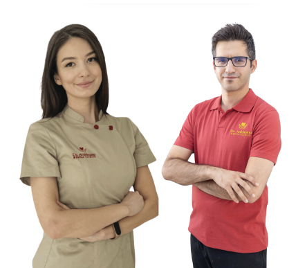
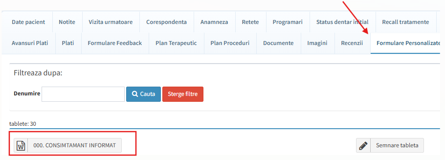
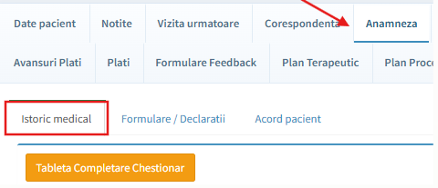
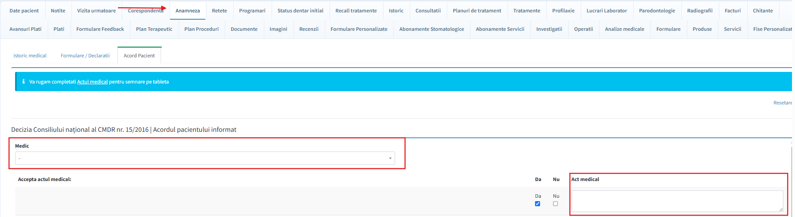
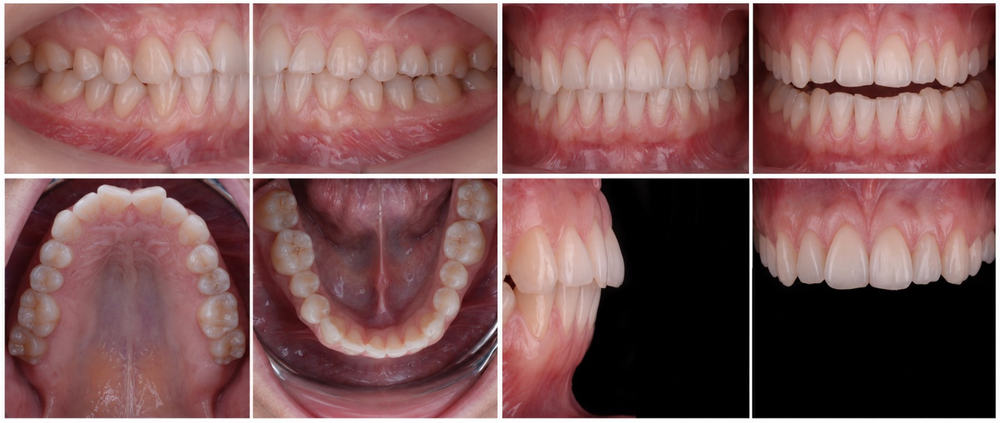

Despre acest manual
Scopul și obiectivele manualului
Manualul Medicului stabilește standardele comune potrivit cărora se desfășoară activitatea medicală în rețeaua Dr. Ardeleanu, astfel încât fiecare pacient să beneficieze de un act medical de calitate, sigur, documentat și adaptat nevoilor sale.
Manualul integrează standardele medicale cu organizarea parcursului pacientului, colaborarea dintre specialități și conduita profesională a medicului. Protocoalele medicale, comunicarea cu pacientul, documentarea cazului și utilizarea sistemelor digitale autorizate trebuie înțelese și aplicate împreună.
Obiective esențiale
- Calitatea actului medical — realizarea unui act medical corect, sigur, documentat și centrat pe pacient, în conformitate cu normele profesionale, bunele practici, indicația clinică, consimțământul informat real al pacientului și protocoalele medicale descrise în prezentul manual.
- Parcursul integrat al pacientului — colaborarea dintre medic, asistent medical, recepție și celelalte specialități, de la prima consultație până la stabilirea planului de tratament, efectuarea tratamentului, monitorizare și continuitatea îngrijirii.
- Conduita profesională și dezvoltarea continuă — comunicarea empatică și lipsită de presiune, documentarea completă a cazului, utilizarea responsabilă a sistemelor autorizate și actualizarea permanentă a pregătirii profesionale.
Statutul contractual al manualului
Manualul Medicului (ADC-MED-01) este un document controlat, inclus în Registrul online de manuale și proceduri Dr. Ardeleanu.
Medicii din rețeaua Dr. Ardeleanu își desfășoară activitatea în baza contractelor de prestări servicii. Manualul Medicului produce efecte în cadrul raportului contractual deoarece aplicabilitatea sa este prevăzută expres în contractele medicilor și în anexele acestora.
Ierarhia documentelor aplicabile medicilor este:
Contractul de prestări servicii → Anexele contractului → Manualul Medicului.
Protocoalele, standardele și regulile descrise în Manualul Medicului fac parte din cadrul contractual aplicabil medicului, în limitele și condițiile stabilite prin contract și prin anexele sale.
În cazul unei neconcordanțe între Manualul Medicului și contract sau anexele contractului, prevalează contractul și anexele sale. În toate situațiile prevalează legea, normele profesionale obligatorii, independența deciziei medicale și siguranța pacientului.
Legătura cu Regulamentul Intern
Manualul Medicului și Regulamentul Intern fac parte din același sistem organizațional și documentar Dr. Ardeleanu, dar produc efecte prin temeiuri juridice diferite.
Regulamentul Intern stabilește cadrul general de organizare aplicabil salariaților și ierarhia documentelor subsecvente acestuia. Pentru medicii colaboratori, Manualul Medicului se aplică în temeiul contractului de prestări servicii și al anexelor contractuale care fac trimitere la acesta.
Manualul Medicului se corelează cu principiile de organizare, siguranță, conduită și trasabilitate prevăzute în Regulamentul Intern, fără ca acesta să creeze un raport de muncă sau să înlocuiască raportul contractual dintre clinică și medic.
Luarea la cunoștință și accesul la manual
La semnarea contractului de prestări servicii, medicul ia la cunoștință Manualul Medicului și confirmă aplicabilitatea acestuia în cadrul raportului contractual, potrivit trimiterii prevăzute în contract și în anexele sale.
Manualul este disponibil permanent în ERP-ul Medicilor (aplicație de gestiune digitală a relațiilor contractuale cu Medicii din Rețeaua Dr. Ardeleanu).
În ERP-ul Medicilor, Manualul Medicului poate fi:
- consultat online în format HTML/Wiki;
- descărcat și păstrat în format PDF.
Versiunea aplicabilă este identificată în Registrul online prin statutul „În vigoare". Versiunile noi ale manualului sunt publicate în ERP-ul Medicilor și comunicate medicilor potrivit mecanismului stabilit prin contract și anexele sale.
Formatul HTML/Wiki reprezintă forma de consultare online, iar documentul PDF aprobat și arhivat reprezintă forma oficială a manualului. În cazul unei neconcordanțe între cele două formate, prevalează documentul PDF aprobat.
Confirmarea luării la cunoștință dovedește comunicarea Manualului Medicului, iar temeiul aplicabilității sale îl reprezintă contractul de prestări servicii și anexele care fac trimitere expresă la acesta.
ICapitolul 1 — Operațional
- 1.1De unde am pornit și ce construim
- 1.2Misiune, valori și responsabilități
- 1.3Structura organizațională a rețelei și fluxuri de escaladare
- 1.4Rolul medicului în sistem
- 1.5De la interviu la prima tură
- 1.6Contract de prestări servicii și documente necesare
- 1.7Uniformă și echipament
- 1.8Harta parcursului pacientului
- 1.9Prima interacțiune — recepția și documentele
- 2.0Radiografia obligatorie
- 2.1Acordul pacientului
- 2.2Consimțămintele semnate în clinică
- 2.3Notițe medicale și statusul dentar
- 2.4Prezentarea planului de tratament la P2
- 2.5Imagistică și documentare foto
- 2.6Follow-up și retenție
- 2.7Gestionarea cazurilor eșuate
- 2.8Sisteme informatice — SPSS și PACS
- 2.9Comunicarea campaniilor și promoțiilor
- 3.0Beneficii și politici HR pentru medici
- 3.1Calcul comision și facturare lunară
- 3.2Securitate la locul de muncă
- 3.3Co-creație cu medicii
- 3.4Laboratorul dentar
- 3.5KPI-uri operaționale
Fundamentele rețelei, onboarding-ul medicului, parcursul pacientului (de la recepție la planul de tratament în P2) și partea operațională — sisteme, HR, financiar, laborator și KPI.
1.1De unde am pornit și ce construim§
Clinicile Dr. Ardeleanu au început în 2017 ca un singur cabinet în Oltenița, deschis de Dr. Virginia Ardeleanu. De acolo au crescut într-o rețea națională de stomatologie și un reper în domeniu în România, construită în jurul unei idei simple: excelență medicală la prețuri accesibile, pentru toată familia.
Rețeaua s-a extins rapid, cu 8 clinici în București (Cotroceni și Dorobanți), Giurgiu, Oltenița, Călărași, Slobozia, Târgoviște și Focșani, dotate cu tehnologie de ultimă generație — tomografe computerizate și lasere dentare — pentru tratamente precise și eficiente, cât mai aproape de pacient. Un element distinctiv este conceptul „Dental Safari", dedicat copiilor, care transformă vizita la dentist într-o experiență plăcută și educativă prin gamificare.
8 clinici · 90+ medici supraspecializați · 30.000 pacienți unici și 70.000 vizite/an · 4.9★. În perioada 2021–2024, numărul de pacienți s-a dublat de la an la an.
1.2Misiune, valori și responsabilități§
Misiune
Să extindem accesul la stomatologie de calitate la prețuri accesibile prin dezvoltare la nivel național: Angajamentul nostru față de accesibilitate și îngrijire de calitate nu se limitează la clinicile existente — se extinde la toți românii, indiferent unde locuiesc.
Valori
Valorile Dr. Ardeleanu s-au conturat în jurul unui angajament etic, menit să ofere servicii de stomatologie excelente la prețuri accesibile pentru întreaga familie. Dr. Ardeleanu este înțeles ca un doctor al comunității în care suntem prezenți.
- Accesibilitate — planuri etapizate, costuri explicate din start; eliminăm barierele în calea îngrijirii dentare de calitate.
- Excelență — protocoale și materiale standard, tehnologie de ultimă generație (tomografe computerizate, lasere dentare), documentare completă.
- Empatie — îngrijire personalizată; pacientul pleacă auzit, înțeles și cu un pas următor clar.
- Creștere continuă — pregătire constantă și supraspecializare; fiecare medic se angajează să crească pentru a oferi pacienților cele mai bune servicii.
Responsabilitățile medicului
Fiecare medic din rețea este responsabil să întruchipeze aceste valori în practica de zi cu zi:
- să ofere fiecărui pacient un plan complet și etapizat, nu doar tratarea problemei evidente;
- să respecte protocoalele standard și să documenteze complet fiecare caz;
- să trateze cu aceeași grijă orice pacient, indiferent de complexitatea sau valoarea cazului;
- să se pregătească continuu și să contribuie la ridicarea standardului echipei.
1.3Structura organizațională a rețelei și fluxuri de escaladare§
Rețeaua este condusă de doi fondatori, care dau cele două linii de autoritate ce se întâlnesc în fiecare clinică:
- Virginia Ardeleanu — Founder & Clinical Director: conduce linia medicală (Departamentul Medical) și Achizițiile (Procurement).
- Vlad Ardeleanu — General Director: conduce linia operațională — Vânzări & Operațiuni, Marketing, HR & Admin, Data & IT, Finance, Legal & Regulatory, precum și Business Development (partajat cu Virginia).
Dubla raportare a medicului
Ca medic ai două linii de raportare care nu se suprapun — este esențial să știi pe care mergi în fiecare situație:
- Funcțional (medical): răspunzi pe linia Medical, sub Virginia Ardeleanu — pentru diagnostic, protocoale clinice, planuri de tratament, standarde de calitate și indicații medicale.
- Administrativ (operațional): lucrezi în cadrul unei clinici coordonate de Managerul de Clinică, sub Directorul de Vânzări & Operațiuni al clusterului tău (C1 sau C2) — pentru program, agendă, spații, consumabile și fluxul operațional zilnic.
Orice ține de actul medical se escaladează pe linia medicală (medic → Departamentul Medical). Orice ține de funcționarea clinicii (vânzări, marketing, administrativ, logistică, financiar, tehnic, regulatory-legal) se escaladează pe linia operațională (medic → Manager de Clinică → Director Vânzări & Operațiuni).
Departamentul Medical (linia Virginia Ardeleanu)
Este casa ta funcțională — sursa standardelor clinice pe care le aplici zilnic:
- Doctors → Medici Specialiști — corpul medical al rețelei, pe cele șapte specialități stomatologice.
- Medical Services — Loredana Manoiu (Medical Services Manager) și Bianca Toma (Medical Services Specialist): coordonează serviciile medicale, standardizarea protocoalelor și suportul medical transversal între clinici.
Tot pe linia Virginia Ardeleanu funcționează și Procurement (Roxana Matei) — achiziția de materiale și consumabile medicale.
Departamentul Vânzări & Operațiuni (linia Vlad Ardeleanu)
Este cadrul operațional în care se desfășoară activitatea ta zilnică. Cele opt clinici sunt împărțite în două clustere, fiecare cu un Director de Vânzări & Operațiuni:
- Cluster C1 — Roxana Ștefan: Oltenița, Călărași, Slobozia, Giurgiu.
- Cluster C2 — Alin Diaconu: București (Dorobanți & Cotroceni), Târgoviște, Focșani.
În fiecare clinică, Managerul de Clinică coordonează două zone: Asistentul Șef (cu asistenții medicali și curățenia) și registratorii medicali. La nivel de rețea, tot pe linia operațională sunt și Customer Care & Call Center și Network Support.
Asistenții medicali cu care lucrezi la scaun raportează administrativ pe linia operațională (Asistent Șef → Manager de Clinică), dar funcțional (medical) răspund tot pe linia Medical — la fel ca tine. De aceea standardul clinic este unul singur în toată rețeaua.
Roluri transversale
Dincolo de liniile de raportare, în parcursul pacientului intervin două roluri-cheie:
- APT — Arhitectul Planului de Tratament este un medic — de regulă medicul care coordonează cazul. El validează diagnosticul, integrează opiniile colegilor din alte specialități și construiește planul de tratament unitar pentru cazurile complexe, multidisciplinare.
- KPG — Key Patient Guide este coordonatorul de pacienți, rol îndeplinit de Managerul de Clinică. Ghidează pacientul pe tot parcursul — de la prezentarea planului de tratament și programări, până la menținerea legăturii pentru continuitate și retenție.
1.4Rolul medicului în sistem§
În Clinicile Dr. Ardeleanu medicul nu este un tehnician care execută proceduri, ci ghidul de sănătate orală pe termen lung al pacientului. El transformă o problemă medicală într-un proces clar.
- Identifică toate problemele, nu doar motivul prezentării.
- Explică diagnosticul în limbaj accesibil și consecințele neintervenției.
- Construiește un plan complet, etapizat, și verifică activ înțelegerea.
- Respectă rolurile din echipă și oferă opțiuni fără presiune.
- Documentează complet fiecare caz.
Executantul face ce cere pacientul și lucrează în tăcere. Ghidul evaluează întreaga cavitate orală, anunță fiecare pas și, când găsește ceva neașteptat, oprește, fotografiază, notează și comunică.
1.5De la interviu la prima tură§
Intrarea în rețea urmează un parcurs standardizat, astfel încât fiecare medic să beneficieze de toate informațiile și resursele necesare înainte de începerea activității. Fiecare etapă este coordonată de un departament responsabil.
1. Interviul cu Departamentul Medical
Sunt evaluate experiența profesională, competențele medicale și compatibilitatea cu activitatea din rețea. În urma interviului, Departamentul Medical transmite prin e-mail o ofertă de colaborare, cu condițiile propuse. Pentru continuarea procesului, medicul confirmă acceptarea ofertei printr-un răspuns scris la e-mail.
2. Contactarea de către Departamentul Operațional
După acceptarea în scris a ofertei, medicul este contactat de Departamentul Operațional.
- prima zi de activitate este considerată zi de probă;
- anterior încheierii contractului și cu respectarea condițiilor legale aplicabile, medicul desfășoară o zi de activitate neremunerată;
- activitatea din această zi este evaluată de un medic desemnat de companie, de o persoană din personalul medical auxiliar sau de responsabilul de clinică;
- finalizarea perioadei de probă nu implică automat încheierea contractului de colaborare.
Tot în această etapă se stabilesc:
- programul de lucru;
- turele;
- disponibilitatea medicului;
- data estimativă a începerii activității.
3. Contract și documente
În cazul unei evaluări favorabile după ziua de probă, se inițiază formalitățile de colaborare: se întocmește contractul de prestări servicii și se verifică documentele necesare (vezi 1.6).
4. Activarea contului SPSS
După transmiterea și validarea tuturor documentelor, responsabilul de clinică solicită Directorului Operațional crearea contului de acces în SPSS. Contul este activat înainte de prima tură, astfel încât medicul să poată utiliza sistemele informatice necesare.
5. Uniformă și echipament
La semnarea contractului, medicul primește uniforma și echipamentul necesar, conform prevederilor din 1.7.
După finalizarea tuturor etapelor de onboarding, medicul este programat pentru prima tură și își începe activitatea în clinică, având la dispoziție toate resursele și accesurile necesare desfășurării activității în condiții optime.
1.6Contract de prestări servicii și documente necesare§
Pentru gestionarea procesului de colaborare, Rețeaua de Clinici Dr. Ardeleanu utilizează ERP-ul Medicilor (aplicație de gestiune digitală a relațiilor contractuale cu Medicii din Rețeaua Dr. Ardeleanu) — punctul unic de acces pentru întregul proces de contractare și administrare a documentelor. Prin ERP-ul Medicilor sunt generate, completate și gestionate toate documentele necesare colaborării.
În ERP-ul Medicilor vei regăsi
- contractul de prestări servicii;
- anexele contractuale;
- dosarul medicului;
- documentele necesare colaborării;
- acordurile și modelele de încetare a colaborării;
- Manualul Medicului (disponibil după finalizarea acestuia).
Toate documentele solicitate se încarcă exclusiv prin ERP-ul Medicilor și sunt arhivate electronic în dosarul personal al medicului. Aplicația poate fi accesată atât de pe calculator, cât și de pe telefon.
🔗Acces ERPERP-ul Medicilor — Dr. Ardeleanu→Documente necesare la semnarea contractului
Toate documentele de mai jos sunt obligatorii:
- Carte de identitate;
- Diplomă de licență;
- Certificat de membru al Colegiului Medicilor;
- Aviz anual de liberă practică;
- Asigurare de malpraxis (RPC);
- Parafă profesională;
- Certificat de specialitate / atestate;
- Certificat de imatriculare a prestatorului (ORC);
- Certificat de înregistrare fiscală (CUI);
- Dovada de cont bancar (IBAN);
- Mărimea uniformei: halat (doamnele doctor) / tricou polo (domnii doctori).
- Toate documentele se încarcă în ERP-ul Medicilor și sunt arhivate în dosarul electronic al medicului.
- Documentele cu termen de valabilitate se actualizează anual, până la 31 ianuarie.
- Medicul are obligația de a încărca documentele reînnoite înainte de expirarea acestora.
- Cu un document obligatoriu expirat, medicul nu poate desfășura activitate medicală până la actualizare.
1.7Uniformă și echipament§
Asigurarea unei utilizări corecte a echipamentului individual de protecție (denumit „Uniforma") pentru protejarea sănătății și securității personalului și pacienților, precum și pentru o imagine unitară și de brand a organizației.
Domeniu de aplicare
Procedura se aplică întregului personal din clinici:
- medici stomatologi;
- asistenți medicali;
- asistent medical șef;
- registratori medicali;
- operatori de curățenie.
Componentele uniformei
- halat / bluză / tricou;
- pantaloni;
- încălțăminte antiderapantă (saboți).
Uniforma medicului stomatolog

- Halat cu cordon — pentru doamnele doctor;
- Tricou polo — pentru domnii doctori;
- uniforma se oferă de companie la semnarea contractului; seturile se comandă câte unul per fiecare clinică în care medicul activează. La peste 3 ture pe săptămână într-o clinică, se suplimentează cu un set;
- uniforma se completează cu pantalon de culoare închisă (negru, tip uniformă — fără blugi) și încălțăminte comodă, antiderapantă. În sezonul rece se poate completa cu halat de iarnă polar alb sau vișiniu.
1.8Harta parcursului pacientului§
Parcursul pacientului are șase etape, fiecare cu un responsabil și o țintă.
| Etapă | Ce se întâmplă | Responsabil |
|---|---|---|
| Contact | Apel → programare (conversie ≥ 75%) | Recepție / Call Center |
| P1 — Prima consultație | Ascultare, examinare, primele tratamente certe, radiografie în sistem | Medic SG + Asistentă |
| Radiografie & documentare | Dosar complet în aceeași zi, imagistică încărcată | Asistent + Medic SG |
| P2 — Plan de tratament | Prezentarea planului complet, etapizat, semnat de pacient | Medic SG |
| Execuție | Proceduri conform planului, multidisciplinar | Medic SG + Specialiști |
| Retenție | Pacient activ pe termen lung | KPG + Medic SG |
1.9Prima interacțiune — recepția și documentele§
Capitol nou în ediția V3.0
Fluxul operațional și medico-legal al pacientului, structurat pe etapele P0–P2 — de la primul contact, până la tratament și programările ulterioare.
- Etapa P0 — Programarea inițială
- Etapa P1 — Prezentarea în clinică
- Etapa P1 — În cabinetul medical
- Etapa P2 — Tratament și verificări la fiecare vizită
- Gestionarea refuzurilor „Nu”
- Escaladarea și regula finală
Înainte de orice tratament trebuie să fie îndeplinite patru condiții: identitatea pacientului este verificată; Înregistrarea Medicală este completată, semnată și se află în termenul maxim de nouă luni; alertele au fost citite și transmise; API-ul corect este semnat și salvat în PDF.
În durere acută sau traumă, medicul evaluează pacientul imediat și decide fluxul. Înainte de act se parcurge strictul necesar: identitatea este verificată, cel puțin verbal, iar API-ul pentru actul de urgență este semnat. Restul documentelor se finalizează imediat după stabilizare, în aceeași vizită. Urgența comprimă ordinea pașilor, nu elimină documentele.
Documentele semnate de pacient la recepție — consimțământul informat și anamneza — formează împreună formularul de Înregistrare Medicală: datele de identificare și profilul psiho-social, Anamneza-CESGS (Chestionarul de Evaluare a Stării Generale de Sănătate, denumirea cerută de Colegiul Medicilor) și cele șase opțiuni privind utilizarea datelor.
Acest capitol descrie fluxul operațional al pacientului în cadrul clinicii, de la primul contact cu organizația până la tratamentul medical și programările ulterioare.
1. Scopul procesului
Scopul acestui proces este de a asigura:
- o experiență profesionistă și coerentă pentru pacient încă de la primul contact;
- colectarea corectă și completă a datelor pacientului;
- introducerea datelor în sistemul SPSS;
- respectarea cerințelor legale privind documentele medicale, consimțămintele și prelucrarea datelor personale;
- comunicarea eficientă între recepție, pacient, medic și asistenta medicală;
- trasabilitatea actului medical și a documentelor semnate;
- continuitatea tratamentului în condiții de siguranță și conformitate.
Oferirea unei experiențe profesioniste încă de la primul contact, colectarea corectă a datelor pacientului, introducerea acestora în SPSS și confirmarea eficientă a programării.
2. Etapa P1 — Prezentarea pacientului în clinică
2.1 Primirea pacientului la recepție
Pacientul se prezintă la recepție la data și ora programării. Recepția are responsabilitatea de a-l întâmpina într-un mod profesionist, de a verifica identitatea acestuia și de a confirma programarea în SPSS.
În această etapă, pacientului i se solicită actul de identitate, iar recepția verifică:
- numele și prenumele;
- existența programării;
- medicul alocat;
- ora programării;
- statusul pacientului în sistem.
După verificare, se inițiază procesul de onboarding. Primirea pacientului trebuie să fie calmă și organizată; pacientul este ghidat clar, mai ales dacă se află pentru prima dată în clinică.
2.2 Verificarea identității și inițierea onboarding-ului
După verificarea actului de identitate, recepția confirmă programarea în SPSS și pregătește documentele necesare pentru completare. Această verificare este importantă pentru evitarea erorilor de identificare și pentru asigurarea corectitudinii documentelor medicale și administrative. Recepția se asigură că pacientul primește formularele potrivite, în funcție de tipul vizitei, specialitatea implicată și procedurile care urmează să fie efectuate.
2.3 Completarea documentației pe tabletă
Pacientul completează documentele necesare pe tabletă, în sistemul SPSS. Recepția transmite formularele aferente vizitei și asistă pacientul.
Consimțământul informat (tab „Formulare personalizate") — documentul prezentat la recepție reunește acordurile de bază pentru prelucrarea datelor medicale, imagistică și marketing.
din tabul „Formulare personalizate" se semnează „Consimțământ informat":

Pentru copii mergem pe fluxul vechi: părintele/tutorele semnează din „Formulare personalizate" documentul „Dosar Medical Complet (Copii)", care reunește consimțământul informat și anamneza într-un singur formular — Înregistrarea Medicală a copilului. Anamneza pediatrică este declanșată automat de CNP-ul de copil.
La recepție se semnează doar consimțământul informat și anamneza. Tot ce este suplimentar, pentru alte manopere, se acoperă prin consimțămintele specifice (vezi 2.2), semnate cu medicul în cabinet.
2.4 Anamneza pacientului
Anamneza este un document esențial — chestionarul de evaluare a stării generale de sănătate, structurat pe modelul standardizat CMDR. Colectează informații despre starea generală, afecțiuni medicale existente, tratamente în curs, alergii, sarcină, intervenții anterioare și alte riscuri medicale relevante.
Pentru întrebările la care pacientul răspunde cu „DA", sistemul SPSS poate genera alerte sau un sumar al statusului medical. Anamneza este necesară înainte de actul medical și se salvează în format PDF.

3. Etapa P1 — În cabinetul medical (P1B)
3.1 Informația clinică și profilul psiho-social
Medicul citește informația din Anamneza-CESGS și o corelează cu examinarea clinică. Important este ca datele să fie actuale, iar orice răspuns care poate schimba conduita să fie discutat înaintea actului medical. Informațiile din formular au un termen intern maxim de valabilitate de nouă luni; la expirare sau la orice schimbare relevantă, formularul se recompletează integral. Medicul poate solicita oricând o recolectare anticipată.
SPSS extrage automat din formularul de Înregistrare Medicală profilul psiho-social și îl afișează în tab-ul Alerte: cât timp poate aloca pacientul, limitările bugetare, preferința pentru etapizare, percepția durerii, experiențele negative și importanța rezultatului estetic. Folosite corect, aceste informații îl ajută pe medic să formuleze un plan realist, să aleagă ritmul potrivit și să explice tratamentul într-o manieră pe care pacientul o poate accepta și urma.
3.2 Consultația și indicația
Medicul discută motivul prezentării, examinează pacientul și stabilește indicația. Planul trebuie explicat într-un limbaj pe care pacientul îl poate înțelege, incluzând scopul, etapele, limitele, riscurile relevante și alternativele aplicabile. Consimțământul informat nu este obținut prin grăbire sau prin repetarea mecanică a unei formule: pacientul trebuie să aibă posibilitatea de a pune întrebări și, dacă este nevoie, de a cere timp. Semnătura confirmă o conversație și o decizie, nu o înlocuiește.
La finalul consultației, înainte ca pacientul să fie așezat pentru actul medical, se semnează API-ul aferent manoperelor vizitei (vezi 2.1).
4. Etapa P2 — Tratament și verificări la fiecare vizită
Un dosar complet la prima vizită nu elimină nevoia de verificare la vizitele următoare. La fiecare prezentare se confirmă identitatea pacientului, actualitatea Înregistrării Medicale (termenul de nouă luni) și eventualele modificări medicale apărute între vizite — tratament nou, diagnostic nou, anticoagulante, sarcină. API-ul se semnează pentru vizita curentă, potrivit regulii de la 2.1.
Verificarea devine cu atât mai importantă la schimbarea medicului, schimbarea specialității, începerea unei etape noi sau înaintea unei proceduri cu document dedicat. Dacă există îndoială, medicul decide documentul necesar înainte de tratament.
5. Gestionarea refuzurilor „Nu” — ce decide medicul
Răspunsurile „Nu” la cele șase opțiuni privind utilizarea datelor ajung la cabinet prin tab-ul Alerte. Registratorul conduce conversația de clarificare; medicului îi revin întrebările clinice și decizia asupra planului. Formularul de Înregistrare Medicală nu se modifică după trimitere: dacă pacientul se răzgândește, semnează un acord individual particularizat, arhivat alături de formular. Consecințele pe categorii:
| Categoria refuzată | Consecința asupra planului de tratament | Temei |
|---|---|---|
| Date medicale | indispensabile actului medical: la refuz menținut, medicul decide ce evaluare sau tratament mai este posibil | art. 9 alin. (2) lit. h) GDPR — furnizarea asistenței medicale |
| Imagini clinice și scanări intraorale 2D/3D | la refuz, medicul stabilește ce tratamente nu pot fi efectuate corect și dacă există alternativă rezonabilă | — |
| Scanări faciale 3D | refuzul exclude tratamentele care depind de planificarea facială digitală: smile design, planificare protetică integrată, planificare ortognatică, simulări 3D, implantologie ghidată avansată | consimțământ explicit, art. 9 alin. (2) lit. a) GDPR (potențial date biometrice) |
| Video fără sunet în cabinet | chirurgia, sedarea, implantologia, endodonția, protetica și procedurile complexe se efectuează exclusiv în cabinete cu înregistrare video; la refuz menținut, aceste proceduri nu pot fi programate. Tratamentele uzuale pot continua, cu ștergerea imaginilor în 30 de zile | interes legitim, art. 6 alin. (1) lit. f) GDPR |
| Marketing | refuzul nu are nicio consecință asupra tratamentului | — |
| RX/CBCT | la refuz, diagnosticarea corectă și efectuarea în siguranță a endodonției, implantologiei, ortodonției complexe, chirurgiei orale, parodontologiei și proteticii complexe devin imposibile; clinica își rezervă dreptul de a refuza procedurile pentru care diagnosticul radiologic este indispensabil | Directiva 2013/59/Euratom (justificare, ALARA); Legea 46/2003, art. 13 |
6. Escaladarea și regula finală
O alertă clinică, o schimbare medicală, o sarcină, tratamentul anticoagulant, o alergie sau o modificare a planului ajung la medic înainte de act. Un document ori un PDF lipsă nu se compensează printr-o promisiune că va fi completat mai târziu: tratamentul așteaptă remedierea.
Identitate verificată. Înregistrare Medicală completă și în termenul maxim de nouă luni. Alerte citite. Fiecare „Nu” clarificat prin dialog și formularul special. API semnat la fiecare vizită și PDF salvat înainte de tratament. Acordul este urmărit activ, dar se obține numai informat și liber; refuzul rămas este respectat, documentat și evaluat de medic.
2.0Radiografia obligatorie§
Niciun pacient adult nu se vede fără radiografie în sistem. Până ajunge în cabinetul medicului, pacientul este preluat de asistent pentru realizarea radiografiei.
Indicația pentru radiografia panoramică (RX) vine din recepție; indicația pentru CBCT o dă medicul stomatolog. Indicația și justificarea clinică aparțin medicului. La copiii sub 6 ani, recomandarea medicului este strict necesară.
Nu mai este necesar un consimțământ separat la fiecare investigație atunci când pacientul a bifat „Da” în formularul de Înregistrare Medicală, la opțiunea privind procedurile radiologice — acordul dat la înregistrare acoperă investigațiile indicate de medic. Dacă pacientul a bifat „Nu” sau opțiunea a rămas necompletată, se obține un consimțământ separat la fiecare trimitere, înainte de efectuarea investigației (la minori — părintele/tutorele). Dacă pacientul refuză, investigația nu se efectuează, iar medicul explică alternativele și limitele care apar în diagnostic sau tratament.
Reguli de programare
- Toate programările se fac de către medic, din cabinet.
- Chestionarul de specialitate este obligatoriu pentru fiecare specializare.
2.1Acordul pacientului§
API — Acordul Pacientului Informat leagă explicația medicului de actul concret care urmează să fie efectuat. Regula generală: la fiecare vizită, medicul și pacientul semnează un API. În mod normal, medicul trece în API toate tratamentele și manoperele vizitei, astfel încât, din momentul în care pacientul se așază pe scaunul stomatologic și până se ridică, toate manoperele să fie acoperite de acordul semnat înainte de începerea actului.
- Acordul pacientului se semnează împreună cu medicul, în cabinet, după explicarea manoperelor care urmează să fie realizate.
- Acordul se completează ori de câte ori se modifică tratamentul planificat sau medicul curant.
- Pentru fiecare ședință se completează acordul aferent manoperelor care urmează să fie efectuate. De exemplu, dacă pacientul are în planul de tratament mai multe obturații, la prima ședință se pot include în acord toate obturațiile care urmează să fie realizate.
- În cazul tratamentelor ortodontice, la montarea aparatului dentar se pot include în acord: aparatul dentar (de exemplu, aparat dentar maxilar metalic), colajul și controalele aferente tratamentului ortodontic.
Acordul se completează din tabul „Anamneză" → „Acord Pacient". Înainte de semnare, medicul completează obligatoriu:
- numele medicului care realizează manopera (câmpul „Medic");
- dintele / dinții pe care se lucrează și actul medical efectuat, cu denumirea exactă a manoperei (câmpul „Act medical") — o descriere generică nu este suficientă;

Pentru pacienții minori se cere CNP-ul copilului, iar în acord apare menționat și reprezentantul legal (tutorele), care semnează în numele minorului.
Dacă la o singură vizită se efectuează mai multe tratamente, se semnează un singur acord care le include pe toate; dacă nu toate manoperele pot fi cuprinse într-un singur document, se semnează mai multe API-uri în aceeași vizită. Semnarea este facilă: pacientul primește documentul prin cod QR și îl semnează digital, de regulă pe propriul telefon; alternativ, pe tableta clinicii. Acordul se salvează automat în PDF în dosarul pacientului, iar asistenta verifică înregistrarea semnăturii și salvarea PDF-ului în SPSS.
Tratamentul începe numai după semnarea API-ului și salvarea PDF-ului, înainte ca pacientul să fie așezat pentru actul medical. Dacă planul se schimbă în timpul consultației sau al tratamentului, medicul explică schimbarea și generează documentul corespunzător înainte de continuare; pacientul nu părăsește cabinetul după un tratament modificat fără ca API-ul corect să fie semnat și salvat.
Lipsa API-ului semnat este cauză de nulitate a asigurării de malpraxis a medicului. Termenii și condițiile polițelor de malpraxis condiționează acoperirea de existența consimțământului informat documentat; fără API, asigurarea devine, cel mai probabil, irelevantă.
2.2Consimțămintele semnate în clinică§
Pe lângă consimțământul informat de bază, anumite manopere necesită consimțăminte speciale, semnate cu medicul în cabinet. Fiecare document are un mod de semnare: olograf (pe hârtie) și/sau digital (pe tabletă).
Clinica utilizează o bibliotecă de consimțăminte pe specialități. Înaintea unei proceduri, medicul și asistenta consultă matricea curentă din SPSS și aleg formularul indicat. Regula generală este semnarea digitală; pentru categoriile marcate olograf în tabelul de mai jos se păstrează și varianta pe hârtie, semnată olograf — listă confirmată operațional în august 2026: chirurgie, sedare conștientă, protoxid de azot, toxină botulinică, acid hialuronic și mezoterapie cu PRF.
| Consimțământ special | Olograf | Digital |
|---|---|---|
| Consimțământ informat privind realizarea tratamentelor chirurgicale | ✓ | ✓ |
| Consimțământ informat al pacientului pentru intervenții chirurgicale excepționale | ✓ | |
| Consimțământ informat privind procedura de sedare conștientă pentru intervențiile stomatologice și de chirurgie orală | ✓ | ✓ |
| Consimțământ informat privind realizarea tratamentelor ortodontice | ✓ | |
| Consimțământ medical — refuz extracții dentare în scop ortodontic | ✓ | |
| Consimțământ informat pentru tratamente și proceduri parodontale | ✓ | |
| Consimțământ informat pentru tratamente stomatologice cu toxină botulinică | ✓ | ✓ |
| Consimțământ informat pentru tratamente stomatologice cu acid hialuronic | ✓ | ✓ |
| Consimțământ informat privind realizarea de proceduri și tratamente de mezoterapie cu PRF | ✓ | ✓ |
| Consimțământ informat privind realizarea tratamentelor protetice | ✓ | |
| Consimțământ informat pentru tratament și proceduri endodontice | ✓ | |
| Consimțământ informat privind realizarea de proceduri medicale post-endodonție | ✓ | |
| Consimțământ medical — refuz grefă gingivală | ✓ | |
| Consimțământ informat referitor la sedarea prin protoxid de azot | ✓ | ✓ |
| Consimțământ informat privind realizarea de tratamente protetice | ✓ | |
| Consimțământ informat privind tratamentul protetic prin proteze dentare | ✓ | |
| Acord informat pacient — disjuncție maxilară pe mini-implanturi | ✓ | |
| Consimțământ de fotografie clinică | ✓ |
În cazul pacienților minori cu tratamente pentru dinții de lapte, NU se oferă și nu se semnează consimțământ suplimentar olograf. Consimțămintele suplimentare olografe la copii se semnează exclusiv când pacienții ajung la medicii cu specializări (endodonție, ortodonție, chirurgie mică).
Pentru minori, consimțămintele specifice se semnează de reprezentantul legal. Dacă lista olografă se modifică în viitor, matricea curentă din SPSS are prioritate față de memoria personalului.
2.3Notițe medicale și statusul dentar§
Notițele medicale reprezintă unul dintre cele mai importante elemente ale fișei pacientului și stau la baza unui act medical corect, coerent și predictibil. Acestea trebuie completate la fiecare consultație și trebuie să conțină toate informațiile relevante din punct de vedere medical și psihologic.
În notițele medicale trebuie consemnate, cel puțin:
- motivul prezentării pacientului;
- dorințele și așteptările pacientului;
- istoricul medical și afecțiunile generale;
- tratamentele în desfășurare;
- alergiile și contraindicațiile;
- observațiile clinice relevante și orice alte informații necesare pentru desfășurarea tratamentului.
Notițele medicale sunt esențiale pentru colaborarea dintre medicii din întreaga Rețea Dr. Ardeleanu, oferind continuitate actului medical și facilitând preluarea cazului de către orice medic, atunci când este necesar.
Alături de notițele medicale, statusul dentar este un element fundamental în stabilirea diagnosticului și elaborarea unui plan de tratament corect. Acesta reprezintă baza prezentării cazului în consultația P2 realizată de medicul de Stomatologie Generală.
Statusul dentar trebuie să reflecte cât mai fidel situația clinică a pacientului și să includă informații precum:
- dinții prezenți și cei absenți;
- restaurările existente;
- cariile și leziunile dentare;
- mobilitatea dentară;
- afectarea parodontală;
- implanturile existente;
- lucrările protetice;
- anomaliile dentare și orice alte modificări clinice relevante.
Un status dentar complet și actualizat permite întocmirea unui plan de tratament corect, facilitează comunicarea interdisciplinară și oferă o imagine clară asupra evoluției cazului pe parcursul tratamentului.
2.4Prezentarea planului de tratament la P2§
Planul de tratament la Programarea 2 (P2)
Obiectivul: P1 + P2. Planul de tratament se construiește, ca principiu, la P1, dar finalizarea lui poate avea loc și la P2. La o parte semnificativă dintre pacienți există justificări reale pentru care planul nu poate fi încheiat la P1 — investigații suplimentare, analize, timp de reflecție sau etapizarea deciziei. Obiectivul clinicii nu se măsoară doar la P1: privite împreună, P1 și P2 trebuie să conducă la un plan de tratament complet pentru toți pacienții care parcurg aceste două programări. P1 rămâne momentul preferat pentru plan, iar P2 este plasa de siguranță care îl închide atunci când există o justificare pentru amânare.
Fluxul de lucru:
- Pacient nou — Medicul de Stomatologie Generală programează pacientul pentru Programarea 2 (P2), la câteva zile după consultația inițială, pentru prezentarea planului de tratament.
- Tratamentele evidente (endo, extracții simple etc.) pot fi programate multidisciplinar înainte de P2, dacă este necesar. Planul de tratament complet se prezintă în cadrul P2, la același medic de Stomatologie Generală care a efectuat consultația inițială.
- Cu o zi înainte de P2, Departamentul Medical verifică dacă planul de tratament este complet și întocmit corect.
- Realizarea planului este o muncă de echipă. Colaborarea dintre toate specialitățile este esențială pentru cea mai bună soluție terapeutică.
- Pacienții cu CBCT — cazuri de chirurgie sau reabilitări complexe: dacă la prima consultație la medicul de Stomatologie Generală se identifică nevoia unei reabilitări complexe, se recomandă realizarea CBCT-ului în clinicile noastre. Pacientul este programat, la câteva zile după realizarea CBCT-ului, la medicul care susține discuțiile de CT. Între timp, CBCT-ul este trimis medicului chirurg, care îl examinează din punct de vedere medical și trimite planul de tratament pe e-mail către Departamentul Medical (Virginia Ardeleanu, Loredana Manoiu și Bianca Toma), în CC cu responsabilul de clinică. Responsabilul de clinică transmite apoi planul de tratament primit de la medicul chirurg către medicul care susține discuția de CT.
Scopul este ca fiecare pacient să beneficieze de un plan de tratament complet și etapizat, nu doar de tratarea problemelor evidente. Pentru acest lucru, fiecare dosar trebuie să conțină:
- notițe medicale;
- status dentar;
- imagini clinice.
Termeni și condiții ale planului de tratament
Planul de tratament acceptat se semnează olograf de pacient, împreună cu termenii și condițiile:
- Planul de Tratament este o estimare orientativă a soluțiilor pentru problemele identificate; poate suferi modificări în funcție de situația clinică. Au fost explicate toate variantele, inclusiv opțiunea de a nu interveni, cu consecințele asociate.
- Modalități de plată: plata se face la finalizarea tratamentelor, cu excepția cazurilor cu terțe părți (laborator dentar, specialiști colaboratori), când este necesar un avans.
- Valabilitate: planul trebuie inițiat în 30 de zile de la emitere; neînceput în 3 luni, problemele se pot agrava, complexitatea și tarifele pot crește.
- Pacientul confirmă că a fost informat cu privire la diagnosticul stabilit, opțiunile de tratament, necesitatea acestora, prognosticul, precum și riscurile și consecințele asociate efectuării sau neefectuării tratamentului. De asemenea, pacientul declară că a citit, a înțeles și a semnat Consimțământul Informat și Acordul Informat al Pacientului, exprimându-și acordul pentru efectuarea tratamentului propus.
- Pacientul își exprimă consimțământul informat și nu a primit garanții privind rezultatul final.
- Acord suplimentar: pentru situații neprevăzute care impun proceduri suplimentare justificate medical, pacientul își dă acordul ca medicul să acționeze sau să colaboreze cu alt specialist.
2.5Imagistică și documentare foto§
Documentarea fotografică reprezintă un standard obligatoriu în Rețeaua Clinicilor Dr. Ardeleanu și face parte din procesul de diagnostic, planificare și monitorizare a tratamentului. Fotografiile trebuie realizate conform protocolului intern, utilizând pozițiile și încadrările standardizate, pentru a asigura o documentare completă și comparabilă în toate clinicile rețelei.
Fotografiile se încarcă în secțiunea Imagini din fișa pacientului, respectând ordinea și denumirile stabilite în protocolul intern.
Scopul documentării fotografice este:
- realizarea unui diagnostic complet și corect;
- întocmirea și prezentarea planului de tratament;
- monitorizarea evoluției tratamentului și compararea rezultatelor în diferitele etape;
- facilitarea colaborării interdisciplinare între medicii din rețea;
- documentarea medicală a cazului;
- utilizarea imaginilor în scopuri educaționale și de marketing, exclusiv cu respectarea acordului pacientului și a procedurilor interne privind utilizarea datelor și imaginilor.
- Fotografiile trebuie realizate conform protocolului standard de fotografie clinică al Rețelei Dr. Ardeleanu.
- Imaginile trebuie să fie clare, bine încadrate și să permită evaluarea corectă a cazului.
- Toate fotografiile se încarcă în secțiunea Imagini din fișa pacientului imediat după realizarea acestora.
- Documentarea fotografică trebuie efectuată la etapele stabilite ale tratamentului, pentru a permite urmărirea evoluției clinice și prezentarea rezultatelor finale.
Exemple — cadrele intraorale standard

2.6Follow-up și retenție§
Relația cu pacientul continuă după tratament. Call Center-ul și medicul o susțin prin apeluri programate:
- Churn30 — apel la 30 de zile pentru pacienții cu P2 neprogramat.
- ChurnOrto60 — apel la 60 de zile de la prima programare la ortodont.
- Churn90 — mesaj la 90 de zile de la ultimul tratament.
- Recenzie negativă → apel în aceeași zi. Post-chirurgie implant → apel la 24h.
Rata de conversie (%) = pacienți programați pentru P2 / pacienți noi (P1) × 100 — se urmărește zilnic, per clinică și per medic.
2.7Gestionarea cazurilor eșuate§
Eșecul poate fi constatat de orice medic curant din clinică și se documentează detaliat în SPSS la rubrica „Notițe", cu manoperă la preț zero pentru pacient.
Tratamente chirurgicale eșuate
- Medicul care identifică eșecul informează medicul chirurg.
- Se introduce în SPSS manopera „Constatare Eșec Chirurgical" (preț zero pacient).
- Pacientul nu suportă costuri suplimentare pentru reintervenție.
- Clinica suportă costul materialelor; se introduce „Refacere Eșec Chirurgical" (preț zero).
Lucrări protetice eșuate
- Constatarea se face de orice medic curant; documentare în SPSS (preț zero pacient).
- Proteticianul care a validat lucrarea inițială suportă costul refacerii / reparației.
- Pacientul poate suporta costuri doar dacă se identifică factori biologici severi sau se modifică tipul lucrării, după validarea cu Departamentul Medical.
„Refacere coroană" · „Refacere lucrare protetică" · „Refacere proteză" · „Refacere AllOn".
În cazul tratamentelor eșuate, medicul care a refăcut manopera va discuta cazul împreună cu Departamentul Medical și responsabilul de clinică, în vederea analizării situației și stabilirii măsurilor necesare.
2.8Sisteme informatice — SPSS și PACS§
SPSS Stoma
Aplicația centrală de management medical și administrativ: agenda programărilor (per cabinet, medic, pacient, sincronizată cu laboratoarele), dosarul pacientului (anamneză, istoric, planuri, radiografii, plăți) și automatizări (formulare, chestionare, notificări). Fiecare utilizator primește user și parolă de la directorul operațional (case sensitive).
PACS
Sistemul de arhivare a imaginilor medicale (RX și CBCT): vizualizare prin viewer DICOM, arhivare 5 ani, transmiterea pachetului de imagini către pacient. Fiecare clinică și medic are cont propriu.
Imaginile se transmit pacientului pe e-mail, cu link către PACS (stocare în standard DICOM). Cititorul integrat al PACS-ului este o versiune light, 2D — CBCT-urile pot fi parcurse doar plan cu plan. Pentru reconstrucție 3D este necesar un viewer compatibil, de tip medical grade, instalat pe stația de lucru; medicii care citesc în mod curent CT-uri au deja o astfel de aplicație. Pentru pacienți există instrucțiunea dedicată „Procedura pentru vizualizarea investigației CBCT”.
2.9Comunicarea campaniilor și promoțiilor§
Definirea și comunicarea campaniilor
Campaniile lunare se stabilesc în colaborare între managerul de Marketing și directorii de vânzări, definind: serviciile promovate (ortodonție, stomatologie generală, implantologie, pedodonție), mesajele-cheie, durata și obiectivele comerciale și medicale. Fiecare clinică operează, în standard, cu ~5 promoții active/lună.
Medicii sunt informați cu câteva zile înainte de lansare, prin comunicare internă (WhatsApp), care conține promoțiile, reducerea aferentă fiecărui tratament și perioada de desfășurare (standard 30 de zile). La final, campaniile sunt înlocuite sau prelungite, în funcție de performanță și relevanță.
Rolul medicului în informarea pacientului
Medicul integrează campaniile în recomandările medicale, responsabil și adaptat nevoilor pacientului. El:
- informează activ pacientul despre campaniile relevante pentru cazul său;
- recomandă soluții medicale adaptate, integrând beneficiile campaniei în planul de tratament;
- susține decizia pacientului prin explicații clare, personalizate și responsabile.
Comunicarea se face întotdeauna în context medical, adaptată nevoilor reale ale pacientului. Ca suport, medicii folosesc site-ul clinicii (landing page-uri dedicate), materiale vizuale (cazuri before/after, testimoniale) și explicații bazate pe rezultate reale și experiență clinică.
Reguli de conformitate și etică în promovare
Comunicarea se realizează conform Codului Deontologic al Colegiului Medicilor. Actul medical nu poate fi tratat ca produs comercial; comunicarea respectă responsabilitatea, onestitatea, echilibrul și respectul față de pacient.
Principii de bază. Comunicarea trebuie să fie veridică (informații reale și verificabile), echilibrată (fără exagerări), clară și accesibilă (adaptată pacientului) și responsabilă (fără factori non-medicali în decizie).
3.0Beneficii și politici HR pentru medici§
Angajații și rudele de gradul I beneficiază de reduceri la tratamentele efectuate în rețea, în funcție de vechime.
| Tratament | 0–6 luni | 6–24 luni | +24 luni | Rude gr. I |
|---|---|---|---|---|
| Consultații, imagistică, profilaxie | 100% | 100% | 100% | 100% |
| Odontale, chirurgie, paro, endo, pedo | 50% | 70% | 100% | 50% |
| Implantologie, protetică | 0% | 50% | 60% | 30% |
| Estetică, ortodonție | 0% | 30% | 50% | 25% |
3.1Calcul comision și facturare lunară§
Comisionul se calculează lunar, pe baza tratamentelor înregistrate în sistem — sursa unică de adevăr fiind raportul lunar de comisioane, completat cu anexele de laborator.
- Procent negociat per specializare, aplicat pe sumele achitate de pacienți în lună. La promoții/reduceri, pe prețul efectiv încasat.
- Ortodonție și implantologie: se comisionează manoperele efectuate, indiferent de suma achitată.
- Proteticieni: pe suma încasată minus costul de laborator și transport, doar după facturarea laboratorului.
- Imagistica nu generează comision (excepție: KPI CT P1).
KPI aplicat exclusiv medicilor de Stomatologie Generală care preiau consultațiile inițiale (P1 — prima vizită a pacienților noi). Scopul: stimularea unui plan de tratament complet și corect încă de la prima consultație, prin recomandarea unui Computer Tomograf (CT).
Indicatori
- P1 — numărul pacienților prezenți la prima vizită;
- CTP1 — numărul de investigații CT realizate la prima vizită;
- Rata CTP1 = CTP1 / P1 — procentul de conversie al pacienților noi către un CT la prima consultație.
Eligibilitate și comision. Medicul de Stomatologie Generală devine eligibil dacă Rata CTP1 > 20%. La atingerea pragului, primește un comision de 5% din valoarea tuturor CT-urilor realizate în luna curentă — indiferent de tipul CT-ului și de data realizării (la prima programare sau nu). Suma se adaugă la calculul lunar al comisionului aferent tratamentelor.
Facturare și plată
Prestatorul emite lunar o factură fiscală către Beneficiar, cu suma aferentă prestației la fiecare punct de lucru, conform anexei atașate, pe care o încarcă obligatoriu în SPV. Comisionul se calculează în lei, pe măsura efectuării și încasării tratamentelor, conform sumelor achitate de pacient pentru fiecare intervenție.
- Factura se trimite pe e-mail la facturare@ardeleanu.ro.
- Termen facturare și încărcare în SPV: 15–18 ale lunii următoare, pentru serviciile prestate în luna anterioară.
- Plata: 20 ale lunii, prin transfer bancar în contul Prestatorului (termen decalabil în perioada sărbătorilor legale și a weekendurilor).
- Plata se efectuează după verificarea și semnarea raportului de activitate de către ambele părți; eventualele greșeli de facturare se corectează.
3.2Securitate la locul de muncă§
Incidente non-clinice
Orice eveniment care nu afectează direct un act medical dar compromite operațiunile, echipa, datele sau reputația: HR, administrativ, tehnic, data breach. Se raportează în formularul digital HR în max. 24h (1h pentru impact major), către Managerul de Clinică și Directorul Operațional.
Securitate și evacuare
- Plan de evacuare afișat la fiecare ieșire; responsabil de evacuare per tură.
- 2 drill-uri/an per clinică; țintă: evacuare completă în sub 3 minute.
- Accident de muncă: prim ajutor → 112 (dacă e cazul) → notificare în 1h → formular în 24h → RCA și plan de remediere.
3.3Co-creație cu medicii§
Standardul Dr. Ardeleanu nu se impune — se construiește. Un protocol intră în manual doar dacă trece trei filtre: clinic (validat în practică), al echipei (discutat cu medicii care îl aplică) și al pacientului (produce o experiență mai bună). Ce se dovedește că nu funcționează — se schimbă.
Cum contribui
- Propunere protocol — prin formularul din portal, discutat în ședința lunară.
- Lecție de caz — cazuri cu învățăminte generalizabile, prezentate lunar (anonim).
- Feedback continuu — punct fix săptămânal: „Ce nu funcționează din ce am scris?"
3.4Laboratorul dentar§
Fluxul de lucru pentru transmiterea, urmărirea și gestionarea lucrărilor protetice realizate în colaborare cu laboratoarele partenere ale Rețelei de Clinici Dr. Ardeleanu, indiferent dacă amprentarea este realizată prin tehnică clasică sau digitală.
În Rețeaua Dr. Ardeleanu se încurajează realizarea tratamentelor protetice prin flux digital, utilizând scanerele intraorale Medit, disponibile în toate clinicile rețelei. Obiectivul este ca majoritatea tratamentelor protetice să fie realizate prin scanare intraorală, pentru o precizie crescută, o comunicare eficientă cu laboratorul și un confort superior pentru pacient.
1. Amprentarea pacientului
Medicul protetician alege metoda în funcție de indicația clinică:
- Amprentare convențională — cu materialele specifice protocolului clinic;
- Amprentare digitală — cu scannerul intraoral Medit, conform protocolului de scanare.
2. Introducerea lucrării în SPSS
Indiferent de metodă, medicul creează o fișă de laborator în modulul „Lucrări laborator" din SPSS, completând:
- laboratorul către care va fi transmisă lucrarea;
- denumirea lucrării protetice (dacă lucrarea nu apare după selectarea laboratorului, înseamnă că acel laborator nu execută acel tip de lucrare);
- poziția dinților, arcadei sau hemiarcadei de restaurat, prin selectare din oglinda dentară 3D;
- culoarea restaurării;
- costul laboratorului și costul pacientului (completate automat după selectarea lucrării);
- medicul responsabil de caz;
- termenul de livrare;
- observațiile pentru tehnician — trebuie să conțină toate informațiile necesare realizării lucrării.
3. Transmiterea amprentei către laborator
3.1. Amprenta digitală. Înainte de scanare, medicul creează cazul în aplicația Medit, completând: numele pacientului, tipul lucrării, materialul și culoarea. După scanare: se apasă Order, se selectează laboratorul din lista de parteneri, iar în câmpul Memo se introduc toate informațiile consemnate și în rubrica Observații din fișa SPSS. Cazul se transmite electronic către laborator.
3.2. Amprenta clasică. După realizare, amprenta se învelește în șervețele umede (previne deformarea), se protejează cu folie cu bule și se introduce într-o cutie de transport împreună cu fișa de laborator tipărită din SPSS. Sub supravegherea medicului curant, coletul este expediat de registratorii medicali:
- prin Fan Courier, în mod obișnuit;
- prin maxi-taxi, în situații excepționale, când e necesară livrarea în timp cât mai scurt.
4. Comunicarea cu laboratorul
Pe întreaga perioadă de realizare, medicul curant menține o comunicare permanentă cu tehnicianul responsabil, pentru a clarifica:
- detalii privind designul restaurării;
- alegerea materialelor;
- modificări necesare pe parcursul execuției;
- termenele de finalizare;
- orice alte aspecte tehnice necesare unui rezultat optim.
5. Gestionarea pieselor protetice
- Analogi — fiecare laborator partener deține în custodie un stoc de analogi pentru lucrările pe implant;
- Cilindri și bonturi protetice — laboratorul colaborează direct cu Departamentul de Achiziții pentru comandarea componentelor;
- Stocul clinicii — fiecare clinică deține un stoc propriu de componente, atât pentru amprentarea digitală, cât și convențională.
Cazuri cu alte sisteme de implant. Dacă pacientul poartă un sistem de implant diferit de cele utilizate în rețea, medicul curant, împreună cu Managerul Clinicii și Departamentul de Achiziții, identifică furnizorul componentelor. Ulterior:
- se solicită oferta de preț;
- costurile sunt comunicate pacientului;
- după ce pacientul își exprimă acordul și achită în clinică contravaloarea componentelor protetice necesare, acestea se comandă către furnizorul sau laboratorul desemnat;
- amprentarea și continuarea tratamentului se realizează numai după recepționarea componentelor.
Responsabilități
| Rol | Responsabilități |
|---|---|
| Medicul protetician | stabilește metoda de amprentare; completează fișa de laborator în SPSS; transmite informațiile complete către laborator; urmărește evoluția lucrării și comunică permanent cu tehnicianul. |
| Registratorul medical | pregătește și expediază coletul către laborator conform indicațiilor medicului. |
| Laboratorul dentar | realizează lucrarea conform fișei și observațiilor; comunică medicului neclaritățile tehnice; respectă termenul de execuție. |
| Departamentul de Achiziții | gestionează comenzile pentru componentele protetice necesare laboratoarelor și clinicilor. |
Anexa 1 — Lucrări protetice realizate de laboratoarele partenere
La selectarea laboratorului în SPSS, medicul trebuie să se asigure că laboratorul ales execută tipul de lucrare dorit. Dacă lucrarea nu apare în listă după selectarea laboratorului, înseamnă că acel laborator nu realizează acel tip de lucrare. Tabelul de mai jos prezintă corespondența dintre tipurile de lucrări și laboratoarele partenere.
| Manopera SPS | Mușetescu | DRL Dental Lab |
|---|---|---|
| Coroană metalică | ✓ | |
| Coroană metalo-ceramică parțial fiz. | ✓ | |
| Coroană metalo-ceramică pe implant | ✓ | |
| Coroană metalo ceramică total fiz. | ✓ | |
| Coroană provizorie PMMA pe implant | ✓ | ✓ |
| Coroană PMMA | ✓ | ✓ |
| Coroană zirconiu | ✓ | ✓ |
| Coroană zirconiu pe implant | ✓ | ✓ |
| Coroană zirconiu cu ceramică PREMIUM | ✓ | ✓ |
| Coroană zirconiu cu ceramică PREMIUM pe implant | ✓ | ✓ |
| Coroana Emax | ✓ | ✓ |
| Fațete PREMIUM EMAX/dinte | ✓ | ✓ |
| Lucrare de lungă durată ALL ON X | ✓ | ✓ |
| Lucrare definitivă PREMIUM Fast & Fixed (compozit) | ✓ | ✓ |
| Lucrare SUPERIOR Fast & Fixed (zirconiu) | ✓ | ✓ |
| Lucrare definitivă Fast & Fixed (metalo-ceramică) | ✓ | |
| Lucrare provizorie All-On | ✓ | ✓ |
| Gutieră albire / bruxism / contenție | ✓ | ✓ |
| Kemeny 1-2 / 3-5 dinți | ✓ | ✓ |
| Maryland | ✓ | ✓ |
| Maryland un dinte suplimentar | ✓ | ✓ |
| ONLAY / INLAY (coroană parțială) | ✓ | ✓ |
| Proteză scheletată | ✓ | |
| Proteză total / parțial acrilică | ✓ | ✓ |
| Proteză total / parțial elastică | ✓ | |
| Reparație / Căptușire proteză acrilică | ✓ | ✓ |
| Pivot zirconiu | ✓ | |
| Pivot metalic | ✓ |
3.5KPI-uri operaționale§
Fiecare etapă are un KPI operațional și un indicator de experiență. Ambele contează egal: un sistem eficient fără grijă nu produce excelență.
| Etapă | KPI operațional | Țintă |
|---|---|---|
| Contact | Conversie apel → programare | ≥ 75% |
| Prezență | Rata no-show | ≤ 15% |
| P1 — Documentare | Dosar complet în aceeași zi | ≥ 98% |
| P2 — Plan | Rata acceptare plan de tratament | ≥ 65% |
| Execuție | Proceduri conform planului | ≥ 95% |
| Retenție | Pacienți activi la 12 luni | ≥ 85% |
Nu absența greșelilor, ci prezența constantă a grijii — în fiecare apel, în fiecare minut din cabinet, în fiecare follow-up. Standardul nostru: „cel mai bine tratat am fost la Dr. Ardeleanu — și asta povestesc oamenilor".
IICapitolul 2 — Comportamental
- 2.1Ancorarea operațională a comportamentului
- 2.2Prima consultație (P1) — ce observi, ce faci, ce spui
- 2.3Diagnosticul conversațional
- 2.4Prezentarea planului de tratament
- 2.5Pârghii de influență — cum îl ajuți pe pacient să decidă
- 2.6Gestionarea obiecțiilor structurate
- 2.7Follow-up și închiderea vânzării — rolul medicului
- 2.8Managementul situațiilor critice
- 2.9Ce înseamnă comportament medical Dr. Ardeleanu
Cum transformă medicul diagnosticul și planul în înțelegere, decizie și aderență — ce observi, ce faci, ce spui la fiecare moment.
2.1Ancorarea operațională a comportamentului§
Protocoalele de comportament medical stabilesc cum transformă medicul diagnosticul și planul de tratament în înțelegere, decizie și aderență din partea pacientului. Nu e vorba de stil personal sau empatie generică — comportamentul medical este parte integrantă a actului clinic și influențează direct rezultatul tratamentului.
Un plan corect, explicat incorect, este un plan neacceptat sau nefinalizat.
În fiecare etapă a interacțiunii, pacientul se află într-un context psihologic specific — incertitudine, anxietate, presiune sau rezistență. Dacă aceste stări nu sunt recunoscute și gestionate corect, pacientul nu va urma tratamentul, indiferent de calitatea actului medical. Rolul medicului nu este doar să prezinte informații, ci să ghideze pacientul astfel încât decizia să fie liberă, informată și asumată.
Protocoalele din acest capitol stabilesc comportamentul minim acceptabil în momentele critice ale relației medic–pacient. Nu înlocuiesc judecata clinică și nu acoperă toate situațiile posibile, dar reduc variația între medici și cresc consistența experienței pacientului. Ele definesc:
- contextul în care se află pacientul;
- riscurile asociate unei execuții incorecte;
- comportamentul așteptat al medicului.
Modelul din spatele capitolului
Tot ce urmează este construit pe un singur mecanism: pacientul ia decizii corecte doar când trece, în ordine, prin trei stări. Dacă una lipsește, procesul se blochează — indiferent cât de bun e planul de tratament.
| Starea | Ce înseamnă | Fără ea se întâmplă | Semnalul că există |
|---|---|---|---|
| Siguranță | Pacientul se simte în control, nejudecat, fără presiune | Nu procesează informația — aude, dar nu înregistrează | Întreabă, privește direct, respiră normal |
| Claritate | Înțelege problema, consecințele și opțiunile cu cuvintele lui | Amână, evită decizia, spune „mă mai gândesc" | Poate explica situația cu propriile cuvinte |
| Asumare | Simte că decizia îi aparține lui, nu a fost convins | Acceptă în cabinet și dispare după prima ședință | Pune întrebări despre cum va decurge tratamentul |
Nu poți produce claritate fără siguranță. Nu poți produce asumare fără claritate. Dacă sari o treaptă, trebuie să te întorci la ea — de fiecare dată.
Ce face diferit un medic Dr. Ardeleanu
| Medicul care reacționează | Medicul la Dr. Ardeleanu |
|---|---|
| Răspunde la ce spune pacientul | Răspunde la ce simte pacientul |
| Prezintă planul când e gata el | Prezintă planul când e gata pacientul |
| Tratează obiecția ca pe un refuz | Tratează obiecția ca pe un semnal de anxietate sau lipsă de claritate |
| Tăcerea pacientului îl grăbește | Tăcerea pacientului îl oprește — este informație |
| Scopul lui este să termine consultația | Scopul lui este ca pacientul să plece cu o decizie liberă și informată |
| Conversia e obiectivul | Conversia e consecința unui proces corect |
2.2Prima consultație (P1) — ce observi, ce faci, ce spui§
P1 nu e doar o examinare — e momentul în care pacientul decide dacă are încredere. Structura pe faze:
| Fază | Ce faci | Ce spui |
|---|---|---|
| 0–10′ Conectare | Stai față în față, nu la calculator. Asculți complet, fără să notezi. Identifici motivul real. | „Înainte să începem, spuneți-mi ce vă aduce astăzi." — apoi taci și asculți. |
| 10–20′ Examinare | Examinare completă (extraoral, intraoral, toate cadranele). Anunți fiecare pas — nu lucrezi în tăcere. | „Acum mă uit la musculatură — o să simțiți o apăsare ușoară." |
| 20–25′ Documentare | Anamneză completă în SPSS; motivația pacientului notată cu cuvintele lui. | „Am câteva întrebări despre sănătatea generală — mă ajută să văd tabloul complet." |
| 25–38′ Imagistică | Asistenta preia pentru RX/CBCT/scanare/fotografii. Rămâi disponibil pentru întrebări. | „Colega vă face câteva radiografii — ne ajută să vedem tot înainte să discutăm soluțiile." |
| 38–50′ Primele tratamente | Execuți tratamentele certe (detartraj, obturații simple, urgențe). Pacientul pleacă cu un rezultat concret. | „Astăzi putem rezolva deja [procedura] și plecați cu un pas făcut." |
| Final Închidere | Două programări făcute înainte să iasă: P2 pentru plan și una cu tine pentru continuare. | „Vă prezentăm planul complet la [data]; vă aștept la [data] să continuăm." |
Până la 12 ani, aceeași logică clinică, altă experiență: scopul nu e să tratezi dinții, ci să construiești prima amintire pozitivă. Explorezi înainte să examinezi, ceri acordul pentru fiecare pas, controlezi starea emoțională înainte de cea a dinților, ghidezi părintele discret (calm, fără „nu doare") și închei cu o victorie: „Ai fost extraordinar de curajos."
2.3Diagnosticul conversațional§
Diagnosticul conversațional nu este o tehnică de vânzare — este instrumentul prin care medicul înțelege cine este pacientul din fața lui, nu doar ce are în gură. Un „vreau să-mi fac dinții" poate însemna o nuntă peste 3 luni, recâștigarea încrederii sau doar să nu mai doară la mâncat — trei motivații care produc trei conversații diferite.
Cele 4 straturi ale motivației
- Motivul declarat — ce spune că vrea („o obturație la 16").
- Problema reală — ce îl deranjează efectiv („mă doare când mănânc").
- Motivația profundă — de ce contează acum și nu acum 6 luni („am un eveniment important").
- Teama ascunsă — ce nu a spus, dar transpare: frica de durere, rușinea de neglijență, îngrijorarea legată de costuri.
Întrebări care deschid vs. care închid
Întrebările închise („Vă doare?", „Ați mai fost la dentist?", „Înțelegeți?") opresc conversația. Cele deschise o duc mai departe:
| În loc de… | Întrebi… |
|---|---|
| „Vă doare?" | „Cum descrieți ce simțiți?" |
| „Ați mai fost la dentist?" | „Cum a fost ultima experiență la dentist?" |
| „Vreți să facem și celelalte tratamente?" | „Ce vă îngrijorează cel mai mult din ce v-am spus?" |
| „E urgent să tratăm asta." | „Ce ar însemna să rezolvăm asta în următoarele 2 luni?" |
Cum explici diagnosticul
Diagnosticul nu se prezintă — se construiește împreună cu pacientul. Scopul nu e ca tu să explici, ci ca el să înțeleagă cu propriile cuvinte. Cinci pași:
- Arăți — radiografia/fotografia pe ecran, cu degetul pe zonă: „Uitați-vă aici, aceasta e zona despre care vorbim."
- Descrii simplu — fără jargon; dacă folosești un termen tehnic, îl explici imediat: „Zona mai întunecată arată că osul a fost afectat în timp."
- Conectezi la viața lui — „De aceea simțiți durere când mâncați pe partea asta."
- Verifici înțelegerea — nu „ați înțeles?", ci: „Cum ați descrie dumneavoastră ce se întâmplă aici?"
- Lași spațiu — pauză reală de 5–8 secunde, apoi: „Ce gânduri aveți?"
2.4Prezentarea planului de tratament§
Prezentarea planului de tratament este cel mai complex moment comportamental din tot parcursul pacientului: primește simultan un diagnostic dificil, un cost potențial surprinzător și o decizie de luat. Creierul uman nu funcționează bine cu toate trei simultan — de aceea există o ordine obligatorie, nu opțională.
Structura narativă — ordinea care produce decizie reală
| Etapa | Ce faci | Regula de aur |
|---|---|---|
| 1. Problemă | Prezinți ce ai găsit — vizual, clar, pe înțelesul lui. Verifici înțelegerea după fiecare zonă; pacientul confirmă că a înțeles înainte să mergi mai departe. | Nu treci mai departe fără confirmare. |
| 2. Consecință | Explici ce se întâmplă dacă nu se tratează — factual, fără dramatizare. | Nu ameninți. Informezi. Tonul e calm și neutru. |
| 3. Soluție | Prezinți planul — etapizat, cu medicul alocat, cu durata estimată. | Planul e complet, chiar dacă execuția e etapizată. |
| 4. Cost | Prezinți prețul după ce a înțeles problema și soluția — niciodată înainte. | O cifră înțeleasă e o investiție. O cifră neînțeleasă e un șoc. |
| 5. Decizie | Lași spațiu. Nu convingi. Clarifici și taci. | Decizia aparține pacientului. Rolul tău e să o facă posibilă. |
Cum prezinți costul — protocolul exact
- Prezinți mai întâi etapizarea — ce se face în fiecare etapă și de ce în această ordine.
- Dai costul per etapă înainte de totalul general — creierul procesează mai ușor bucăți.
- Spui totalul clar, fără să îl minimizezi sau să îl dramatizezi.
- Faci o pauză reală de 5–8 secunde după ce ai spus cifra. Nu umpli tăcerea.
- Observi reacția — și abia după întrebi: „Ce gânduri aveți?"
- Prezinți opțiunile de plată în rate doar după ce ai observat reacția la preț — nu înainte.
Micro-blocajele în timpul prezentării
Un micro-blocaj apare când pacientul iese din fereastra de toleranță în timp ce prezinți. Nu e un refuz — este un semnal că siguranța sau claritatea s-a pierdut. Dacă îl ignori și continui, pierzi pacientul fără să îți dai seama.
| Semnalul | Ce se întâmplă în pacient | Ce faci tu |
|---|---|---|
| Privire pierdută, absență | A ieșit din conversație — procesează intern ceva care l-a blocat | Oprești. „Văd că v-ați gândit la ceva. Ce s-a întâmplat?" |
| Rigiditate bruscă, postură închisă | Anxietate sau rușine activată de un cuvânt sau o cifră | Oprești prezentarea. Pauză. „Înțeleg că e multă informație. Ce vă îngrijorează cel mai mult acum?" |
| Glumă defensivă, schimbare de subiect | Evitare — nu poate procesa ceea ce a auzit | Nu continui gluma. Reancorezi calm: „Înainte să mergem mai departe — ce ați înțeles până acum?" |
| Răspuns monosilabic la întrebări | S-a retras emoțional — acceptă ca să scape | Oprești. Nu continui prezentarea. „Am impresia că ceva nu e clar sau vă îngrijorează. E în regulă să spuneți." |
| Tăcere după preț, fără reacție | Procesează sau e șocat — nu știi încă care | Taci tu 8 secunde. Dacă tot nu reacționează: „Ce gânduri aveți?" |
2.5Pârghii de influență — cum îl ajuți pe pacient să decidă§
Medicul trebuie să știe ce pârghii mișcă fiecare pacient. A influența nu înseamnă a manipula — înseamnă a-l ajuta pe pacient să ia cea mai bună decizie pentru sănătatea lui acum, nu peste șase luni.
Pacientul care pleacă „să se gândească" și revine cu un plan propriu pierde momentul potrivit pentru tratament. Oferă-i din start cea mai bună variantă — completă și etapizată — și ajută-l să o asume în cabinet, nu acasă.
Pârghiile pe care apeși
- Nivelul de educație — explică de ce contează intervenția și ce se întâmplă concret dacă o amână.
- Un eveniment-reper — o nuntă, un interviu, o vacanță la care pacientul vrea să arate și să se simtă bine.
- Nevoia concretă — durere, estetică sau funcție. Pliază mesajul pe pârghia care contează cel mai mult pentru el.
2.6Gestionarea obiecțiilor structurate§
Obiecțiile nu sunt refuzuri. Sunt semnale — de anxietate, de lipsă de claritate sau de nevoie de control. Medicul care înțelege asta nu se apără și nu convinge. Clarifică.
Structura de răspuns — valabilă pentru orice obiecție
Există o structură de răspuns care funcționează pentru orice obiecție — nu pentru că e un șablon, ci pentru că urmează logica stărilor pacientului.
| Pasul | Ce faci | De ce funcționează |
|---|---|---|
| 1. Validezi | Recunoști că obiecția are sens — fără să o contrazici. | Pacientul simte că nu e judecat. Siguranța rămâne. |
| 2. Clarifici | Înțelegi ce stă în spatele obiecției — nu presupui. | Obiecția declarată ascunde adesea obiecția reală. |
| 3. Răspunzi la obiecția reală | Adresezi ce l-a blocat efectiv, nu ce a spus. | Răspunsul la obiecția greșită nu rezolvă nimic. |
| 4. Lași spațiu | Nu umpli cu argumente suplimentare după ce ai răspuns. | Argumentele în plus reactivează anxietatea. |
Cele 5 tipologii de obiecții — scenarii
| Obiecția pacientului | Ce NU spui | Ce spui | De ce funcționează |
|---|---|---|---|
| „E prea scump pentru mine." | „Dar gândiți-vă ce se întâmplă dacă nu tratați…" | „Înțeleg. Să vedem împreună ce e urgent acum și ce poate fi etapizat în funcție de posibilitățile dumneavoastră." | Oferi control și o cale concretă. Nu judeci, nu presezi. |
| „Mă mai gândesc." | „Cât timp vă trebuie? Nu e bine să așteptați." | „Firesc. Ce anume vă mai ridică semne de întrebare? Poate vă pot clarifica ceva acum." | Obiecția reală e ascunsă în spatele „mă gândesc". O scoți la suprafață fără presiune. |
| „La altă clinică am plătit mai puțin." | „Da, dar calitatea noastră e alta…" | „Prețurile pot diferi în funcție de ce include planul. Vreți să vedem exact ce cuprinde devizul nostru față de ce ați primit?" | Nu ataci competiția. Compari transparent, din poziție de siguranță. |
| „Nu știu dacă am timp pentru atâtea ședințe." | „Tratamentul e urgent, nu aveți cum să amânați." | „Să construim un plan în funcție de programul dumneavoastră. Care e cel mai convenabil interval în săptămână?" | Transformi un obstacol în participare activă la planificare. |
| „Vreau să mă consult cu soțul/soția mai întâi." | „Puteți decide dumneavoastră, nu e nevoie de…" | „Bineînțeles. Vă trimit devizul complet astăzi ca să aveți tot ce vă trebuie pentru conversație. Când v-ar conveni să vă contactăm?" | Respecți relația și menții controlul ulterior. |
Obiecții complexe — situații mai dificile
| Obiecția pacientului | Ce NU spui | Ce spui | De ce funcționează |
|---|---|---|---|
| „Doctorul meu de familie a spus altceva." | „Doctorul dumneavoastră de familie nu e specialist în stomatologie." | „E important să aveți toate perspectivele. Ce anume v-a spus? Poate clarific cum se leagă de situația dumneavoastră orală." | Nu ataci alt medic. Integrezi informația și clarifici. |
| „Am citit pe internet că…" | „Internetul nu e o sursă medicală de încredere." | „Interesant — ce ați găsit? Uneori informațiile sunt corecte în general dar nu se aplică fiecărui caz. Să vedem dacă se potrivește situației dumneavoastră." | Validezi curiozitatea. Personalizezi informația. |
| „Un prieten medic mi-a zis că nu e necesar." | „Prietenul dumneavoastră nu a văzut radiografia." | „Înțeleg că aveți o perspectivă din exterior. Haideți să privim împreună radiografia — poate ajută să vedem concret de ce recomand asta în cazul dumneavoastră specific." | Folosești evidența vizuală, nu autoritatea. Pacientul vede, nu e convins. |
2.7Follow-up și închiderea vânzării — rolul medicului§
Follow-up-ul nu este o activitate administrativă, iar telefonul, SMS-urile și programările proactive sunt responsabilitatea recepției și a KPG — nu fac obiectul acestui manual. Rolul medicului în follow-up este unul singur și esențial: consolidează decizia și închide vânzarea tratamentului încă din cabinet, ca pacientul să nu plece nehotărât.
Pacientul nu pleacă „să se gândească". Medicul îi dă cea mai bună variantă, o argumentează clar și obține angajamentul (semnătura planului sau programarea următoarei ședințe) înainte ca pacientul să iasă pe ușă. Vânzarea se închide în cabinet, nu la telefon.
Ce face medicul la finalul fiecărui contact
- Recapitulează valoarea — ce s-a rezolvat azi și ce se rezolvă în pașii următori. Pacientul trebuie să simtă progresul.
- Creează urgența sănătoasă — explică concret ce se întâmplă dacă amână (cost mai mare, complicații, timp pierdut). Apasă pârghia potrivită (vezi 2.5).
- Cere angajamentul acum — „Următorul pas este [procedura]. Hai să o programăm chiar acum." Oferă două variante de dată, nu întrebarea „dacă".
- Programează direct din cabinet — programarea următorului pas se face din cabinet; la recepție pacientul doar achită tratamentul.
Închiderea unui tratament reușit
La finalul unei proceduri reușite, medicul fixează emoția pozitivă și deschide pasul următor:
Recenzia — medicul o cere în cabinet
Recenzia se cere de către medic, direct în cabinet, imediat după ce a confirmat rezultatul și mulțumirea pacientului — atunci când experiența e proaspătă. Recepția/KPG poate sprijini ulterior cu trimiterea linkului sau a codului QR, dacă e nevoie.
| Ce face medicul | Ce NU face medicul |
|---|---|
| Confirmă rezultatul și mulțumirea pacientului, apoi cere recenzia. | Nu cere recenzia în fața altor pacienți sau într-un moment nepotrivit. |
| Lasă pacientul cu o impresie pozitivă și cu pasul următor decis. | Nu oferă reduceri sau cadouri în schimbul recenziei. |
| Predă recepției un pacient mulțumit și hotărât. | Nu cere recenzii de la pacienți nemulțumiți sau în mijlocul unui tratament lung. |
2.8Managementul situațiilor critice§
Situațiile critice nu sunt excepții — sunt parte previzibilă a practicii medicale. Medicul care le-a gândit înainte le gestionează calm. Medicul care improvizează le escaladează. Fiecare situație de mai jos urmează același format: ce se întâmplă, care e riscul dacă nu intervii corect, și ce faci pas cu pas.
1. Pacientul anxios sau cu fobie dentară
| Context | Pacient cu experiențe traumatice anterioare, anxietate vizibilă la intrare, mâini strânse, evitare contact vizual, răspunde cu monosilabe. |
|---|---|
| Riscul dacă ignori | Procedura declanșează o reacție de panică. Pacientul nu revine. Lasă recenzie negativă. |
| Pasul 1 | Mai mult timp de conectare — nu grăbi spre fotoliu. „Înainte să începem, spuneți-mi cum v-a fost ultima experiență la dentist." |
| Pasul 2 | Validezi fără să minimizezi. „Înțeleg că experiența anterioară nu a fost plăcută. Aici lucrăm diferit — vă explic fiecare pas înainte să îl fac." |
| Pasul 3 | Dai control explicit. „Dacă la orice moment vreți să oprim, ridicați mâna stângă și ne oprim imediat." |
| Pasul 4 | Anunți fiecare gest înainte să îl faci. Lucrezi mai lent decât de obicei. Confirmi periodic: „Merge bine. Mai avem [timp]." |
| Ce NU faci | Nu spui „nu doare". Nu grăbești procedura. Nu ignori tensiunea spunând „relaxați-vă". |
2. Pacientul care primește o veste proastă
| Context | Diagnostic mai grav decât se aștepta, pierdere de dinți inevitabilă, complicație descoperită, tratament mult mai complex și mai scump decât anticipat. |
|---|---|
| Riscul dacă ignori | Pacientul iese în stare de șoc, fără să fi procesat. Ia decizii proaste sau nu ia nicio decizie. Asociază clinica cu trauma. |
| Pasul 1 | Spui vestea clar și calm — fără eufemisme, fără dramatizare. „Am găsit ceva mai serios decât ne așteptam. Vreau să vă explic exact ce înseamnă." |
| Pasul 2 | Pauză reală după ce ai spus. Lași să se instaleze. Nu continui imediat cu soluții. |
| Pasul 3 | „Cum vă simțiți cu ce v-am spus?" — și asculți. Nu umpli cu argumente sau cu planuri. |
| Pasul 4 | Abia după ce pacientul și-a exprimat reacția — prezinți opțiunile. „Avem câteva direcții din care putem alege. Vreți să le vedem împreună?" |
| Ce NU faci | Nu treci direct la soluții înainte ca pacientul să proceseze vestea. Nu minimizezi: „Nu e chiar atât de grav". Nu dramatizezi pentru a crea urgență. |
3. Complicația în cabinet
| Context | Ceva nu a mers conform planului în timpul procedurii — instrument fracturat, reacție neașteptată, rezultat sub standard, durere intensă necontrolată. |
|---|---|
| Riscul dacă ignori sau ascunzi | Pierdere totală de încredere când pacientul află ulterior. Risc legal. Consecințe asupra planului de tratament. |
| Pasul 1 | Oprești procedura dacă situația permite. Ești calm în fața pacientului — tonul tău îi setează reacția lui. |
| Pasul 2 | Comunici imediat, direct, fără minimizare. „Am găsit o situație în timpul procedurii care necesită o analiză suplimentară cu echipa." |
| Pasul 3 | Explici ce urmează concret. „Vă contactăm în [termen] cu soluția. Nu plecați cu o întrebare fără răspuns." |
| Pasul 4 | Documentezi complet în SPSS și notifici APT imediat. RCA deschis în 72 de ore. |
| Ce NU faci | Nu ascunzi. Nu minimizezi. Nu dai soluții înainte să analizezi cu echipa. |
4. Pacientul nemulțumit sau agresiv verbal
| Context | Pacient care ridică tonul, acuză, compară negativ cu alte clinici, amenință cu recenzii negative sau cu acțiuni legale. |
|---|---|
| Riscul dacă reacționezi defensiv | Escaladare. Pierdere de control a situației. Reputație afectată dacă sunt și alte persoane de față. |
| Pasul 1 | Nu ridici tonul. Nu te aperi. „Înțeleg că sunteți nemulțumit. Vă rog să îmi spuneți exact ce s-a întâmplat din perspectiva dumneavoastră." |
| Pasul 2 | Asculți complet fără să întrerupi. Chiar dacă nu ai greșit. |
| Pasul 3 | Validezi emoția fără să admiți neapărat vina. „Înțeleg că experiența nu a fost ce așteptați. Asta nu e ce ne dorim pentru pacienții noștri." |
| Pasul 4 | Implici Managerul de Clinică dacă situația nu se dezescaladează în 5 minute. Nu gestionezi singur o situație agresivă. |
| Ce NU faci | Nu reacționezi emoțional. Nu dai soluții financiare imediate fără acordul managerului. Nu discuți în fața altor pacienți. |
5. Copilul necooperant
| Context | Copil care plânge, refuză să deschidă gura, se agită, sau intră în panică la primul contact cu cabinetul. |
|---|---|
| Riscul dacă forțezi | Traumă care creează fobie dentară pe viață. Procedura eșuează. Părintele nu revine. |
| Pasul 1 | Oprești orice tentativă de procedură. Nu forțezi niciodată un copil speriat. |
| Pasul 2 | Cobori la nivelul lui fizic — te ghemuiești, vorbești calm, îl lași să exploreze cabinetul. |
| Pasul 3 | Ghidezi părintele discret: calm, fără tensiune, fără „nu doare, fii cuminte". |
| Pasul 4 | Dacă nu reușești în această ședință — programezi o vizită de acomodare fără proceduri. E un succes, nu un eșec. |
| Ce NU faci | Nu folosești forța sau constrângerea. Nu te frustrezi vizibil. Nu faci procedura dacă copilul nu e în siguranță emoțională. |
6. Aparținătorul care interferează
| Context | Partener, părinte sau altă rudă care vorbește în locul pacientului, ia decizii în locul lui, sau contraargumentează recomandările medicale. |
|---|---|
| Riscul dacă ignori | Pacientul rămâne fără voce în propria decizie. Aderența scade — a decis altcineva, nu el. |
| Pasul 1 | Redirecționezi cald dar ferm spre pacient. „Dumneavoastră cum simțiți situația?" — adresat direct pacientului. |
| Pasul 2 | Implici aparținătorul constructiv fără să îi dai controlul. „E important ca și dumneavoastră să înțelegeți — dar decizia finală îi aparține [pacientului]." |
| Pasul 3 | Dacă interferența continuă — ceri un moment scurt cu pacientul. „Permiteți-mi să discut câteva minute direct cu [pacientul] — vă rog să ne așteptați un moment." |
| Ce NU faci | Nu ignori aparținătorul complet — devine adversar. Nu îi dai controlul deciziei — pacientul pierde autonomia. |
7. Pacientul care compară cu altă clinică
| Context | „La clinica X am plătit jumătate." „Doctorul Y mi-a spus că nu e necesar." „Altă clinică mi-a dat garanție pe viață." |
|---|---|
| Riscul dacă ataci competiția | Devii defensiv — pacientul simte că ești amenințat. Comparația continuă. |
| Pasul 1 | Nu comentezi despre altă clinică sau alt medic — niciodată. |
| Pasul 2 | Ancorezi în concret. „Prețurile pot diferi în funcție de ce include planul. Haideți să vedem exact ce cuprinde devizul nostru." |
| Pasul 3 | Folosești evidența vizuală. „Uitați-vă pe radiografie — asta e situația dumneavoastră specifică. Recomandarea mea e bazată pe asta." |
| Ce NU faci | Nu spui „da, dar noi suntem mai buni". Nu intri în competiție pe preț. Nu minimizezi îngrijorarea pacientului. |
2.9Ce înseamnă comportament medical Dr. Ardeleanu§
Comportamentul medical nu este un strat adăugat peste actul clinic — este actul clinic în totalitatea lui. Un medic care știe ce observă, ce face și ce spune în fiecare moment al relației cu pacientul nu lucrează mai mult — lucrează mai bine: pacienții înțeleg, decid și rămân, planurile de tratament sunt respectate, recenziile apar de la sine.
Cum rămâne viu capitolul
- Fiecare medic nou confirmă în scris că a citit și înțeles Capitolul V — în prima săptămână de activitate.
- La ședința lunară de echipă, un scenariu din secțiunea 5.6 este ales și discutat 15 minute.
- Capitolul se recitește integral o dată pe an, în prima săptămână din ianuarie.
Acest manual nu este o carte de regulament. Este o promisiune făcută fiecărui pacient care intră în rețeaua Dr. Ardeleanu și fiecărui medic care alege să fie parte din această familie profesională — o promisiune că ne ținem standardul când nu ne vede nimeni, că învățăm unii de la alții, că ne ridicăm reciproc când greșim (fără rușine, dar cu responsabilitate) și că tratăm fiecare pacient ca și cum ar fi cineva drag pentru noi.
Manualul se va schimba. Va deveni mai bun. Va corecta lucrurile pe care nu le-am gândit bine de prima dată. Va integra cazurile, lecțiile și succesele care vor veni. Ce nu se schimbă este principiul care îl ține împreună: excelența la prețuri accesibile, clinica familiei tale.
IIICapitolul 3 — Partea medicală
Protocoalele clinice standard pe specialități, urgențele medicale și formarea continuă — referința tehnică a actului medical.
3.1Stomatologie generală§
„Acest capitol este scris nu din perspectiva teoreticianului, ci a medicului care se luptă zilnic cu o matrice care nu stă, cu o sângerare care refuză să se oprească sau cu frica pacientului în scaun. Nu veți găsi referate de literatură, ci strict protocolul de lucru Dr. Ardeleanu — produsele pe care ne bazăm, scurtăturile și capcanele descoperite în practica de zi cu zi. Excelența nu vine din a reinventa roata la fiecare pacient, ci din standardizarea pașilor care funcționează."
- Igienizarea profesională
- Gingivectomia
- Refacerea punctului de contact
- Reconstrucția peretelui subgingival (DME)
- Tehnica de injectare cu compozit
- Managementul urgențelor
- Albirea dentară în cabinet
- Albirea dentară cu laser
- Ablația coroanelor / lucrărilor protetice
- Recall-ul în stomatologie generală
1 Igienizarea profesională
Igienizarea profesională este fundamentul stomatologiei preventive: menține sănătatea parodontală, reduce încărcătura bacteriană și previne progresia cariilor și a bolii parodontale.
Evaluarea preoperatorie
Înainte de tratament se consultă fișa digitală din SPS Stoma și se verifică modificările de status medical. Evaluarea include:
- istoricul medical și afecțiunile sistemice relevante
- tratamentele în curs (anticoagulante, bifosfonați, imunosupresoare)
- antecedente care influențează sângerarea sau vindecarea
- alergii la medicamente, anestezice sau materiale
- contraindicații ce impun adaptarea protocolului
La modificări semnificative sau informații insuficiente, tratamentul se amână.
Verific fișa din SPS Stoma, dar nu mă bazez exclusiv pe ea. Întreb întotdeauna dacă au apărut modificări ale stării de sănătate, tratamente noi sau intervenții de la ultima vizită — de multe ori pacientul își amintește abia în cabinet. Orice informație nouă se consemnează imediat.
Anamneza
Consultația începe printr-o întrebare deschisă, nu direct cu examenul clinic: „Înainte să începem, a apărut ceva nou de la ultima vizită — durere, sensibilitate, sângerare gingivală, o obturație fracturată?" Igienizarea nu se presupune niciodată a fi singurul motiv al vizitei.
Încep întotdeauna consultația printr-o discuție, nu direct prin examenul clinic. De multe ori pacientul vine pentru igienizare, dar își amintește abia în cabinet că îl supără o sensibilitate, că i s-a fracturat o obturație sau că observă sângerări la periaj. Aceste câteva minute de dialog mă ajută să înțeleg nevoile reale și să stabilesc prioritățile tratamentului de la început.
Examinarea clinică și imagistică
Statusul dentar se realizează riguros: integritatea structurilor, statusul parodontal, sănătatea mucoaselor, integritatea restaurărilor.
Corelarea clinică este esențială. Dacă radiografia arată o carie interdentară, dar clinic nu văd nimic, nu mă opresc — săpatul după diagnostic este datoria noastră. În lipsa investigațiilor, dacă apar suspiciuni (carii profunde, procese periapicale), recomandarea imagistică este obligatorie. Nu poți trata cu succes un dinte pe care doar îl bănuiești a fi bolnav.
| Situație clinică | Acțiune recomandată |
|---|---|
| Status clinic stabil | Se procedează la igienizare. |
| Simptome acute (durere) | Se prioritizează diagnosticul și tratamentul cauzei. |
| Suspiciune de carie / patologie ascunsă | Se amână igienizarea până la radiografie (Bitewing/RX/CBCT). |
| Contraindicații medicale | Se adaptează protocolul sau se solicită aviz medical. |
Pregătirea pacientului și protecția echipei
Înaintea începerii igienizării, pacientul este pregătit pentru un câmp de lucru bine controlat și pentru protecția țesuturilor și a ochilor.
- Depărtătoare orale (de tip Optragate) atunci când este necesară o retracție circumferențială a buzelor și obrajilor și o vizibilitate mai bună a câmpului operator; în funcție de caz, pot fi utilizate și depărtătoare clasice.
- Ochelarii de protecție sunt obligatorii pentru pacient, în special la instrumentele ultrasonice și la sistemele de airflow, pentru a preveni contactul accidental al particulelor, aerosolilor sau picăturilor cu ochii.
- Medicul și asistenta utilizează, la rândul lor, ochelari de protecție sau vizieră.
Instrumentar — detartrajul ultrasonic
Prima alegere în majoritatea cazurilor, datorită eficienței crescute și timpului redus de lucru. În clinică folosim piesa Woodpecker (piezoelectric) cu setul de anse EMS/Woodpecker G1–G6. Detartrajul nu este o manoperă de forță, ci de precizie — succesul depinde direct de alegerea ansei potrivite situației clinice.
| Ansa | Indicație |
|---|---|
| G1 | depuneri supragingivale în toate cadranele |
| G2 | depuneri supragingivale consistente pe dinții anteriori |
| G3 | depuneri supragingivale în toate cadranele, inclusiv zonele interproximale și sulcus |
| G4 | depuneri supragingivale și interproximale |
| G5 | depuneri supragingivale în toate cadranele |
| G6 | depozite supragingivale consistente |
Greșeala comună e folosirea ansei G1 pentru toată cavitatea. Schimb ansa de 3–4 ori în aceeași ședință; dacă G1 nu „agață" interproximal la molar, trec la G3 sau G6. Eficiența vine din unghi și ansă, nu din presiune. O ansă uzată își pierde vibrația și obligă la o apăsare intensă, ceea ce duce la sensibilitate — verific periodic vârful. Presiunea excesivă pe ansă nu crește eficiența: poate produce fisuri ale ansei sau traumatizarea smalțului.
Airflow — biofilm și protecția clinică
După detartraj, finisare cu Prophy-Jet Air-Flow și pudră ABC Fast (65 μm) pentru pigmentații persistente. Oglinda dentară e principalul instrument de protecție:
- Scutul pentru canalul Stenon — oglinda ca paravan permanent între jet și mucoasa obrazului, la molarii superiori;
- Prevenția emfizemului subcutanat — jetul nu se direcționează niciodată spre zone cu ulcerații, pungi profunde sau dehiscențe; în inflamație severă se preferă debridarea mecanică.
La AirFlow, controlul jetului înseamnă controlul riscului. Dacă pacientul acuză brusc disconfort sau apare o tumefacție, opresc imediat. Fără vizibilitate și control complet al direcției jetului, nu continui până nu îmi schimb poziția de lucru.
Periaj și lustruire
Pasta profilactică Depural Neo (abrazivitate medie) curăță biofilmul rezidual fără a compromite smalțul. Reduce rugozitatea = barieră împotriva plăcii.
„Mediu" nu înseamnă inofensiv peste tot. Nu insist pe dentina expusă sau recesiuni — dentina se abrazează rapid. La pacienții hipersensibili aplic pasta doar pe smalț.
Adaptarea protocolului
- Implanturi — anse dedicate (PEEK/teflon), niciodată metalice pe implant; pulberi cu abrazivitate redusă (glicină / eritritol);
- Aparat ortodontic fix — AirFlow pentru biofilmul din jurul bracketurilor; reinstruire la domiciliu;
- Restaurări protetice / fațete — se evită orientarea directă și prelungită a jetului pe marginile restaurărilor; atenție la zonele de tranziție dintre restaurare și structura dentară; control permanent al direcției.
Încerc să nu tratez niciodată două cazuri identic. Înainte de fiecare ședință identific implanturile, restaurările protetice și celelalte particularități clinice, apoi aleg instrumentarul și pulberea potrivite. De cele mai multe ori, succesul unei igienizări nu depinde de cât de repede lucrezi, ci de cât de bine adaptezi protocolul fiecărui pacient.
Managementul situațiilor particulare
Hipersensibilitatea dentinară. Poate apărea după igienizare, în special la pacienții cu depuneri importante de tartru, retracții gingivale, suprafețe radiculare expuse sau inflamație gingivală. Pacientul trebuie informat că o sensibilitate ușoară și tranzitorie nu înseamnă că detartrajul a afectat dinții: îndepărtarea tartrului poate expune temporar suprafețe dentare acoperite anterior de depozite, mecanismul fiind influențat de permeabilitatea smalțului, de microfisurile existente și de rolul tampon al biofilmului și tartrului.
În funcție de intensitatea simptomelor se pot recomanda produse pentru desensibilizare și evitarea temporară a stimulilor foarte reci sau foarte fierbinți. În completarea protocolului de cabinet, o pastă de dinți desensibilizantă cu aplicare locală directă — în special cele cu arginină sau nitrat de potasiu — oferă pacientului un control eficient asupra sensibilității termice în primele zile. Exemple: Sensodyne Rapid Action sau Sensodyne Original (5% nitrat de potasiu), Colgate Sensitive Pro-Relief, Elmex Sensitive Professional.
Persistența, intensificarea sau caracterul localizat al durerii necesită reevaluare clinică, pentru excluderea unei alte cauze.
Hipersensibilitatea post-detartraj, deși tranzitorie și perfect explicabilă clinic, poate diminua confortul imediat al pacientului. Pentru el este o suferință reală și o mică pierdere a încrederii în manopera realizată. O abordare preventivă excelentă este să anticipez acest disconfort și să ofer o recomandare personalizată pentru acasă. Un pacient care pleacă din cabinet având soluția pregătită pentru primele nopți sensibile este un pacient care simte că deții controlul complet al situației.
Depunerile masive de tartru. Când pacientul se prezintă după mulți ani fără igienizare, tartrul este masiv, dur, adesea sub formă de „poduri" care unesc dinții. Îndepărtarea într-o singură ședință lungă poate fi traumatică pentru țesuturile gingivale inflamate, obositoare pentru pacient și ineficientă. Se începe prin îndepărtarea depozitelor accesibile și voluminoase, cu reevaluarea permanentă a vizibilității și a stării țesuturilor. Dacă inflamația și cantitatea de depozite sunt importante, tratamentul se etapizează:
| Ședința | Conținut |
|---|---|
| Ședința 1 | detartraj macro-supragingival (îndepărtarea blocurilor masive de tartru cu inserturi ultrasonice mari) și instruirea igienei; se lasă gingia să se dezinflameze 7–14 zile |
| Ședința 2 | detartraj supragingival, Airflow și periaj profesional, când țesuturile sunt mai puțin sângerânde și inflamate |
O igienizare dificilă este un semnal pentru evaluarea statusului parodontal. Depunerile masive pot fi asociate cu inflamație gingivală importantă, pungi parodontale și pierdere de atașament — situații în care simpla îndepărtare a tartrului supragingival nu este suficientă.
Pacientul parodontopat. La pacientul diagnosticat cu parodontită, igienizarea profesională supragingivală este o componentă importantă a controlului biofilmului, dar nu înlocuiește tratamentul parodontal subgingival. În igienizarea de rutină se îndepărtează în principal placa bacteriană și depozitele supragingivale; în prezența pungilor parodontale, tartrul și biofilmul subgingival necesită instrumentare parodontală subgingivală, conform diagnosticului și planului de tratament. Ghidurile EFP includ instrumentarea subgingivală ca etapă distinctă în tratamentul parodontitei.
În funcție de profunzimea pungilor, anatomia radiculară și răspunsul la tratament, poate fi necesară o abordare etapizată și reevaluarea ulterioară. În cazurile cu pungi profunde sau anatomie complexă, instrumentarea subgingivală poate să nu fie suficientă, fiind necesară evaluarea pentru etapele următoare ale tratamentului parodontal.
Este important ca pacientul să înțeleagă diferența dintre „curățarea dinților" și tratamentul unei boli parodontale. Igienizarea supragingivală menține controlul biofilmului, însă atunci când diagnosticul este de parodontită, tratamentul trebuie să urmărească și controlul biofilmului și al tartrului subgingival.
Instrucțiuni de igienă și documentare
Fiecare ședință se încheie cu recomandări personalizate: tehnica de periaj (demonstrată la oglindă), alegerea periuței (electrică/sonică la dexteritate redusă), mijloace auxiliare (ață, periuțe interdentare, duș bucal), apă de gură (clorhexidină doar limitat, la indicație). Consilierea alimentară vizează frecvența consumului de carbohidrați fermentabili, mai mult decât cantitatea: recomandarea este reducerea gustărilor frecvente și limitarea expunerii repetate la alimente și băuturi zaharoase pe parcursul zilei.
Educația pacientului este una dintre cele mai valoroase etape ale ședinței. De cele mai multe ori, problema nu este lipsa motivației, ci o tehnică incorectă de periaj sau alegerea nepotrivită a mijloacelor auxiliare. Câteva minute dedicate demonstrației practice și adaptării recomandărilor pot avea un impact mai mare asupra sănătății orale decât igienizarea profesională în sine.
Prevenirea colorațiilor extrinseci. Pacienții care consumă frecvent cafea, ceai, vin roșu sau alte băuturi intens pigmentate trebuie informați că acestea favorizează apariția colorațiilor dentare. Se recomandă clătirea cavității orale cu apă imediat după consum, pentru a reduce retenția pigmenților pe suprafața dentară și pe restaurările estetice.
Fotografii Before/After obligatorii la fiecare ședință — documentare medicală și instrument de educație.
Oamenii uită 80% din ce aud. Folosesc camera intraorală ca să arăt placa în timp real și compar Before/After pe ecran. Când pacientul vede schimbarea, conștientizarea e imediată — igienizarea devine o victorie vizibilă.
2 Gingivectomia
Gingivectomia este o procedură chirurgicală de rezecție a țesutului gingival, folosită pentru remodelarea conturului gingival și eliminarea excesului de țesut moale atunci când acesta afectează sănătatea parodontală, funcția sau estetica zâmbetului. Scopul este restabilirea unui contur gingival armonios, facilitarea igienizării și, în anumite situații, expunerea unei suprafețe dentare suplimentare necesare tratamentului restaurator sau protetic.
În practica clinică, gingivectomia poate avea atât indicații terapeutice, cât și estetice. Succesul depinde de evaluarea atentă a statusului parodontal, de respectarea lățimii biologice și de alegerea unei tehnici adaptate fiecărui caz. Spațiul biologic (~2 mm: 1 mm epiteliu joncțional + 1 mm inserție conjunctivă) se respectă cu strictețe. Sondajul transgingival este obligatoriu înainte de incizie.
Decizia clinică — inflamație vs. hiperplazie
Gingivectomia se indică doar după stabilirea cauzei excesului de țesut gingival. Diferențierea între inflamație și hiperplazie este esențială pentru a evita intervenții chirurgicale inutile.
- Țesut gingival inflamat — gingie eritematoasă, lucioasă, edematoasă, cu tendință la sângerare la sondare sau la atingere: proces inflamator activ, în care gingivectomia nu este tratamentul de elecție. Conduita: igienizare profesională (detartraj și AirFlow), măsuri pentru controlul biofilmului și optimizarea igienei orale, reevaluare clinică la 2–4 săptămâni. În numeroase cazuri, remiterea inflamației determină normalizarea conturului gingival, fără a mai exista indicație chirurgicală.
- Hiperplazie gingivală fibroasă — țesut ferm, roz pal, fără semne de inflamație activă, care acoperă excesiv coroana clinică: indicație pentru gingivectomie.
Evaluarea raportului cu creasta osoasă
Evaluarea complexului supracrestal al țesuturilor atașate este una dintre cele mai importante etape în stabilirea indicației. Se efectuează sondajul transgingival: sonda parodontală se introduce în șanțul gingival până la contactul cu creasta osoasă.
| Distanța până la creasta osoasă | Conduită |
|---|---|
| ≥ 3 mm între marginea gingivală planificată și creastă | gingivectomia poate fi realizată cu respectarea complexului supracrestal al țesuturilor atașate |
| < 3 mm | gingivectomia izolată nu este recomandată — excizia ar putea compromite complexul supracrestal și poate favoriza inflamația cronică, recidiva excesului gingival sau apariția recesiunilor. Se reevaluează planul de tratament: este indicată alungirea coronară cu remodelare osoasă, iar pacientul se direcționează către chirurgie parodontală |
Evaluarea zâmbetului gingival (Gummy Smile)
Prezența unui zâmbet gingival nu reprezintă, în sine, o indicație pentru gingivectomie. Stabilirea etiologiei este esențială:
- Erupție pasivă alterată (APE) — excesul de gingie acoperă coroana anatomică; dacă criteriile biologice sunt îndeplinite, gingivectomia poate fi tratamentul de elecție.
- Hiperactivitatea musculaturii buzei superioare — excizia gingivală nu tratează cauza, iar rezultatul estetic este limitat sau temporar.
- Exces vertical maxilar — etiologie scheletală: gingivectomia nu modifică semnificativ expunerea gingivală și nu trebuie propusă ca tratament unic.
Evaluarea gingiei aderente
Înaintea intervenției trebuie evaluată cantitatea de gingie cheratinizată care va rămâne după excizie. Menținerea unei benzi suficiente de gingie aderentă este esențială pentru stabilitatea și sănătatea țesuturilor parodontale. Excizia excesivă, cu extinderea în mucoasa alveolară mobilă, poate determina vindecare deficitară, sensibilitate la periaj și apariția retracțiilor gingivale.
- Inflamația gingivală se tratează înainte de stabilirea indicației chirurgicale.
- Evaluarea spațiului biologic al țesuturilor atașate este obligatorie înaintea oricărei gingivectomii.
- La zâmbet gingival, tratamentul se stabilește în funcție de etiologie, nu doar de aspectul clinic.
- Indicarea gingivectomiei într-o gingie inflamată.
- Omiterea sondajului transgingival înaintea intervenției.
- Invadarea complexului supracrestal al țesuturilor atașate prin excizie excesivă.
- Promiterea unui rezultat estetic în cazurile de zâmbet gingival cu etiologie musculară sau scheletală.
Succesul gingivectomiei este determinat în primul rând de selecția corectă a cazului, nu de tehnica de excizie. O evaluare atentă a inflamației, a poziției crestei osoase și a benzii de gingie cheratinizată permite alegerea tratamentului adecvat și previne complicațiile postoperatorii. Atunci când indicația este discutabilă, reevaluarea clinică sau alegerea unei intervenții mai complexe este întotdeauna o soluție mai sigură decât o gingivectomie efectuată în condiții biologice nefavorabile.
Tehnica operatorie și instrumentarul
În practica clinică internă, gingivectomia poate fi realizată prin trei tehnici. În protocolul Dr. Ardeleanu, laserul este tehnica de elecție, datorită avantajelor în managementul țesuturilor moi.
| Tehnica | Avantaje | Limitări |
|---|---|---|
| Laser Woodpecker LX16 Plus | precizia secționării țesuturilor moi, control eficient al sângerării, confort postoperator | nu compensează o planificare incorectă a intervenției |
| Freză diamantată pentru turbină | accesibilitate, control direct asupra cantității de țesut îndepărtat, modelarea progresivă a conturului gingival | sângerare intraoperatorie mai accentuată, atenție sporită pentru a nu afecta creasta osoasă subiacentă, etapă obligatorie de hemostază mecanică/chimică; necesită irigare adecvată, presiune redusă și mișcări controlate, pentru a limita încălzirea și traumatizarea termică |
| Bisturiu (lame nr. 11, 12, 15) | tăietură fină, fără efect termic, vindecare primară rapidă, feston gingival corect | necesită îndemânare deosebită pentru a evita lezarea spațiului biologic; sângerare intraoperatorie mai accentuată, controlabilă printr-un protocol riguros de hemostază |
Protocolul de hemostază — la tehnicile mecanice
- Hemostaza mecanică — comprese sterile sau rulouri de vată îmbibate în ser fiziologic ori soluție hemostatică, cu presiune digitală fermă timp de 1–2 minute pe zona operată.
- Hemostaza chimică — substanțe pe bază de clorură de aluminiu, precum Alustat, disponibil atât sub formă de gel (ideal pentru aplicare precisă, controlată prin canulă, fără risc de scurgere pe țesuturile vecine), cât și sub formă de picături/lichid.
Protocolul riguros de hemostază impune o succesiune de la mecanic la chimic: compresiune fermă cu ser fiziologic pentru vasoconstricție inițială, urmată de aplicarea precisă a agenților pe bază de clorură de aluminiu (Alustat) pentru stoparea sângerărilor persistente.
Protocol de utilizare — Woodpecker LX16 Plus
Laserul dispune de trei lungimi de undă (450 nm, 650 nm și 976 nm), fiecare cu indicații clinice specifice. Pentru gingivectomie se utilizează lungimea de undă destinată chirurgiei țesuturilor moi, care asigură o secționare precisă și o coagulare eficientă a vaselor de mici dimensiuni — reduce necesitatea hemostazei suplimentare, limitează edemul postoperator și contribuie la o vindecare predictibilă. Se folosește presetarea „Gingivectomy", care oferă un echilibru optim între eficiența secționării și controlul hemostazei.
Tehnica de lucru:
- mișcări continue, lente și controlate, fără menținerea prelungită a vârfului într-un singur punct;
- excizia se realizează progresiv, urmărind conturul gingival planificat și festonul gingival natural;
- în cazul unei sângerări punctiforme, hemostaza se obține prin reaplicarea laserului în modul de coagulare.
Etapele de control obligatorii:
- Marcarea conturului gingival — înaintea exciziei se marchează conturul dorit prin sondaj parodontal și realizarea punctelor de sângerare („bleeding points"), care oferă un reper obiectiv și facilitează un contur simetric.
- Sondajul transgingival — evaluarea poziției crestei osoase este obligatorie înaintea oricărei gingivectomii.
- Întreținerea vârfului — vârful activ se curăță periodic de resturile de țesut carbonizat. Un vârf încărcat reduce eficiența tăierii și crește riscul de afectare termică a țesuturilor adiacente.
- Verificarea finală — se verifică uniformitatea marginilor gingivale și absența zonelor de carbonizare excesivă. Marginile regulate favorizează o vindecare predictibilă și un rezultat estetic superior.
- Laserul facilitează hemostaza, însă nu compensează o planificare incorectă a intervenției.
- Sondajul transgingival este obligatoriu înaintea exciziei.
- Mișcările continue și controlate reduc riscul de afectare termică a țesuturilor.
- Curățarea periodică a vârfului menține eficiența secționării și limitează carbonizarea.
- Excizia fără evaluarea poziției crestei osoase.
- Menținerea laserului într-un singur punct pentru o perioadă îndelungată.
- Utilizarea unui vârf încărcat cu resturi de țesut carbonizat.
- Nerespectarea conturului gingival planificat.
Succesul gingivectomiei este determinat de controlul mișcărilor, nu de viteza de lucru — laserul este un instrument de precizie, nu de viteză. Trebuie deplasat permanent, fără insistență într-un singur punct, pentru a evita carbonizarea și afectarea termică. O excizie progresivă, cu verificarea constantă a conturului gingival și curățarea periodică a vârfului activ, oferă o vindecare mai predictibilă și un rezultat estetic superior.
3 Refacerea punctului de contact
Stomatologia restauratoare a trecut de la principiile clasice descrise de G.V. Black, bazate pe preparații extinse („extension for prevention"), la conceptul modern de stomatologie minim invazivă. Progresele în adeziunea dentară, materialele restauratoare și instrumentarul clinic permit astăzi conservarea unei cantități cât mai mari de țesut dentar sănătos și restaurări care reproduc fidel anatomia și funcția dintelui natural.
În restaurările proximale, reconstrucția punctului de contact este una dintre cele mai importante etape ale tratamentului: menține stabilitatea arcadei dentare, protejează papila interdentară și limitează impactarea alimentelor. Un contact proximal deficitar favorizează retenția plăcii bacteriene, inflamația gingivală, apariția cariilor secundare și disconfortul pacientului. Deși sistemele matriciale, materialele compozite și tehnicile adezive au crescut predictibilitatea restaurărilor directe, obținerea unui punct de contact funcțional și anatomic rămâne una dintre provocările stomatologiei restauratoare.
Evaluarea cazului
- poziția pragului cervical și posibilitatea unei izolări eficiente;
- integritatea și poziția dintelui vecin;
- starea papilei interdentare și prezența depozitelor de tartru sau a inflamației gingivale;
- dimensiunea defectului proximal și alegerea sistemului matricial adecvat.
Instrumentar și materiale
| Categorie | Materiale / sisteme | Rol în protocol |
|---|---|---|
| Sisteme matriciale | Matrici secționale TOR VM (dimensiunea se alege în funcție de defect) | asigură conturul proximal și adaptarea corectă a restaurării |
| Matrici metalice conturate tip SA, cu bordură și arc | oferă stabilitate și adaptare în funcție de particularitățile cazului | |
| Matrici transparente din celuloid | bună adaptare la conturul proximal și obținerea unei suprafețe netede | |
| Sistem de separare | Inel Palodent | creează separarea interdentară necesară obținerii unui punct de contact corect |
| Pene interdentare | Pene din lemn | favorizează adaptarea cervicală și menținerea separării |
| Pene din plastic, în funcție de particularitățile cazului | pot fi utilizate în situații selectate, în funcție de anatomia proximală | |
| Materiale restauratoare | Brilliant Flow | adaptarea marginală și reconstrucția peretelui proximal |
| GC G-ænial | reconstrucția anatomiei coronare și a suprafeței ocluzale |
Alegerea sistemului matricial
Matricea se alege în funcție de dimensiunea defectului, anatomia dintelui și conturul proximal dorit:
- Matricile secționale TOR VM — recomandate în majoritatea restaurărilor de clasa a II-a, deoarece permit obținerea unui profil de emergență natural și a unui punct de contact predictibil.
- Matricile metalice conturate tip SA, cu bordură și arc — stabilitate crescută în cavitățile extinse sau când este necesară o adaptare mai rigidă a sistemului matricial.
- Matricile transparente din celuloid — utile în restaurările care necesită o adaptare bună la conturul dentar și un control vizual facil al compozitului; transparența permite fotopolimerizarea prin matrice și poate facilita modelarea restaurării.
Protocol clinic
- Adaptarea matricei — după prepararea cavității și toaleta acesteia, se poziționează matricea corespunzătoare defectului.
- Separarea interdentară — se introduce pana interdentară, urmată de aplicarea inelului Palodent. Acestea asigură adaptarea cervicală a matricei și creează spațiul necesar pentru obținerea unui punct de contact funcțional după îndepărtarea sistemului matricial. Adaptarea matricei la nivel cervical se verifică cu sonda înainte de aplicarea sistemului adeziv.
- Reconstrucția peretelui proximal — la nivelul pragului proximal se aplică o cantitate redusă de Brilliant Flow, suficientă pentru o adaptare intimă și pentru a crea o bază stabilă. După fotopolimerizare, peretele proximal se construiește cu GC G-ænial, prin modelarea progresivă a conturului până la forma anatomică dorită.
- Reconstrucția anatomiei coronare — se continuă prin tehnica stratificării cu GC G-ænial, respectând morfologia coronară și anatomia ocluzală.
- Sistemul matricial se îndepărtează numai după finalizarea restaurării și fotopolimerizarea completă a compozitului.
Verificarea restaurării
La finalul restaurării se verifică obligatoriu punctul de contact interdentar, adaptarea marginală, conturul proximal, anatomia ocluzală și contactele ocluzale.
- Testul cu ața dentară — ața trebuie să traverseze punctul de contact cu o ușoară rezistență. Trecerea liberă indică un contact insuficient; blocarea sau destrămarea aței poate sugera un exces de material ori o margine nefinisată.
- Controlul vizual — se verifică adaptarea restaurării față de dintele vecin și absența spațiilor proximale vizibile.
- Alegerea corectă a matricei este esențială pentru un contur proximal fiziologic.
- Adaptarea cervicală a matricei se verifică înainte de restaurare.
- Separarea interdentară facilitează obținerea unui punct de contact funcțional după îndepărtarea matricei.
- Reconstrucția inițială a peretelui proximal simplifică realizarea anatomiei coronare și crește predictibilitatea restaurării.
- Adaptarea insuficientă a matricei la nivel cervical.
- Alegerea unei pene interdentare inadecvate sau omiterea acesteia.
- Îndepărtarea sistemului matricial înainte de finalizarea restaurării.
- Omiterea verificării punctului de contact și a contactelor ocluzale.
În protocolul clinicii, pana din lemn este opțiunea de elecție pentru majoritatea restaurărilor proximale. Față de penele din plastic, se adaptează mai bine prin ușoara expansiune produsă în contact cu umiditatea, menținând o separare interdentară constantă și o adaptare cervicală eficientă a matricei. Menținerea penei și a inelului Palodent până la finalizarea completă a restaurării și fotopolimerizarea ultimului strat permite revenirea fiziologică a dinților după îndepărtarea sistemului matricial, contribuind la un punct de contact ferm și predictibil.
Finisarea și lustruirea restaurării
Finisarea și lustruirea sunt esențiale pentru longevitatea restaurării și pentru sănătatea țesuturilor parodontale. O suprafață proximală rugoasă favorizează retenția plăcii bacteriene, inflamația papilei interdentare și crește riscul apariției cariilor secundare.
- Îndepărtarea excesului de material — excesul de compozit din zona proximală se elimină cu atenție, fără modificarea punctului de contact. Utilizarea frezelor diamantate agresive în această zonă trebuie evitată: poate compromite conturul proximal și poate deschide contactul interdentar.
- Finisarea proximală — pentru netezirea suprafețelor proximale se folosesc benzi abrazive cu granulație progresivă, aplicate prin mișcări controlate, până la o tranziție uniformă între restaurare și structura dentară.
- Excesul situat sub punctul de contact — se îndepărtează cu bisturiu nr. 12 sau cu o chiuretă, evitând iritarea țesuturilor gingivale.
- Lustruirea finală — suprafețele vestibulare și orale se lustruiesc cu gume dedicate sau cu discuri și pastă abrazivă. Zona proximală necesită o atenție deosebită, deoarece calitatea finisării influențează direct sănătatea papilei interdentare și confortul pacientului.
- Finisarea corectă este la fel de importantă ca reconstrucția restaurării.
- Suprafețele netede reduc retenția plăcii bacteriene și facilitează igienizarea interdentară.
- Excesul de compozit din zona proximală trebuie îndepărtat fără compromiterea punctului de contact.
- Utilizarea frezelor diamantate agresive în zona punctului de contact.
- Menținerea excesului de compozit sub punctul de contact.
- Lustruirea insuficientă a suprafețelor proximale.
- Finalizarea restaurării fără verificarea adaptării cu ața dentară.
4 Reconstrucția peretelui subgingival (DME)
Reconstrucția peretelui subgingival (DME — Deep Margin Elevation) este una dintre cele mai dificile etape ale stomatologiei restauratoare, deoarece succesul depinde atât de refacerea corectă a anatomiei dentare, cât și de obținerea unui câmp operator uscat și bine izolat. Marginile cavitare situate sub nivelul gingiei îngreunează accesul operator, compromit controlul umidității și pot influența negativ adaptarea marginală și longevitatea restaurării.
Înaintea inițierii tratamentului se evaluează cu atenție poziția marginii cervicale, raportul acesteia cu țesuturile parodontale și posibilitatea realizării unei izolări corespunzătoare. În funcție de situația clinică, poate fi necesară elevarea marginii cervicale, remodelarea țesuturilor moi sau alegerea unei alte soluții restauratoare, care să respecte principiile biologice și funcționale.
DME-ul este un instrument, nu o soluție universală. Decizia de a „ridica" un prag subgingival se ia pe baza unor criterii de integritate structurală și biologică.
Când putem salva dintele prin DME
Tehnica este indicată atunci când pierderea de substanță dentară este limitată la nivelul cervical și nu compromite integritatea întregului dinte.
- Caria izolată sau fractura limitată — leziunea coboară sub gingie, dar restul dintelui are pereți sănătoși care pot susține o restaurare.
- Spațiul biologic intact — distanța dintre marginea cariei și creasta osoasă este suficientă pentru o aderență stabilă (minim 2–3 mm).
- Posibilitatea unei izolări absolute — indicația pentru DME există doar atunci când poate fi obținută o izolare eficientă cu digă și o vizualizare completă a marginii cavității după retracția gingivală.
Când DME nu mai este suficientă
Există situații în care DME-ul este contraindicat și necesită trimitere către specialist:
| Situația | De ce nu funcționează | Conduită |
|---|---|---|
| Invadarea spațiului biologic | marginea cariei se află la mai puțin de 2 mm de creasta osoasă sau ajunge la nivelul osului — DME nu permite respectarea țesuturilor supracrestale și poate favoriza inflamația parodontală persistentă și pierderea de atașament | evaluare chirurgicală în vederea alungirii coronare cu remodelare osoasă, pentru obținerea unui spațiu adecvat între marginea restaurativă și creasta osoasă înaintea restaurării definitive |
| Distrucția subgingivală circumferențială | distrucția se extinde circumferențial, aproape complet subgingival — DME poate să nu ofere suficientă structură dentară restantă pentru stabilitatea restaurării și pentru un efect de ferulă adecvat | evaluarea restaurabilității dintelui și a opțiunilor terapeutice: intervenții chirurgicale, reconstrucții protetice complexe sau, când prognosticul este nefavorabil, extracția |
| Fracturile radiculare verticale | DME nu poate controla sau opri progresia fracturii, iar prognosticul dintelui este de regulă nefavorabil | evaluare de specialitate pentru confirmarea diagnosticului; în cazurile confirmate, tratamentul poate ajunge la extracție, urmată de evaluarea opțiunilor de înlocuire protetică sau implantoprotetică |
DME-ul nu trebuie forțat atunci când lipsesc condițiile biologice sau restaurative necesare. Când accesul, izolarea sau prognosticul sunt incerte, cazul se oprește și se direcționează către specialistul potrivit.
Instrumentar și materiale
- Izolare — izolarea cu digă este obligatorie pentru un DME predictibil, asigurând controlul contaminării și al fluidului crevicular.
- Retracție gingivală — la nevoie, fire de retracție gingivală alese în funcție de situația clinică, pentru expunerea completă a marginii cervicale.
- Sisteme matriciale — matrici secționale TOR VM; matrici metalice subțiri, adaptate particularităților cazului; matrici metalice cu extensie subgingivală.
- Materiale restauratoare — Brilliant Flow pentru adaptarea marginală la nivelul pragului subgingival și GC G-ænial pentru reconstrucția ulterioară și asigurarea rezistenței mecanice.
Protocol clinic
- Se aplică diga, iar atunci când este necesar se utilizează fir de retracție gingivală pentru expunerea în întregime a marginii cervicale.
- Se îndepărtează în totalitate țesuturile afectate, iar marginile cavității se regularizează până la obținerea unui suport dentar sănătos și stabil.
- Matricea se adaptează astfel încât să sigileze complet marginea cervicală; adaptarea se verifică cu sonda înaintea etapelor adezive.
- După aplicarea și fotopolimerizarea sistemului adeziv — în protocolul clinicii se realizează demineralizarea selectivă a smalțului, urmată de aplicarea sistemului adeziv G-Premio BOND (GC) — se aplică Brilliant Flow la nivelul pragului cervical.
- Restaurarea se continuă după ridicarea pragului, utilizând GC G-ænial pentru reconstrucția anatomică și finalizarea restaurării.
Ridicarea pragului se realizează progresiv, în straturi de aproximativ 1,5–2 mm, fiecare strat fiind fotopolimerizat separat. După fiecare etapă se verifică adaptarea marginală și absența defectelor sau a golurilor la nivelul restaurării.
După obținerea unui prag supragingival accesibil, excesul de material se îndepărtează cu instrumente de finisare cu granulație fină sau, atunci când situația clinică o impune, cu o chiuretă ascuțită, fără afectarea adaptării marginale.
Verificarea rezultatului
- Sondarea tactilă — se trece cu sonda peste tranziția dintre pragul ridicat și peretele dintelui: nu trebuie să se simtă nicio „treaptă" sau prag unde sonda să agațe.
- Adaptarea — o tranziție lină este garanția că acolo nu se va acumula placă bacteriană.
Tehnica teflonului
Când peretele este atât de distrus încât nu există o „bază" pe care să se sprijine matricea sau flow-ul, apare riscul ca materialul să se scurgă în zona parodontală, creând un exces incontrolabil. În aceste situații:
- „Construirea" bazei — se utilizează cu atenție o bucată de bandă de teflon în zona defectului subgingival, între dinte și gingie.
- Rolul teflonului — acționează ca o barieră mecanică, care împinge gingia și „închide" spațiul unde flow-ul ar putea curge.
- Conturarea „tavanului" — odată conformată baza stabilă din teflon, se poate aplica Brilliant Flow și se poate condensa/nivela fără teamă. Teflonul oferă un „tavan" pe care să se lucreze și previne lipirea flow-ului de țesuturile moi.
- Finalizarea — după fotopolimerizarea stratului de bază (ridicarea pragului), teflonul se îndepărtează. Se obține astfel un prag solid, bine delimitat, pe care se poate adapta ulterior matricea secțională pentru restul restaurării.
- Excesul de compozit — cea mai mare problemă este lăsarea unui exces sub gingie: devine un magnet pentru placă și duce la sângerare cronică.
- Contaminarea — dacă în timpul aplicării Brilliant Flow a intrat sânge sau salivă, aderența va fi zero; se reface izolarea, oricât de mult timp ar dura.
- Lipsa adaptării — dacă matricea nu este presată pe dinte, se decelează un prag „în trepte". Compozitul trebuie să fie în contact strâns cu structura dintelui.
5 Tehnica de injectare cu compozit
Stomatologia minim invazivă (Minimal Invasive Dentistry — MID) reprezintă filosofia tratamentului restaurator modern, având ca principiu fundamental conservarea maximă a țesuturilor dentare sănătoase. Dezvoltarea adeziunii, a materialelor compozite și a tehnologiilor digitale permite astăzi restaurări funcționale și estetice cu sacrificiu minim de substanță dentară.
Tehnica Injection Moulding oferă o abordare predictibilă și minim invazivă pentru reabilitările estetice directe: printr-o cheie transparentă realizată pe baza unei planificări prealabile, anatomia dentară poate fi reprodusă cu acuratețe, reducând timpul operator și necesitatea preparării țesuturilor.
Principiul constă în transferul fidel al unui Digital Wax-Up în cavitatea orală prin intermediul unei chei transparente de silicon. Spre deosebire de stratificarea manuală, unde anatomia este modelată direct de clinician, Injection Molding transferă forma proiectată digital cu o acuratețe foarte mare: compozitul injectabil umple prin presiune hidraulică spațiul dintre suprafața dentară și cheia de silicon, reproducând fidel morfologia stabilită în wax-up.
Predictibilitatea tehnicii nu este dată exclusiv de materialele utilizate, ci de respectarea riguroasă a fiecărei etape, de la scanarea inițială și proiectarea digitală până la finisarea și lustruirea finală.
Documentarea cazului
Prima etapă este scanarea intraorală completă, cu scannerul Medit disponibil în clinică. Aceasta reproduce fidel situația clinică inițială și este punctul de plecare pentru planificare. Calitatea scanării influențează direct precizia wax-up-ului digital și, implicit, adaptarea restaurărilor finale.
Documentarea fotografică este obligatorie înaintea începerii tehnicii. Fotografiile inițiale permit analiza formei dentare, a simetriei, a poziției marginilor incizale și a nuanței, constituind totodată un reper obiectiv pentru planificare și pentru evaluarea rezultatului final. În protocolul clinicii se realizează un set standardizat de fotografii înainte de scanarea intraorală și de wax-up-ul digital.
Fișierul digital este transmis laboratorului, unde se proiectează noul zâmbet conform principiilor estetice și funcționale. Designul trebuie să respecte:
- proporțiile dentare;
- linia zâmbetului;
- ghidajele funcționale;
- ocluzia statică și dinamică;
- integrarea armonioasă în fizionomia pacientului.
Realizarea cheii transparente
După imprimarea modelului 3D în laborator, cheia de transfer se realizează în cabinet folosind Elite Transparent. Transparența ridicată a siliconului permite fotopolimerizarea eficientă prin cheie și oferă un control vizual excelent asupra adaptării.
Pentru realizarea cheii este recomandată utilizarea unei linguri metalice de amprentă, care conferă rigiditate ansamblului și previne deformarea siliconului în timpul amprentării modelului, al poziționării intraorale și al injectării compozitului. O cheie rigidă reproduce cu fidelitate Digital Wax-Up-ul și asigură o adaptare constantă pe tot parcursul protocolului.
- Modelul printat trebuie curățat și degresat înainte de amprentare.
- Lingura metalică trebuie să fie suficient de rigidă și bine adaptată dimensiunii modelului — va susține cheia și va preveni deformările în timpul utilizării.
- Siliconul se aplică uniform, evitând incluziunile de aer, în special în zona incizală.
- Grosimea cheii trebuie să fie suficientă pentru stabilitate, fără a compromite transparența.
- După priză se verifică interiorul cheii pentru eventuale imperfecțiuni sau exces de silicon.
Materiale și instrumentar
| Material | Avantaje / rol |
|---|---|
| Elite Transparent | transparență excelentă; rigiditate optimă; stabilitate dimensională; transmitere eficientă a luminii pentru fotopolimerizare |
| Clearfil Majesty ES Flow (Kuraray) | fluiditate controlată; proprietăți optice excelente; adaptare foarte bună la substratul dentar; rezistență mecanică superioară altor materiale flow. Consistența permite injectarea continuă fără colapsul restaurării înainte de polimerizare |
| Sistem de finisare și lustruire | benzi abrazive interproximale; gume de lustruire; discuri din bumbac; Platina Hi Gloss (Prevest) pentru lustruirea finală |
Protocolul clinic de injectare
Pregătirea suprafețelor. Protocolul adeziv se realizează conform recomandărilor producătorului: gravare acidă, spălare, uscare controlată, aplicarea adezivului, fotopolimerizare.
În protocolul prezentat în acest capitol nu se utilizează digă. Cheia transparentă trebuie să se adapteze și să se stabilizeze perfect pe arcadă, iar experiența clinică arată că izolarea relativă permite un control mai bun asupra poziționării cheii și asupra injectării compozitului. Controlul umidității rămâne însă obligatoriu și se realizează prin aspirație eficientă, rulouri de vată și o bună colaborare cu asistenta.
Izolarea dinților adiacenți cu PTFE. Înainte de aplicarea adezivului și înainte de fiecare etapă de injectare, dinții adiacenți se izolează individual cu bandă PTFE (teflon). Avantajele clinice:
- protejează dinții vecini în timpul gravării și bondingului;
- împiedică solidarizarea restaurărilor prin excesul de compozit;
- facilitează obținerea unor contacte interproximale curate;
- reduce timpul necesar finisării.
Modalități de injectare
| Tehnica | Cum se lucrează | Când se folosește |
|---|---|---|
| Tooth-by-Tooth | se restaurează fiecare dinte individual, urmat de fotopolimerizare și finisare minimă înainte de trecerea la următorul | control maxim asupra fiecărei restaurări — cazuri limitate sau când sunt necesare modificări individuale ale anatomiei |
| Alternate Tooth | se injectează inițial dinții alternanți (de exemplu 13-11-21-23), iar după finalizarea acestora se restaurează dinții rămași (12-22) | restaurări extinse — acces superior pentru finisarea proximală, contacte interdentare mai ușor de controlat, risc redus de solidarizare a restaurărilor, gestionare mai eficientă a excesului de compozit |
Pregătirea cheii și injectarea
Pregătirea cheii. Înainte de introducerea compozitului se realizează toate orificiile de injectare, folosind chiar o canulă de compozit sau un instrument cu diametru similar. După perforarea siliconului, excesul rezultat trebuie îndepărtat complet din interiorul orificiului.
Acest pas aparent minor este extrem de important: dacă injectarea începe fără pregătirea prealabilă a orificiului, fragmentul de silicon desprins în momentul pătrunderii canulei poate fi împins împreună cu compozitul în interiorul restaurării, generând incluziuni de silicon și defecte ale suprafeței.
Injectarea compozitului. Clearfil Majesty ES Flow se injectează lent, prin orificiile dedicate sau prin marginea incizală, în funcție de designul cheii. Pentru evitarea incluziunilor de aer, vârful canulei trebuie menținut permanent scufundat în masa de compozit pe măsură ce materialul este injectat. Injectarea trebuie realizată continuu, fără întreruperi, până la umplerea completă a volumului restaurării.
Fotopolimerizarea. Se realizează direct prin cheia din Elite Transparent — transparența siliconului permite transmiterea eficientă a luminii și o polimerizare uniformă. Se recomandă fotopolimerizarea suplimentară după îndepărtarea cheii, atât dinspre vestibular, cât și dinspre palatinal, pentru maximizarea gradului de conversie.
Finisarea și lustruirea
Calitatea unei restaurări injectate este apreciată nu doar prin precizia formei, ci și prin calitatea suprafeței finale. Un protocol corect de finisare influențează integrarea optică, stabilitatea culorii, rezistența la pigmentare, retenția plăcii bacteriene, confortul pacientului și sănătatea țesuturilor parodontale.
Îndepărtarea exceselor, după îndepărtarea cheii:
- excesul gingival se elimină cu lama de bisturiu nr. 12;
- zonele proximale se finisează cu benzi abrazive;
- eventualele mici excese vestibulare se corectează cu freze diamantate extrafine sau freze multilamelare de finisare.
Această etapă trebuie realizată conservator, fără modificarea morfologiei transferate prin wax-up.
Protocolul de lustruire, în trei etape:
- Discuri abrazive — pentru definirea contururilor, regularizarea marginilor și armonizarea liniilor de tranziție.
- Gumite de lustruire — elimină microzgârieturile produse de discurile abrazive și uniformizează suprafața restaurării.
- Discuri din bumbac + Platina Hi Gloss (Prevest) — lustruirea finală. Cele mai bune rezultate se obțin la turații reduse, cu presiune minimă, prin mișcări continue, evitând supraîncălzirea compozitului.
O suprafață perfect lustruită reflectă lumina asemănător smalțului natural și reduce semnificativ retenția pigmenților și a plăcii bacteriene.
- Verifică întotdeauna cheia — modelul printat trebuie să fie perfect curat înainte de realizarea cheii. Orice urmă de praf, rășină sau impuritate va fi copiată fidel în interiorul siliconului și ulterior pe restaurare.
- Pregătește toate orificiile înainte de injectare — nu perfora cheia în momentul injectării; îndepărtează complet dopul de silicon format în interior. Acest detaliu simplu previne incluziunile de silicon în masa compozitului.
- PTFE-ul economisește timp — aplică întotdeauna banda de teflon între dinții vecini: finisarea proximală devine considerabil mai rapidă, iar riscul solidarizării restaurărilor este minim.
- Controlează viteza injectării — injectează lent și continuu; menținerea vârfului canulei permanent în masa de compozit reduce semnificativ riscul formării bulelor de aer.
- Secretul lustruirii — luciul final nu este obținut de pasta de lustruit, ci este rezultatul unei secvențe corecte de finisare. Dacă microzgârieturile din etapele anterioare nu sunt eliminate cu gumitele de lustruire, nicio pastă nu va putea reproduce aspectul natural al smalțului.
Cheia transparentă este adevăratul instrument de precizie al tehnicii Injection Molding. Înainte de fiecare utilizare o inspectez sub magnificare: micile bavuri de silicon pot fi eliminate cu o freză fină sau cu un bisturiu înainte de inserarea clinică. O cheie perfect finisată transferă cu fidelitate wax-up-ul digital și reduce timpul de lucru.
6 Managementul urgențelor
Urgențele stomatologice sunt situații clinice care necesită intervenția promptă a medicului pentru controlul durerii, al infecției sau al sângerării și pentru prevenirea complicațiilor.
Scopul consultației de urgență
Consultația de urgență are ca obiectiv stabilirea unui diagnostic corect, controlul durerii și al infecției acute, precum și stabilizarea pacientului până la tratamentul definitiv. În clinică, medicul generalist nu urmărește rezolvarea completă a tuturor urgențelor, ci efectuarea manoperelor necesare pentru confortul imediat al pacientului și orientarea acestuia către specialist atunci când complexitatea cazului o impune.
Succesul unei urgențe nu înseamnă efectuarea celui mai complex tratament posibil, ci luarea celei mai bune decizii pentru pacient.
Cum abordăm orice urgență
Indiferent de motivul prezentării, protocolul clinicii este același:
- actualizarea anamnezei și verificarea istoricului medical;
- identificarea alergiilor și a tratamentului medicamentos;
- evaluarea simptomatologiei și a istoricului durerii;
- examen clinic complet;
- teste de vitalitate, percuție și palpare, atunci când sunt indicate;
- investigație radiologică;
- stabilirea diagnosticului;
- explicarea planului de tratament pacientului;
- efectuarea tratamentului de urgență;
- recomandări postoperatorii și programarea tratamentului definitiv.
Înainte de a începe orice manoperă, încerc să răspund la trei întrebări simple:
- Care este diagnosticul cel mai probabil?
- Pot trata cazul în siguranță?
- Dacă nu, ce pot face astăzi pentru ca pacientul să plece fără durere și fără risc de agravare până la tratamentul definitiv?
Acest mod de abordare permite o decizie rapidă și evită manoperele inutile sau care depășesc competențele medicului generalist.
Urgențe endodontice și decizia clinică
Pulpita reversibilă. Pacientul se poate prezenta cu carie medie sau profundă extinsă în dentină, sensibilitate la rece și camera pulpară neexpusă. Tratamentul urmărește îndepărtarea țesutului carios și conservarea vitalității pulpare: se îndepărtează țesutul carios, iar camera pulpară nu se deschide.
Înaintea tratamentului, pacientul trebuie informat cu privire la posibila evoluție a dintelui:
- durerea poate dispărea după îndepărtarea cauzei;
- simptomatologia poate persista;
- cazul poate evolua către pulpită ireversibilă;
- poate deveni necesar tratamentul endodontic prin extirpare;
- în evoluție poate apărea necroza pulpară.
CT (CBCT) în endodonție. Examinarea CBCT poate avea un rol important în evaluarea cazurilor endodontice complexe, în special în resorbții și în anumite retratamente. Se indică în cazurile de resorbții, conform protocolului clinic, și în retratamente, atunci când informațiile imagistice suplimentare sunt necesare pentru planificare.
Interpretarea CBCT se face în context clinic: pot apărea imagini care mimează leziuni de dimensiuni mici, iar gutaperca și pivoții metalici pot genera artefacte care influențează interpretarea.
Resorbțiile dentare. Prognosticul depinde în principal de localizare, extindere și existența unei perforații. Examinarea CBCT este deosebit de utilă pentru evaluarea extinderii și localizării și pentru planificarea tratamentului.
Fracturile verticale. Fracturile radiculare verticale pot fi dificil de identificat imagistic și nu sunt întotdeauna vizibile direct pe CBCT. Uneori există semne indirecte sugestive, precum o leziune parodontală cu aspect de „J". În cazul unei suspiciuni clinice: pacientul este informat că există posibilitatea unei fracturi; dintele poate fi reevaluat direct după deschidere; identificarea se poate face sub magnificare, inclusiv la microscop; aspectul poate fi documentat fotografic și prezentat pacientului. În cazul confirmării, indicația este, în general, extracția.
Fracturile orizontale. Pot beneficia de tratament conservator în situațiile în care dintele prezintă condiții clinice favorabile, inclusiv absența mobilității dentare semnificative. Pot fi evidențiate imagistic, inclusiv prin CBCT, iar conduita se stabilește în funcție de localizarea fracturii, gradul de deplasare și statusul clinic al dintelui.
Prognostic — valori orientative
Prognosticul se stabilește individual, în funcție de diagnosticul pulpar și periapical, extinderea leziunii, posibilitatea realizării unui tratament endodontic corect și cantitatea de structură dentară restantă.
| Situația clinică | Șanse de succes |
|---|---|
| Parodontită apicală | până la 80% |
| Resorbții interne fără perforație | până la 90% |
| Resorbții cu perforație | aproximativ 50% |
| Distrucții dentare extinse (tratament endodontic) | aproximativ 70% |
Tratamentul de urgență — situații principale
Tratamentul de urgență poate fi necesar în pulpită ireversibilă, parodontită apicală acută, parodontită apicală cronică / abces și celulită.
Pulpita ireversibilă. Conduita de urgență include:
- deschiderea camerei pulpare;
- realizarea sau nu a pulpotomiei, în funcție de situația clinică;
- aplicarea hidroxidului de calciu;
- aplicarea buletelor;
- realizarea unei obturații provizorii închise și etanșe;
- reducerea ocluziei cu aproximativ 2 mm.
În situațiile în care medicul nu poate realiza extirparea, se poate indica tratament medicamentos pentru controlul simptomatologiei:
| Medicament | Dozaj |
|---|---|
| Ibuprofen 600 mg | doza zilnică recomandată 1,2–1,8 g, divizată în mai multe prize; în stări acute poate fi crescută până la maximum 2,4 g/zi |
| Paracetamol 500 mg | 1–2 comprimate la interval de 4–6 ore, până la maximum 6 comprimate (3.000 mg) în 24 de ore; doza maximă zilnică nu trebuie să depășească 3 g, iar doza unică maximă este de 1 g |
Parodontita apicală acută. Semne clinice: reacție radiologică prezentă sau absentă; durere la percuție în ax; imposibilitatea pacientului de a mastica pe partea respectivă; teste de vitalitate negative, în cazul unui dinte necrotic sau tratat endodontic anterior. Conduita include deschiderea dintelui, realizarea extirpării și trimiterea către medicul specialist pentru finalizarea tratamentului endodontic, atunci când cazul depășește competența medicului curant. Dacă extirparea nu poate fi realizată, se poate institui tratament medicamentos conform schemei de mai sus — cu rol simptomatic, care nu înlocuiește tratamentul endodontic.
În protocolul clinic, dintele nu se lasă deschis după intervenția de urgență. Menținerea dintelui deschis poate favoriza suprainfectarea, contaminarea sistemului endodontic și necesitatea unui număr mai mare de ședințe. Pentru o rată de succes de aproximativ 80%, în situația unui dinte lăsat deschis pot fi necesare 4–5 ședințe de tratament endodontic. După intervenția de urgență se realizează o obturare provizorie închisă și etanșă, iar ocluzia se reduce cu aproximativ 2 mm.
Parodontita apicală cronică / abces. Se poate caracteriza prin abces cu colecție purulentă decelabilă în cavitatea orală, prezența sau absența unei leziuni radiologice, absența durerii, dinte necrotic sau tratat endodontic. Conduita:
- realizarea drenajului abcesului;
- efectuarea anesteziei punctiforme în întreaga zonă;
- nu se injectează anestezic direct în abces;
- nu se deschide dintele;
- nu se administrează antibiotic în absența indicațiilor sistemice.
Celulita. Semne clinice: tumefacție extinsă la nivelul zonei afectate, febră, absența unei colecții purulente localizate. Este indicat tratamentul antibiotic, asociat cu managementul cauzei dentare. Dacă celulita este asociată cu dificultăți de deglutiție, situația reprezintă o urgență și există indicație de trimitere către chirurgie oro-maxilo-facială (OMF).
Antibioticul — când se administrează
Antibioticul se administrează doar atunci când există indicație clinică, în special în prezența semnelor de extindere a infecției sau de afectare sistemică: celulită, trismus, limfoadenopatie, osteomielită, infecție persistentă, febră.
Nu se administrează antibiotic de rutină în pulpite și în parodontitele apicale fără semne sistemice. Tratamentul medicamentos nu înlocuiește tratamentul cauzal al infecției.
Situații particulare
| Situația | Conduită |
|---|---|
| Resorbțiile dentare | pot fi asociate cu traumatisme, ocluzie nefuncțională sau tratament ortodontic; la suspiciune se indică examinare CBCT pentru evaluarea localizării, extinderii și raporturilor leziunii |
| Secreții persistente pe canal | canalul se menține cu hidroxid de calciu aproximativ o lună, apoi se închide cu CIS (ciment ionomer de sticlă) |
| Iodoform | poate fi utilizat în scop radiologic, pentru vizualizarea materialului pe radiografie — are rol de marker radiologic, nu reprezintă o indicație terapeutică în sine |
| Pivoți | indicați selectiv, în special la premolarii cu distrucție coronară importantă, când este necesară creșterea retenției și susținerea reconstrucției coronare; indicația se stabilește după cantitatea de structură restantă și posibilitatea unei restaurări predictibile |
Restaurarea dinților tratați endodontic
- Materiale utilizate: compozit chitos pentru reconstrucția principală; o cantitate redusă de compozit flow, aplicată inițial pentru adaptarea materialului la nivelul zonelor dificil accesibile.
- Materiale care nu se utilizează în acest protocol: Dentocalmin, Devitec, Build It.
Dinți cu distrucție coronară extinsă
Chiar și dinții cu distrucție importantă pot fi, în anumite situații, menținuți pe arcadă. Decizia terapeutică stabilește dacă dintele prezintă condiții favorabile pentru retratament endodontic și restaurare, sau dacă se indică extracția, atunci când prognosticul este nefavorabil. Evaluarea ține cont de diagnosticul clinic și radiologic, cantitatea de structură dentară restantă, prezența resorbțiilor sau a fracturilor și posibilitatea obținerii unei restaurări funcționale și predictibile.
Când se indică retratamentul? Rămâne o decizie clinică individualizată, stabilită prin corelarea diagnosticului clinic, a examinării CBCT, a prezenței și extinderii resorbțiilor, a suspiciunii sau confirmării fracturilor, a gradului de distrucție dentară și a prognosticului restaurator al dintelui.
Protocolul clinic pentru urgențele chirurgicale
În cadrul clinicii, medicul generalist tratează doar cazurile care pot fi gestionate în siguranță și fără risc pentru pacient.
| Gestionabile în cabinet | Îndrumare către chirurg |
|---|---|
|
|
Colaborarea interdisciplinară este un principiu fundamental. Medicul generalist nu trebuie să considere îndrumarea pacientului către medicul endodont sau către chirurg drept un eșec terapeutic. Dimpotrivă, recunoașterea limitelor propriilor competențe și orientarea pacientului către specialistul potrivit reprezintă o dovadă de profesionalism și contribuie la creșterea calității actului medical.
Comunicarea cu pacientul
O comunicare clară este la fel de importantă ca tratamentul propriu-zis. La finalul consultației, pacientul trebuie să înțeleagă care este diagnosticul, ce tratament s-a efectuat, de ce tratamentul realizat reprezintă o etapă de stabilizare și nu tratamentul definitiv, care sunt pașii următori și când trebuie să revină în clinică.
- Diagnosticul corect este cea mai importantă etapă a consultației de urgență.
- Nu încerca să rezolvi într-o singură ședință un caz care necesită tratament multidisciplinar.
- Radiografia efectuată înaintea tratamentului modifică frecvent conduita terapeutică.
- Explică întotdeauna pacientului că tratamentul de urgență are rolul de a controla simptomatologia și de a stabiliza cazul.
- Solicită opinia unui coleg atunci când ai dubii asupra diagnosticului sau a conduitei terapeutice.
- Prescrierea antibioticelor în lipsa unei indicații reale.
- Începerea tratamentului fără un diagnostic clar.
- Lipsa investigației radiologice atunci când aceasta este necesară.
- Încercarea de a rezolva cazuri care depășesc competențele medicului generalist.
- Externarea pacientului fără recomandări și fără un plan clar de continuare a tratamentului.
O urgență reușită nu este aceea în care efectuez cele mai multe manopere, ci aceea în care pacientul pleacă din cabinet cu durerea controlată, cu un diagnostic clar și cu un plan terapeutic bine stabilit. De multe ori, cea mai bună decizie este să stabilizezi cazul și să îl direcționezi către colegul cu experiența și competențele necesare pentru tratamentul definitiv. Medicina dentară modernă este o muncă de echipă, iar succesul tratamentului depinde de colaborarea dintre specialități, nu de încercarea de a rezolva singur toate cazurile.
7 Albirea dentară în cabinet
Albirea dentară în cabinet reprezintă o procedură estetică minim invazivă, destinată îmbunătățirii culorii dinților vitali prin utilizarea agenților de albire pe bază de peroxid. În cadrul clinicii, tratamentul urmărește obținerea unui rezultat estetic predictibil, în condiții de maximă siguranță pentru țesuturile dentare și gingivale.
Succesul tratamentului nu depinde exclusiv de produsul utilizat, ci de selecția corectă a pacientului, respectarea protocolului clinic și comunicarea eficientă a rezultatelor care pot fi obținute.
Indicații
Albirea dentară în cabinet este indicată pacienților care:
- prezintă o igienă orală corespunzătoare;
- nu au leziuni carioase active;
- nu prezintă inflamație gingivală sau boală parodontală activă;
- prezintă discromii dentare extrinseci sau intrinseci compatibile cu tratamentul prin albire;
- au așteptări realiste privind rezultatul final.
Orice tratament de albire este precedat de o ședință de igienizare profesională. Evaluarea clinică și igienizarea permit îndepărtarea factorilor extrinseci de colorare și oferă o apreciere corectă a culorii inițiale.
Contraindicații
Tratamentul se amână sau se contraindică în următoarele situații:
- carii netratate;
- restaurări infiltrate;
- gingivită sau parodontită activă;
- hipersensibilitate dentinară accentuată;
- fisuri coronare extinse;
- sarcină și alăptare (conform recomandărilor producătorului);
- pacienți cu așteptări nerealiste.
1. Evaluarea pacientului
Înaintea începerii tratamentului se efectuează:
- actualizarea anamnezei;
- examen clinic complet;
- verificarea restaurărilor existente în zona estetică;
- evaluarea sănătății parodontale;
- fotografii clinice inițiale;
- înregistrarea culorii inițiale cu cheia de culori;
- explicarea limitărilor tratamentului și obținerea consimțământului informat.
Pacientul este informat că obturațiile, coroanele și fațetele ceramice nu își modifică culoarea în urma albirii și pot necesita înlocuire după finalizarea tratamentului pentru armonizarea estetică.
2. Instrumentar și materiale
În cadrul clinicii utilizăm un protocol standardizat de albire dentară în cabinet.
| Categorie | Ce folosim |
|---|---|
| Instrumentar | oglindă, sondă și pensă clinică; depărtător de buze OptraGate; microbrush-uri; cheie de culori VITA Classic; aparat foto sau cameră intraorală; lampă de fotopolimerizare (utilizată exclusiv pentru polimerizarea barierei gingivale) |
| Materiale | Opalescence™ Boost 40% — sistem de albire în cabinet pe bază de peroxid de hidrogen 40%, activat chimic; Rubber-Dam Liquid Cerkamed — digă lichidă fotopolimerizabilă pentru protecția țesuturilor gingivale; retractor OptraGate; vaselină cosmetică pentru protecția buzelor; role de vată și aspiratoare salivare |
Opalescence™ Boost 40% este un sistem de albire activat chimic și nu necesită utilizarea unei lămpi de albire. Lampa de fotopolimerizare este utilizată exclusiv pentru polimerizarea barierei gingivale.
3. Protocolul clinic
| ✓ | Se verifică indicația pentru tratament și se confirmă absența contraindicațiilor. |
| ✓ | Se realizează fotografiile inițiale și se stabilește culoarea inițială utilizând cheia de culori. |
| ✓ | Se aplică un strat subțire de vaselină pe buze pentru protecția acestora pe durata procedurii. |
| ✓ | Se montează depărtătorul OptraGate, obținând o expunere optimă a câmpului operator. |
| ✓ | Se usucă atent gingia marginală. |
| ✓ | Se aplică Rubber-Dam Liquid Cerkamed, acoperind gingia marginală și papilele interdentare ale dinților incluși în tratament. |
| ✓ | Bariera gingivală se fotopolimerizează conform recomandărilor producătorului și se verifică integritatea acesteia. |
| ✓ | Se prepară și se aplică Opalescence™ Boost 40% conform instrucțiunilor producătorului. |
| ✓ | Gelul este menținut în contact cu suprafața dentară timp de 20 de minute. |
| ✓ | La finalul primului ciclu, gelul este aspirat și îndepărtat complet. |
| ✓ | Se aplică un al doilea ciclu de 20 de minute, acesta reprezentând protocolul standard utilizat în cadrul clinicii. |
| ✓ | Dacă, după reevaluarea culorii, rezultatul clinic obținut permite continuarea procedurii și nu există semne de hipersensibilitate dentară sau iritație a țesuturilor moi, se poate efectua un al treilea ciclu de 20 de minute, respectând recomandările producătorului. |
| ✓ | Se îndepărtează complet gelul de albire, se îndepărtează diga lichidă și se spală abundent câmpul operator. |
| ✓ | Se realizează fotografiile finale și se compară rezultatul cu culoarea inițială. |
| ✓ | Pacientul primește recomandările postoperatorii și este informat că nuanța finală se stabilizează în următoarele zile. |
Comunicarea cu pacientul
Înaintea începerii tratamentului, pacientul trebuie informat că:
- rezultatul diferă de la un pacient la altul;
- gradul de albire depinde de culoarea inițială și de tipul discromiei;
- obturațiile și lucrările protetice existente nu își modifică culoarea;
- poate apărea o sensibilitate dentară tranzitorie;
- rezultatul final se stabilizează în câteva zile.
„Albirea dentară va modifica culoarea dinților naturali, însă nu și culoarea obturațiilor sau a lucrărilor protetice existente. După stabilizarea culorii vom evalua dacă acestea necesită înlocuire pentru o integrare estetică optimă."
4. Recomandări postoperatorii
În primele 48 de ore recomandăm pacientului:
- evitarea alimentelor și băuturilor intens pigmentate (cafea, ceai, vin roșu, fructe de pădure, curry, sos de soia etc.);
- evitarea fumatului;
- evitarea băuturilor foarte reci sau foarte fierbinți în cazul sensibilității;
- menținerea unei igiene orale riguroase;
- utilizarea unei paste de dinți pentru dinți sensibili, dacă este necesar.
Pacientul este informat cu privire la conceptul de „white diet" în primele 48 de ore după tratament, perioadă în care se recomandă evitarea alimentelor și băuturilor intens colorate pentru a reduce riscul de repigmentare.
- O selecție corectă a pacientului este mai importantă decât alegerea produsului de albire.
- Fotografiile inițiale și stabilirea culorii înainte de tratament sunt esențiale pentru evaluarea rezultatului.
- O izolare riguroasă a gingiei reduce semnificativ riscul iritațiilor chimice.
- Explicarea limitărilor tratamentului înainte de începerea procedurii previne cele mai multe nemulțumiri.
- Nu promite niciodată o anumită nuanță finală — fiecare pacient răspunde diferit la tratament.
- Începerea tratamentului fără tratarea cariilor sau a inflamației gingivale.
- Izolarea insuficientă a țesuturilor moi.
- Omiterea fotografiilor inițiale și a înregistrării culorii.
- Lipsa informării privind restaurările existente.
- Continuarea procedurii în prezența unei hipersensibilități accentuate sau a unei iritații gingivale.
Succesul unei ședințe de albire nu este dat doar de gradul de deschidere a culorii, ci de satisfacția pacientului la finalul tratamentului. Aceasta începe cu o consultație atentă și cu o comunicare sinceră privind rezultatele care pot fi obținute. O documentare fotografică riguroasă, o izolare corectă și respectarea protocolului clinic oferă rezultate predictibile și reproductibile, indiferent de medicul care efectuează procedura.
Un rezultat estetic bun nu înseamnă întotdeauna obținerea celei mai deschise nuanțe, ci atingerea unei culori naturale, armonioase și în concordanță cu particularitățile fiecărui pacient.
8 Albirea dentară cu laser
Albirea dentară profesională asistată de laser este o metodă de modificare controlată a culorii dentare: agentul de albire se aplică pe suprafețele dentare și se activează prin energia laser. Scopul este accelerarea și optimizarea procesului de albire, cu control al parametrilor de iradiere și monitorizare atentă a răspunsului dentar și gingival.
Avantajele albirii profesionale cu laser
- procedură realizată în cabinet, sub control medical;
- posibilitatea obținerii unei modificări vizibile a nuanței într-un interval scurt;
- controlul direct al aplicării agentului de albire și al protecției țesuturilor moi;
- adaptarea protocolului în funcție de sensibilitatea și particularitățile pacientului;
- monitorizarea permanentă a țesuturilor și întreruperea procedurii la apariția unor reacții neobișnuite.
Albirea acționează asupra structurilor dentare naturale. Restaurările protetice și obturațiile existente nu își modifică nuanța — de aceea situația restaurativă se evaluează înaintea tratamentului.
Sistemul utilizat în clinică
Se folosește sistemul de albire BleachX4 – Schulzer, asociat cu laserul Woodpecker LX16, pe programul dedicat albirii dentare. Protocolul urmărește trei obiective: protecția țesuturilor moi, aplicarea controlată a agentului de albire și activarea conform parametrilor indicați pentru sistemul utilizat.
| Parametru | Valoare (LX16, versiunea 7 W) |
|---|---|
| Lungime de undă | 976 nm |
| Putere | 7 W |
| Mod de emisie | CW — Continuous Wave |
| Vârf | Whitening Tip |
| Handpiece | Bleaching Handpiece (Quadrant) |
Presetarea aparatului indică iradierea suprafeței dentare 30 de secunde, urmată de o pauză de 1 minut. În pauză se reevaluează confortul pacientului — cu atenție la durere sau senzație de căldură — înainte de reluarea activării.
Laserul nu trebuie confundat cu lumina operatorie a unitului dentar. Aceasta poate rămâne aprinsă pe durata procedurii, pentru vizibilitate, și nu reprezintă activarea laserului. LX16 este o sursă laser propriu-zisă și se utilizează exclusiv cu programul, vârful, lungimea de undă și puterea corespunzătoare aplicației de albire.
Evaluarea înaintea procedurii
- statusul dentar și parodontal;
- prezența cariilor sau a leziunilor cervicale;
- fisuri sau zone cu dentină expusă;
- existența hipersensibilității dentare;
- restaurările existente și diferențele de culoare dintre acestea și dinții naturali;
- igiena orală și prezența inflamației gingivale.
Albirea se realizează numai după stabilizarea problemelor care pot crește riscul de sensibilitate sau iritație.
Documentarea inițială
Înaintea tratamentului se realizează fotografii intraorale standardizate și se înregistrează nuanța inițială. Documentarea servește atât evaluării obiective a rezultatului, cât și comunicării realiste cu pacientul. Fotografiile inițiale se fac în condiții cât mai constante, ca diferențele de nuanță să poată fi comparate corect ulterior.
Pregătirea pacientului
- depărtător oral, pentru un câmp de lucru vizibil și stabil;
- protecție gingivală, conform sistemului de albire utilizat;
- aspirator pentru controlul fluidelor;
- ochelari de protecție pentru pacient, medic și asistentă, adaptați utilizării laserului.
Protecția gingivală este esențială. Agentul de albire nu trebuie să intre în contact cu țesuturile moi, deoarece poate produce iritație sau leziuni chimice.
Etapele procedurale
Se aplică BleachX4 – Schulzer pe suprafețele dentare incluse în tratament, într-un strat uniform, evitând contactul cu țesuturile moi. Protocolul se realizează în 3 cicluri succesive, de câte 10 minute; în interiorul fiecărui ciclu, activarea laserului urmează presetarea aparatului, cu alternarea perioadelor de iradiere și pauză.
Monitorizarea după fiecare ciclu. La finalul fiecărui ciclu gelul este aspirat și situația clinică reevaluată înaintea următoarei aplicări. Se verifică:
- nuanța obținută și progresul albirii;
- sensibilitatea dentară;
- senzația de căldură;
- confortul pacientului;
- integritatea barierei gingivale;
- eventualele zone în care gelul a intrat în contact cu țesuturile moi.
Următorul ciclu nu se începe înainte ca aceste aspecte să fie verificate. La apariția unei dureri importante sau a unei senzații excesive de căldură, procedura se întrerupe și situația clinică se reevaluează.
Procedura continuă până la finalizarea celor 3 cicluri. La finalul celui de-al treilea ciclu, gelul este îndepărtat complet, iar suprafețele dentare sunt curățate și inspectate.
Tratamentul post-albire
- se îndepărtează complet gelul de albire;
- se clătesc abundent suprafețele dentare;
- se îndepărtează bariera gingivală;
- se verifică integritatea țesuturilor moi;
- se documentează nuanța finală;
- se aplică produsul postoperator/remineralizant inclus în sistemul de albire, conform protocolului BleachX4;
- pacientul primește recomandări privind controlul sensibilității și dieta postoperatorie.
Controlul procedurii nu se face doar la început și la final. Fiecare ciclu este un punct de reevaluare: nuanța, sensibilitatea, senzația de căldură și integritatea țesuturilor se verifică înainte de continuarea tratamentului. Astfel protocolul rămâne adaptat permanent răspunsului clinic al pacientului.
9 Ablația coroanelor / lucrărilor protetice
Ablația unei coroane sau a unei lucrări protetice este o manoperă care necesită planificare atentă și alegerea corectă a instrumentarului în funcție de materialul din care este realizată restaurarea. În clinică, obiectivul nu este doar îndepărtarea lucrării, ci și conservarea cât mai fidelă a bontului protetic și a țesuturilor învecinate.
1. Evaluarea inițială
Înainte de a începe procedura se efectuează întotdeauna o evaluare clinică și radiologică. Se urmăresc:
- starea rădăcinii;
- existența unui pivot radicular;
- adaptarea marginală a coroanei;
- eventuale carii secundare;
- statusul parodontal;
- eventuale fracturi radiculare sau coronare.
Radiografia sau CBCT-ul preoperator sunt recomandate în toate cazurile și devin indispensabile atunci când există suspiciunea unui pivot, a unei fracturi radiculare sau a unei leziuni periapicale.
Pacientul este informat că, în funcție de materialul restaurării și de cimentarea acesteia, îndepărtarea poate necesita secționarea completă a lucrării.
2. Pregătirea câmpului operator
Înainte de începerea manoperei:
- se realizează anestezia locală atunci când este indicată;
- se asigură aspirația eficientă;
- se protejează căile aeriene prin utilizarea unei comprese sau a rulourilor de vată atunci când există risc de aspirare a fragmentelor;
- se verifică funcționarea sistemului de răcire al turbinei.
Chiar și în cazul dinților tratați endodontic prefer să realizez anestezie locală, deoarece vibrațiile transmise prin parodonțiu pot provoca disconfort important pacientului.
Magnificația optică reprezintă un avantaj major în timpul ablației lucrărilor protetice. Se recomandă utilizarea lupelor dentare pe tot parcursul procedurii, deoarece permit diferențierea mai ușoară între materialul restaurării, ciment și structura dentară, reducând riscul sacrificării inutile a țesuturilor dentare sănătoase.
3. Alegerea instrumentarului
Instrumentarul recomandat diferă în funcție de materialul restaurării. Recomandările tehnice de mai jos constituie un reper pentru alegerea instrumentarului, însă pot fi adaptate în funcție de particularitățile restaurării și de realitatea clinică.
| Materialul lucrării | Instrumentar recomandat | Observații |
|---|---|---|
| Coroană metalo-ceramică | freze diamantate cilindrice | secționare vestibulară și orală, cu răcire abundentă |
| Zirconiu monolitic | freze diamantate dedicate zirconului | material extrem de dur; frezele uzate își pierd rapid eficiența |
| Coroană integral metalică | freze din carbură de tungsten | secționarea este mai eficientă decât cu frezele diamantate |
| Ceramică presată (E.max) | freze diamantate fine | material mai fragil, care poate fi îndepărtat prin frezare progresivă |
4. Protocolul clinic
În practica clinicii se realizează următoarea succesiune de pași, indiferent de tipul lucrării.
- Identificarea materialului. Înainte de a atinge turbina, se stabilește tipul restaurării și se alege freza potrivită. În cazul coroanelor din zirconiu, recomandările tehnice menționează utilizarea frezelor diamantate pentru zirconiu pentru secționarea restaurării. În protocolul clinicii se utilizează însă freza diamantată cilindrică neagră, datorită controlului oferit în timpul secționării și disponibilității sale în practica curentă.
- Secționarea coroanei. Principiul secționării circumferențiale: una dintre cele mai frecvente erori în ablația coroanelor este realizarea unei singure secțiuni vestibulare, urmată de încercarea de îndepărtare a coroanei prin forțare. O astfel de abordare poate face îndepărtarea dificilă și poate transmite forțe inutile asupra dintelui suport. Pentru facilitarea îndepărtării, coroana trebuie secționată pe toate suprafețele necesare, cu răcire abundentă pe tot parcursul secționării, astfel încât restaurarea să poată fi fragmentată și desprinsă controlat. Secționarea trebuie să urmărească grosimea restaurării, cu verificarea progresivă a separării, evitând pătrunderea inutilă în structura dentară subiacentă.
- Despicarea coroanei. Se introduce un instrument dedicat pentru îndepărtarea coroanelor sau un elevator fin în șanțul realizat și se aplică o presiune progresivă. În majoritatea cazurilor, coroana se deschide și se desprinde fără aplicarea unei forțe excesive.
- Curățarea bontului. După îndepărtarea restaurării se elimină complet cimentul restant, se inspectează bontul protetic, se verifică existența cariilor secundare sau a fracturilor și se decide dacă bontul poate fi păstrat sau necesită reconstrucție.
O coroană care nu se desprinde după o singură secțiune nu trebuie îndepărtată prin forță. În majoritatea situațiilor, problema este o secționare insuficientă a restaurării, nu lipsa forței.
5. Situații particulare
- Lucrări pe implanturi — înainte de orice secționare se verifică dacă restaurarea este cimentată sau înșurubată. Dacă se identifică un orificiu de acces acoperit cu compozit, acesta se descoperă și se încearcă deșurubarea lucrării înainte de orice manoperă distructivă.
- Punți extinse — în cazul punților lungi se preferă secționarea între elementele protetice și îndepărtarea lucrării pe segmente. Această abordare reduce forțele transmise bonturilor și oferă un control mult mai bun asupra manoperei.
- Se analizează întotdeauna radiografia înainte de începerea procedurii.
- Freza se alege în funcție de materialul restaurării; nu se utilizează aceeași freză pentru toate tipurile de coroane.
- Se lucrează permanent cu răcire abundentă.
- Coroana se îndepărtează prin secționare controlată, nu prin aplicarea forței.
- Bontul se curăță complet înainte de reevaluare.
- Frezarea fără cunoașterea grosimii restaurării.
- Utilizarea unei freze nepotrivite pentru zirconiu sau metal.
- Aplicarea unei forțe excesive înainte ca secționarea să fie completă.
- Supraîncălzirea dintelui prin lipsa răcirii adecvate.
- Omiterea verificării existenței unui șurub de fixare în cazul restaurărilor pe implant.
Majoritatea dificultăților întâlnite în timpul ablației apar atunci când încercăm să grăbim procedura. Dacă simt că trebuie să aplic forță pentru a îndepărta coroana, înseamnă aproape întotdeauna că secționarea nu este suficient de profundă. Prefer să mai petrec un minut secționând restaurarea decât să risc fracturarea bontului sau compromiterea dintelui.
Un reper clinic util este apariția stratului de ciment, însă acesta trebuie întotdeauna corelat cu aspectul restaurării, cu feedback-ul tactil al frezei și cu evaluarea permanentă a câmpului operator. De asemenea, experiența clinică, magnificația oferită de lupele dentare și tipul materialului din care este realizată lucrarea sunt definitorii.
10 Recall-ul în stomatologie generală
Vizita de recall reprezintă o etapă esențială a tratamentului și are rolul de a monitoriza sănătatea orală, de a identifica precoce eventualele complicații și de a menține în timp rezultatele obținute.
Protocolul de recall este o responsabilitate comună. Medicul stabilește necesitatea și intervalul vizitelor de control, informează pacientul despre importanța acestora și consemnează recomandările în SPS Stoma și în planul de tratament. Ulterior, Departamentul Medical preia gestionarea programărilor, urmărește pacienții incluși în protocolul de recall și realizează contactarea acestora conform procedurilor interne ale clinicii.
Astfel, pacientul beneficiază de o monitorizare continuă, iar fiecare membru al echipei își cunoaște responsabilitățile în acest proces.
1. Stabilirea vizitei de recall
În funcție de riscul individual al pacientului, medicul stabilește intervalul optim de monitorizare:
| Categoria pacientului | Frecvența recomandată |
|---|---|
| Risc scăzut | 12 luni |
| Risc mediu | 6 luni |
| Risc crescut (boală parodontală, implanturi, lucrări protetice extinse, fațete) | 3–4 luni |
2. Cum procedăm în SPS Stoma
La finalul tratamentului, recomandăm ca următoarea vizită de recall să fie stabilită încă din cabinet. În SPS Stoma, medicul poate:
- programa direct pacientul la următoarea vizită de control (de exemplu, peste 6 luni);
- fixa data și ora controlului, astfel încât pacientul să primească automat notificările și SMS-urile generate de sistem;
- utiliza opțiunea „Pachet profilaxie 6 luni" din planul de tratament;
- adăuga în planul de tratament orice alte controale sau tratamente care necesită reevaluare la următoarea vizită (control protetic, control restaurări, reevaluare parodontală, monitorizarea implanturilor etc.).
Acest mod de lucru facilitează continuitatea tratamentului și permite Departamentului Medical să urmărească eficient pacienții incluși în programul de recall.
3. Vizita de recall
Fiecare vizită urmează aceeași succesiune de pași:
- A. Actualizarea anamnezei — se discută cu pacientul despre eventualele modificări apărute de la ultima vizită: durere, sensibilitate, fracturi, mobilitate dentară sau alte simptome.
- B. Examinarea clinică — se evaluează statusul igienei orale, sănătatea gingivală și parodontală, integritatea restaurărilor și a lucrărilor protetice, apariția cariilor secundare, punctele de contact și eventualele infiltrații.
- C. Igienizarea profesională — în majoritatea cazurilor, vizita de recall include detartraj, Airflow și, atunci când este necesar, lustruirea suprafețelor dentare și reinstruirea pacientului privind tehnicile de igienizare.
- D. Actualizarea planului de tratament — dacă se identifică modificări clinice, se actualizează planul de tratament și se stabilesc împreună cu pacientul etapele următoare.
Pacienții înțeleg și respectă mult mai bine protocolul de recall atunci când discut despre el încă de la prima consultație, nu doar la finalizarea tratamentului. De fiecare dată când întocmesc un plan de tratament, includ încă de la început Pachetul de profilaxie la 6 luni și le explic pacientului:
„Întotdeauna încep planul de tratament cu igienizarea de la 6 luni, pentru că aceasta este una dintre cele mai importante etape în menținerea rezultatelor pe termen lung. O includ încă de acum, deoarece este posibil să luați planul de tratament acasă și, atunci când îl recitiți, să vă reamintiți că această vizită face parte din tratament, nu este o opțiune."
Am constatat că această abordare schimbă perspectiva pacientului. Recall-ul nu mai este perceput ca o simplă programare de control, ci ca o etapă firească a tratamentului, asumată încă din prima consultație.
- Tipuri de cavități
- Demineralizarea
- Adeziunea dentară
- Stratificarea compozitului
- Fotopolimerizarea materialelor compozite
- Finisarea obturațiilor
- Verificarea ocluziei după obturațiile din compozit
- Fațetările directe din compozit
1 Tipuri de cavități
În stomatologie, cavitățile dentare reprezintă zone ale dintelui afectate de carie sau de alte procese patologice, care necesită îndepărtarea țesuturilor alterate și refacerea formei și funcției dintelui. Prepararea corectă a cavităților este esențială pentru succesul tratamentului restaurator, deoarece asigură retenția materialului de obturație, protecția pulpei dentare și prevenirea apariției cariilor secundare.
Clasificarea cavităților dentare
Cea mai utilizată clasificare a cavităților este clasificarea lui Black, care împarte cavitățile în funcție de localizarea lor pe suprafața dintelui.
| Clasa | Descriere și localizare | Caracteristici |
|---|---|---|
| Clasa I | Șanțurile și fosetele dinților posteriori (molari și premolari) și suprafața linguală a incisivilor superiori. Localizare: suprafețele ocluzale ale molarilor și premolarilor. | Sunt frecvent întâlnite datorită retenției plăcii bacteriene în șanțuri. |
| Clasa a II-a | Suprafețele proximale ale dinților posteriori. Localizare: fețele mezială și distală ale premolarilor și molarilor. | Necesită refacerea punctului de contact interdentar. |
| Clasa a III-a | Suprafețele proximale ale dinților anteriori, fără afectarea marginii incizale. Localizare: fețele proximale ale incisivilor și caninilor. | Accentul se pune pe estetică și conservarea țesuturilor dentare. |
| Clasa a IV-a | Suprafețele proximale ale dinților anteriori, incluzând marginea incizală. Localizare: incisivi și canini. | Necesită restaurări estetice și rezistente. |
| Clasa a V-a | Treimea cervicală a suprafețelor vestibulare sau orale. Localizare: zona cervicală a tuturor dinților. | Pot fi cauzate de carie, abraziune, eroziune sau abfracție. |
| Clasa a VI-a | Adăugată ulterior clasificării lui Black: cavitățile situate pe vârfurile cuspizilor și pe marginile incizale. Localizare: cuspizii dinților posteriori și marginile incizale ale dinților anteriori. | Apar frecvent prin uzură sau traumatisme. |
Principiile preparării cavităților
Prepararea cavităților urmărește îndepărtarea țesuturilor dentare afectate și crearea unei forme favorabile pentru aplicarea materialului restaurator.
- Forma de contur — delimitarea cavității astfel încât să fie îndepărtate toate țesuturile afectate și să se păstreze cât mai mult țesut sănătos.
- Forma de rezistență — realizarea unei cavități care să reziste forțelor masticatorii fără fracturarea dintelui sau a restaurării.
- Forma de retenție — crearea unor condiții care să împiedice deplasarea sau desprinderea materialului de obturație.
- Conveniența de acces — asigurarea unui acces adecvat pentru instrumente și pentru vizualizarea câmpului operator.
- Îndepărtarea dentinei alterate — eliminarea completă a țesuturilor cariate și a dentinei infectate.
- Finisarea marginilor cavității — netezirea și regularizarea marginilor pentru o adaptare corectă a materialului restaurator.
Etapele preparării cavităților
- Examinarea clinică și radiologică — se stabilește localizarea și extinderea leziunii carioase.
- Anestezia — se realizează atunci când este necesară pentru confortul pacientului.
- Izolarea câmpului operator — se utilizează diga sau alte metode de izolare pentru a preveni contaminarea cu salivă.
- Deschiderea cavității — se îndepărtează smalțul și dentina afectate cu instrumente rotative.
- Îndepărtarea țesuturilor cariate — se folosesc freze, excavatoare sau alte instrumente pentru eliminarea dentinei alterate.
- Modelarea cavității — se realizează forma de rezistență și retenție adecvată materialului restaurator.
- Toaleta cavității — se curăță și se usucă cavitatea înainte de aplicarea materialului de restaurare.
- Aplicarea materialului restaurator — se introduce materialul de obturație și se realizează finisarea și lustruirea restaurării.
Materiale și instrumentar necesar
- turbina dentară — utilizată pentru îndepărtarea smalțului și dentinei;
- micromotorul — folosit pentru finisarea cavității și a restaurării;
- freze dentare — disponibile în diferite forme și dimensiuni, în funcție de tipul cavității;
- excavatoare dentare — utilizate pentru îndepărtarea dentinei alterate;
- sonde și oglinzi dentare — necesare pentru examinarea și controlul cavității.
Prepararea cavităților reprezintă o etapă esențială în tratamentul restaurator, având ca scop îndepărtarea țesuturilor afectate și crearea unei forme favorabile pentru retenția și rezistența restaurării. Utilizarea instrumentelor și materialelor adecvate contribuie la obținerea unor restaurări durabile, funcționale și estetice, asigurând sănătatea orală și confortul pacientului.
2 Demineralizarea
Obținerea unei legături puternice între dinte și materialul de obturație este esențială pentru succesul tratamentului. Unul dintre cei mai importanți pași ai tehnicii adezive este demineralizarea (gravarea acidă) — procedeul prin care suprafața smalțului și, în anumite situații, a dentinei este tratată cu un acid special pentru a crea condiții optime de adeziune.
Demineralizarea permite materialelor adezive și compozite să pătrundă în microstructura dintelui și să realizeze o legătură mecanică și chimică rezistentă. Fără această etapă, restaurarea poate prezenta infiltrații marginale, desprindere sau apariția cariilor secundare.
Este un proces controlat prin care se îndepărtează superficial mineralele din smalț și dentină cu ajutorul unui acid, de regulă acid ortofosforic. Procedura nu are rolul de a distruge dintele, ci de a crea o suprafață microscopic rugoasă care favorizează fixarea adezivului dentar.
- La nivelul smalțului — acidul dizolvă superficial cristalele de hidroxiapatită, formând numeroase micropori în care adezivul pătrunde și se fixează după fotopolimerizare.
- La nivelul dentinei — gravarea îndepărtează stratul de smear layer (stratul de detritus rezultat în urma preparării cavității), deschide tubulii dentinari și permite infiltrarea adezivului în rețeaua de colagen.
Ce urmărește demineralizarea
- creșterea adeziunii dintre dinte și materialul restaurator;
- prevenirea infiltrațiilor marginale;
- reducerea riscului de carie secundară;
- îmbunătățirea etanșeității obturației;
- creșterea rezistenței restaurării în timp;
- asigurarea unei retenții mecanice eficiente.
Materiale utilizate
Acid ortofosforic — cel mai utilizat agent de gravare. Caracteristici:
- concentrație de 35–37%;
- prezentat sub formă de gel colorat;
- consistența de gel împiedică scurgerea pe țesuturile moi;
- ambalat în seringi sau capsule.
Tehnica demineralizării
- Izolarea câmpului operator. Înainte de gravare, dintele trebuie izolat foarte bine: diga dentară (cea mai eficientă metodă), rulouri de vată sau aspirator salivar. Izolarea previne contaminarea cu salivă, care poate compromite adeziunea.
- Pregătirea cavității. Cavitatea este spălată și uscată pentru îndepărtarea resturilor rezultate după preparare.
- Aplicarea acidului. Gelul de acid ortofosforic se aplică uniform pe smalț și pe dentină, cu atenție pentru a nu depăși marginile cavității.
- Respectarea timpului de acțiune: aproximativ 15–30 de secunde pe smalț și aproximativ 10–15 secunde pe dentină. Un timp prea scurt reduce eficiența adeziunii; un timp prea lung poate produce o demineralizare excesivă.
- Clătirea. Acidul se îndepărtează prin spălare abundentă cu apă, timp de aproximativ 15–20 de secunde. Este important ca toate urmele de acid să fie eliminate.
- Uscarea. Smalțul trebuie uscat complet, iar dentina nu trebuie deshidratată excesiv.
Avantaje
- îmbunătățește adeziunea materialului restaurator;
- reduce riscul infiltrațiilor marginale;
- previne apariția cariilor secundare;
- crește rezistența și durata de viață a obturației;
- contribuie la un rezultat estetic și funcțional.
Dacă tehnica nu este respectată, pot apărea contaminarea cu salivă sau o gravare insuficientă ori excesivă. Aceste erori pot duce la desprinderea obturației, sensibilitate dentară sau apariția infiltrațiilor.
3 Adeziunea dentară
Adeziunea dentară reprezintă procesul prin care materialul restaurator aderă la suprafața dintelui cu ajutorul bondingului (adezivul dentar). Bondingul creează o legătură puternică între smalț, dentină și materialul de obturație, contribuind la rezistența, etanșeitatea și durabilitatea restaurării. În stomatologia modernă, utilizarea adezivilor dentari este indispensabilă în cazul obturațiilor din compozit.
Ce este bondingul
Bondingul este un adeziv dentar fotopolimerizabil, aplicat după pregătirea suprafeței dentare și gravarea acesteia. Rolul său este de a pătrunde în microporii creați prin gravarea acidă și de a realiza o legătură între structura dintelui și materialul compozit. Aplicarea corectă a bondingului reduce riscul infiltrațiilor marginale, previne apariția cariilor secundare și crește rezistența obturației.
Materiale utilizate
- sistem adeziv (bonding);
- acid ortofosforic 35–37% (în tehnica total-etch);
- microbrush-uri pentru aplicarea adezivului;
- seringă aer-apă;
- lampă de fotopolimerizare;
- compozit fotopolimerizabil;
- digă dentară sau rulouri de vată pentru izolarea câmpului operator.
Tehnica aplicării bondingului
- Izolarea câmpului operator. Dintele trebuie izolat pentru a evita contaminarea cu salivă sau sânge. Cea mai recomandată metodă este utilizarea digii dentare.
- Gravarea acidă. În cazul sistemului Total-Etch, se aplică acid ortofosforic pe smalț și dentină pentru timpul recomandat, după care suprafața este clătită și uscată corespunzător.
- Aplicarea bondingului. Se aplică într-un strat subțire și uniform pe întreaga suprafață a cavității și se distribuie ușor cu aplicatorul, pentru a permite pătrunderea în structura dentară.
- Uscarea ușoară. Se folosește seringa de aer pentru a subția stratul de bonding și pentru evaporarea solventului, fără a deplasa materialul.
- Fotopolimerizarea. Bondingul se întărește cu ajutorul lămpii de fotopolimerizare, de obicei timp de 20 de secunde, conform indicațiilor producătorului.
Avantaje
- adeziune puternică între dinte și compozit;
- reducerea infiltrațiilor marginale;
- creșterea rezistenței restaurării;
- prevenirea cariilor secundare;
- rezultate estetice foarte bune;
- conservarea unei cantități mai mari de țesut dentar sănătos.
4 Stratificarea compozitului
Stratificarea compozitului este tehnica prin care materialul restaurator este aplicat în mai multe straturi succesive, și nu într-o singură masă. Această metodă permite obținerea unei restaurări rezistente, estetice și apropiate de structura naturală a dintelui.
Compozitul fotopolimerizabil se contractă în timpul polimerizării. Dacă întreaga cavitate ar fi umplută dintr-o singură aplicare, contracția ar genera tensiuni interne, care pot determina apariția infiltrațiilor marginale, sensibilității postoperatorii sau chiar desprinderea restaurării.
Din acest motiv, compozitul se aplică în straturi succesive, fiecare fiind fotopolimerizat separat înainte de aplicarea următorului. În mod obișnuit, fiecare strat are o grosime de maximum 2 mm, deoarece lumina lămpii de fotopolimerizare pătrunde eficient doar până la această adâncime. Straturile mai groase riscă să rămână insuficient polimerizate în profunzime, ceea ce afectează rezistența și durabilitatea restaurării.
Tipurile de compozit utilizate
- Compozitul de dentină — are o opacitate mai mare și reproduce culoarea și volumul dentinei. Formează baza restaurării și oferă rezistență mecanică.
- Compozitul de smalț — este mai translucid și imită aspectul smalțului natural. Se aplică superficial și conferă restaurării un aspect estetic, cu profunzime și luminozitate.
În restaurările simple se poate utiliza un singur compozit universal, însă în restaurările estetice stratificarea cu nuanțe diferite oferă rezultate superioare.
Aplicarea straturilor
Aplicarea compozitului începe întotdeauna din profunzimea cavității și continuă progresiv către suprafață.
- Primul strat este unul subțire, adaptat atent pe planșeul cavității și pe pereții acesteia. Materialul este presat ușor cu instrumentele speciale pentru a elimina golurile de aer și pentru a asigura contactul intim cu suprafața dentară. După modelare, primul strat se fotopolimerizează conform recomandărilor producătorului.
- Următorul strat se aplică numai după polimerizarea completă a celui anterior. Fiecare strat trebuie modelat individual înainte de fotopolimerizare.
- În restaurările ocluzale, compozitul nu se aplică orizontal până la umplerea completă a cavității. Este preferată reconstruirea treptată a fiecărui versant cuspidian, deoarece această metodă reduce stresul de contracție și permite refacerea mai fidelă a anatomiei dintelui.
- În restaurările proximale, primul pas este reconstruirea peretelui proximal. După obținerea acestuia, restul cavității este completat prin straturi succesive, până la refacerea completă a coroanei dentare.
Modelarea
Fiecare strat trebuie modelat înainte de fotopolimerizare, deoarece după întărire modificările sunt limitate. Cu ajutorul instrumentelor pentru compozit se reconstruiesc:
- cuspizii;
- crestele marginale;
- șanțurile principale;
- fosetele;
- convexitatea naturală a coroanei.
Modelarea corectă reduce timpul necesar finisării și permite obținerea unei ocluzii cât mai apropiate de cea naturală.
După aplicarea fiecărui strat, acesta este polimerizat individual. Vârful lămpii trebuie poziționat cât mai aproape de suprafața compozitului și perpendicular pe aceasta. Respectarea timpului recomandat pentru fiecare strat (20 de secunde) este esențială pentru obținerea proprietăților mecanice optime și pentru reducerea uzurii restaurării în timp.
- fiecare strat să aibă maximum 2 mm grosime;
- fiecare strat să fie modelat înainte de fotopolimerizare;
- fiecare strat să fie polimerizat separat;
- să se evite includerea bulelor de aer între straturi;
- să se reconstruiască anatomia dintelui progresiv, nu prin adăugarea unei mase mari de compozit;
- ultimul strat să fie modelat cu atenție pentru a reproduce relieful și textura naturală a smalțului.
Tehnica de stratificare reprezintă una dintre cele mai importante etape ale restaurărilor directe cu compozit. Aplicarea materialului în straturi succesive, urmată de modelarea și fotopolimerizarea fiecărui strat, reduce contracția de polimerizare, îmbunătățește adaptarea marginală și permite obținerea unor restaurări cu aspect natural și rezistență crescută. Succesul restaurării depinde nu doar de materialul utilizat, ci și de respectarea riguroasă a tehnicii de stratificare.
5 Fotopolimerizarea materialelor compozite
Fotopolimerizarea este etapa prin care materialul compozit se întărește sub acțiunea luminii emise de lampa de fotopolimerizare. O polimerizare corectă este esențială pentru rezistența restaurării, adaptarea marginală și durabilitatea obturației. Dacă această etapă nu este realizată corespunzător, compozitul poate rămâne insuficient polimerizat, ceea ce favorizează uzura, infiltrațiile marginale și scăderea rezistenței obturației.
Fotopolimerizarea se realizează după modelarea fiecărui strat de compozit. Materialul nu se polimerizează într-o singură etapă, ci fiecare strat este întărit separat înainte de aplicarea următorului.
Poziționarea lămpii
Înainte de pornirea lămpii, medicul verifică poziționarea corectă a vârfului ghidului optic și se asigură că acesta este curat și lipsit de resturi de compozit. Lampa trebuie ținută:
- cât mai aproape de suprafața compozitului, ideal la o distanță de 0–2 mm;
- perpendicular (la un unghi de 90°) pe suprafața restaurării;
- fără a mișca ghidul optic pe durata fotopolimerizării.
Dacă vârful lămpii este înclinat sau poziționat la distanță mare, intensitatea luminii care ajunge la compozit scade, iar polimerizarea poate fi incompletă. În timpul fotopolimerizării, lampa trebuie menținută stabilă până la expirarea timpului de expunere.
Pentru compozitele convenționale, fiecare strat trebuie să aibă o grosime de maximum 2 mm. Aplicarea unor straturi mai groase împiedică pătrunderea luminii în profunzime și determină întărirea incompletă a materialului. După polimerizarea unui strat, se aplică următorul strat de compozit și procedura se repetă până la finalizarea restaurării.
Intensitatea luminoasă și timpii de expunere
Lămpile LED utilizate în prezent dezvoltă, în general, o intensitate luminoasă cuprinsă între 1.000 și 1.500 mW/cm², suficientă pentru polimerizarea majorității compozitelor moderne. Intensitatea trebuie verificată periodic, deoarece o lampă cu baterie descărcată sau cu ghid optic murdar poate emite o lumină insuficientă. Înainte de utilizare, ghidul optic trebuie curățat pentru a permite transmiterea completă a luminii.
În practică, se respectă următoarele valori:
- 20 de secunde pentru majoritatea compozitelor convenționale și lămpilor LED cu intensitate de aproximativ 1.000–1.200 mW/cm²;
- 10–15 secunde pentru unele lămpi de mare putere (peste 1.500 mW/cm²), dacă producătorul materialului permite acest lucru.
Fiecare strat se fotopolimerizează individual înainte de aplicarea următorului.
- lampa se poziționează perpendicular pe restaurare;
- vârful ghidului optic se menține cât mai aproape de compozit;
- lampa nu se mișcă în timpul expunerii;
- fiecare strat de compozit are maximum 2 mm grosime;
- fiecare strat este polimerizat separat;
- se respectă timpul recomandat pentru fiecare material;
- operatorul și pacientul poartă ochelari de protecție împotriva luminii albastre;
- ghidul optic și intensitatea lămpii se verifică periodic.
Cele mai întâlnite erori
- aplicarea unui strat prea gros de compozit;
- reducerea timpului de fotopolimerizare;
- ținerea lămpii la distanță mare de restaurare;
- înclinarea lămpii în timpul expunerii;
- deplasarea continuă a ghidului optic;
- utilizarea unei lămpi cu intensitate luminoasă insuficientă.
Aceste greșeli pot duce la o polimerizare incompletă și la scăderea rezistenței restaurării.
Menținerea lămpii perpendicular pe suprafața restaurării, la o distanță de 0–2 mm, utilizarea unei intensități luminoase de aproximativ 1.000–1.500 mW/cm² și respectarea unui timp de expunere de aproximativ 20 de secunde pentru fiecare strat asigură întărirea completă a materialului. Respectarea acestor principii contribuie la obținerea unor obturații rezistente, estetice și durabile.
6 Finisarea obturațiilor
Finisarea obturațiilor reprezintă etapa finală a restaurărilor dentare și are rolul de a reda forma anatomică, funcționalitatea și aspectul estetic al dintelui. O obturație bine finisată contribuie la confortul pacientului, la o ocluzie corectă și la menținerea sănătății țesuturilor dentare și parodontale.
Scopul finisării este îndepărtarea excesului de material, netezirea suprafeței restaurării, refacerea anatomiei naturale și pregătirea obturației pentru lustruirea finală.
Instrumente și materiale
- freze diamantate cu granulație fină și extrafină;
- discuri abrazive cu granulații succesive (grosieră, medie, fină și extrafină);
- benzi abrazive pentru suprafețele proximale;
- gume abrazive pentru netezire și prelustruire;
- perii și discuri de lustruire;
- paste diamantate sau cu oxid de aluminiu pentru lustruirea finală.
Finisarea începe numai după polimerizarea completă a compozitului și îndepărtarea matricei și a penelor, dacă acestea au fost utilizate.
Etapele finisării
- Îndepărtarea excesului de material. Primul pas constă în eliminarea surplusului de compozit de la marginea restaurării. Se realizează cu freze diamantate fine, folosind o presiune redusă și mișcări controlate, pentru a evita îndepărtarea excesivă a materialului sau afectarea smalțului sănătos.
- Refacerea anatomiei. După eliminarea excesului, se reconstruiește anatomia dintelui: cuspizii, crestele marginale, șanțurile ocluzale, fosetele și convexitatea fețelor vestibulare și orale. Scopul este obținerea unei forme cât mai apropiate de anatomia naturală.
- Finisarea suprafețelor. După conturarea formei generale, suprafața obturației este netezită progresiv. Discurile abrazive și gumele se utilizează în ordine descrescătoare a granulației, de la cea mai abrazivă la cea mai fină. Fiecare instrument îndepărtează zgârieturile produse de instrumentul anterior, rezultând o suprafață uniformă.
- Finisarea zonelor proximale. Suprafețele dintre dinți sunt finisate cu benzi abrazive speciale. Acestea se introduc cu grijă prin punctul de contact și se deplasează ușor înainte și înapoi, fără a deteriora restaurarea sau dintele vecin. Scopul este eliminarea excesului de material și obținerea unei suprafețe netede care să permită folosirea normală a aței dentare.
- se utilizează instrumente cu granulație progresivă;
- se evită presiunea excesivă asupra restaurării;
- se recomandă răcirea cu apă în timpul utilizării frezelor, pentru a preveni supraîncălzirea;
- instrumentele trebuie menținute permanent în mișcare, pentru a evita formarea șanțurilor;
- anatomia restaurării trebuie verificată permanent și comparată cu dinții vecini.
Avantajele unei finisări corecte
- adaptare marginală mai bună;
- reducerea retenției plăcii bacteriene;
- confort crescut pentru pacient;
- prevenirea iritației gingivale;
- uzură uniformă în timpul masticației;
- aspect estetic superior;
- durată de viață mai mare a restaurării.
O restaurare insuficient finisată poate favoriza acumularea plăcii bacteriene, colorarea suprafeței, inflamația gingivală și disconfortul ocluzal.
Prin utilizarea corectă a frezelor, discurilor abrazive, benzilor interproximale și gumelor de finisare, medicul poate obține o restaurare cu anatomie corectă, margini netede și o suprafață pregătită pentru lustruirea finală. O tehnică atentă de finisare contribuie atât la estetica restaurării, cât și la funcționalitatea și longevitatea acesteia.
7 Verificarea ocluziei după obturațiile din compozit
Verificarea ocluziei reprezintă etapa finală a restaurărilor directe cu compozit și are rolul de a asigura contacte dentare corecte între arcade. După realizarea și finisarea obturației, este esențial ca aceasta să nu modifice modul în care pacientul mușcă, deoarece chiar și un exces foarte mic de material poate produce dezechilibre ocluzale, disconfort, durere sau suprasolicitarea dintelui restaurat.
Materiale necesare
- hârtie de articulație (40–80 μm);
- port-hârtie de articulație (pensă pentru hârtia de articulație);
- freze diamantate fine sau extrafine;
- gume abrazive pentru netezirea suprafeței după ajustare;
- discuri și paste de lustruire pentru refacerea luciului restaurării.
Când se realizează
Verificarea ocluziei se realizează după:
- fotopolimerizarea completă a compozitului;
- îndepărtarea matricei și a penelor, dacă au fost utilizate;
- finisarea inițială și conturarea restaurării.
Numai după ce restaurarea are forma anatomică finală se poate evalua corect modul în care aceasta intră în contact cu dinții antagoniști.
Tehnica verificării ocluziei
Pacientul este așezat într-o poziție confortabilă, iar câmpul operator este uscat. Se introduce hârtia de articulație între arcade și se solicită pacientului să închidă gura lent, până la contactul maxim dintre dinți. Ulterior, pacientul este rugat să execute mai multe mișcări:
- închidere și deschidere repetată;
- mișcări laterale spre dreapta și spre stânga;
- mișcare de propulsie (deplasarea mandibulei înainte), atunci când este necesară evaluarea ghidajului anterior.
Hârtia de articulație lasă urme colorate pe suprafața obturației și pe dinții antagoniști, indicând punctele de contact. Contactele trebuie analizate atât ca poziție, cât și ca intensitate. Un contact normal apare sub forma unei urme mici și bine delimitate, asemănătoare celor existente pe dinții vecini.
Dacă pe obturație apare o urmă foarte intensă, extinsă sau mai pronunțată decât pe ceilalți dinți, aceasta indică un contact prematur: restaurarea este prea înaltă și necesită ajustare. Trebuie verificat, de asemenea, ca restaurarea să nu interfereze cu mișcările laterale sau cu mișcarea de propulsie — aceste interferențe pot suprasolicita dintele și pot afecta funcția normală a aparatului dento-maxilar.
Corectarea contactelor premature se realizează treptat, folosind freze diamantate fine. Se îndepărtează cantități foarte mici de compozit, doar din zonele marcate de hârtia de articulație. După fiecare ajustare, hârtia se reaplică, iar pacientul este rugat să muște din nou. Procesul se repetă până când contactele restaurării sunt similare cu cele ale dinților vecini. Este important să nu se îndepărteze excesiv materialul, deoarece se poate modifica anatomia restaurării și eficiența masticației.
Refinisarea și lustruirea
După fiecare ajustare ocluzală, suprafața restaurării trebuie refinisată și lustruită. Utilizarea frezelor lasă mici zgârieturi și crește rugozitatea suprafeței; de aceea se folosesc gume abrazive, discuri și paste de lustruire pentru a reda netezimea și luciul compozitului. O suprafață bine lustruită reduce retenția plăcii bacteriene, limitează colorarea în timp și îmbunătățește confortul pacientului.
Complicații prevenite printr-o verificare atentă
- durerea la masticație;
- sensibilitatea postoperatorie;
- fracturarea restaurării sau a cuspizilor;
- uzura prematură a compozitului;
- suprasolicitarea ligamentului parodontal;
- disfuncțiile articulației temporo-mandibulare;
- disconfortul resimțit de pacient la închiderea gurii.
Prin utilizarea hârtiei de articulație și ajustarea atentă a contactelor premature se obține o restaurare funcțională, confortabilă și durabilă. Controlul final al ocluziei, urmat de refinisarea și lustruirea suprafeței, contribuie la integrarea armonioasă a obturației în arcada dentară și la menținerea sănătății structurilor dentare și parodontale pe termen lung.
8 Fațetările directe din compozit
Fațetările directe din compozit reprezintă o metodă de restaurare estetică prin care se aplică direct pe suprafața vestibulară a dintelui un material compozit fotopolimerizabil. Scopul acestora este de a îmbunătăți aspectul estetic al dinților, corectând modificările de formă, culoare, dimensiune sau poziție, cu o preparare minimă a țesuturilor dentare.
| Indicații | Contraindicații |
|---|---|
|
|
Materiale necesare
- digă și accesorii pentru izolare;
- acid demineralizant;
- sistem adeziv;
- compozit fotopolimerizabil (nuanțe de dentină și smalț);
- seringă cu compozit;
- spatule și instrumente pentru modelare;
- pensule pentru adaptarea materialului;
- benzi de teflon sau matrici transparente pentru protejarea dinților vecini;
- lampă de fotopolimerizare;
- freze fine și extrafine;
- discuri abrazive;
- gume de finisare;
- paste și perii pentru lustruire.
Tehnica de realizare
- Alegerea culorii. Înainte de izolarea dintelui se stabilește nuanța compozitului, deoarece deshidratarea smalțului poate modifica temporar culoarea dintelui. În restaurările estetice complexe se aleg separat nuanțele pentru dentină și smalț.
- Prepararea dintelui. În majoritatea cazurilor se realizează o preparare minim invazivă sau chiar fără preparare, dacă situația clinică permite. Atunci când este necesar, se îndepărtează un strat foarte subțire de smalț vestibular, pentru a crea spațiu pentru compozit și pentru a obține o integrare estetică mai bună.
- Izolarea. Dintele este izolat, de preferat cu diga, pentru a evita contaminarea cu salivă sau sânge. Dinții vecini pot fi protejați cu benzi de teflon sau matrici transparente.
- Gravarea și adeziunea. Se aplică acid pe smalț și, dacă este cazul, pe dentină, apoi se spală și se usucă conform protocolului. Se aplică adezivul, se evaporă solventul și se fotopolimerizează.
- Aplicarea compozitului. Compozitul se aplică în straturi succesive de maximum 2 mm. În restaurările estetice se utilizează tehnica de stratificare: primul strat reproduce dentina și oferă volum, iar ultimul strat reproduce smalțul și conferă translucență și aspect natural. Materialul este modelat progresiv pentru a reda forma dintelui, marginile proximale, marginea incizală, textura și convexitatea suprafeței vestibulare. Fiecare strat este fotopolimerizat separat înainte de aplicarea următorului.
- Finisarea. După polimerizarea completă se îndepărtează excesul de compozit. Se conturează marginea incizală, unghiurile proximale și forma vestibulară cu freze fine și discuri abrazive.
- Lustruirea. Se realizează cu gume abrazive, perii și paste speciale. O suprafață bine lustruită oferă un aspect natural, luciu asemănător smalțului, reducerea retenției plăcii bacteriene și rezistență mai mare la colorare.
- Verificarea ocluziei. La final se verifică contactele ocluzale în intercuspidare maximă și în mișcările mandibulare. Dacă există contacte premature, acestea se ajustează, iar restaurarea se lustruiește din nou.
| Avantaje | Dezavantaje |
|---|---|
|
|
Fațetările directe din compozit reprezintă o soluție conservatoare și eficientă pentru restaurarea estetică a dinților frontali. Respectarea etapelor clinice — alegerea corectă a culorii, prepararea minim invazivă, aplicarea compozitului prin tehnica de stratificare, fotopolimerizarea fiecărui strat, finisarea și lustruirea atentă — permite obținerea unor restaurări funcționale, estetice și durabile, cu un aspect foarte apropiat de cel al dintelui natural.
3.2Parodontologie§
Diagnosticul parodontal
- Sondajul parodontal
- Mobilitatea dentară
- Evaluarea gingivală
Gingivita
- Etiologie
- Tratament nechirurgical
- Profilaxie:
Parodontita
- Clasificare
- Terapia antimicrobiană
Chirurgia parodontală
- Lambouri
- Gingivectomie
Mentenanța parodontală
- Recall parodontal
- Controlul plăcii bacteriene
3.3Endodonție§
- Diagnosticele diferențiale în endodonție
- Tratamentul endodontic primar
- Indicațiile retratamentului endodontic
- Tehnica de realizare a retratamentului
- Indicații post-tratament endodontic
- Managementul perforațiilor endodontice
1 Diagnosticele diferențiale în endodonție
Standardizarea abordării clinice și paraclinice a pacientului cu durere odontogenă sau suspiciune de patologie endodontică, pentru un diagnostic diferențial corect înaintea tratamentului. Un diagnostic precis reduce riscul intervențiilor inutile.
Diagnosticul endodontic nu se stabilește exclusiv pe baza durerii raportate sau a imaginii radiologice, ci prin corelarea anamnezei, examenului clinic, testelor de vitalitate, examenului radiologic și, la nevoie, CBCT.
Anamneza
- motivul prezentării
- debutul și evoluția durerii
- caracterul durerii (spontană, provocată, pulsatilă, continuă/intermitentă)
- durata durerii după stimul
- localizarea și iradierea
- factori agravanți/calmanți
- tratamente stomatologice anterioare
- antecedente medicale și medicație
Examinarea clinică
- inspecția coroanei, leziuni carioase, restaurări, fisuri, integritatea cuspizilor
- țesuturi gingivale, fistule
- palpare vestibulară și apicală, percuție verticală și orizontală
- mobilitate dentară, status parodontal
Teste de diagnostic
- sensibilitate la rece / cald
- testare electrică pulpară
- testul de mușcătură
- transiluminare (suspiciune de fisură)
- sondaj parodontal circumferențial
- comparație cu dinții omologi
Imagistică: radiografia retroalveolară de rutină (profunzimea leziunii, raportul cu camera pulpară, modificări ale ligamentului periodontal, radiotransparențe periapicale, resorbții, calcificări). CBCT în cazuri complexe: fracturi radiculare, resorbții extinse, anatomie dificilă, leziuni periapicale incerte.
Diagnostic diferențial
- Pulpită reversibilă — durere doar la stimul, scurtă, dispare imediat; răspuns normal/ușor exagerat la vitalitate.
- Pulpită ireversibilă — durere spontană, persistentă, trezește pacientul; răspuns intens și prelungit la rece.
- Necroză pulpară — absența răspunsului la vitalitate; asimptomatic sau durere periapicală.
- Parodontită apicală simptomatică — sensibilitate la percuție/masticație, senzație de dinte alungit, uneori mobilitate.
- Abces apical acut — durere intensă continuă, tumefacție, eventual febră/adenopatie → urgență.
- Leziuni parodontale — pungi generalizate, placă/tartru, mobilitate, vitalitate pulpară normală.
- Leziuni endo-parodontale — evaluare simultană pulpară și parodontală.
- Fractura — durere la masticație/eliberarea presiunii, dificil de localizat; abces, pungă parodontală, leziune „în J" pe RX/CT.
Cauze non-odontogene de exclus: sinuzită maxilară, nevralgie de trigemen, dureri miofasciale, tulburări ATM, dureri neuropatice, dureri cardiace iradiate. Pacientul se îndrumă către specialitatea corespunzătoare.
- Diagnosticul final se formulează doar după integrarea tuturor informațiilor și se consemnează în fișă: diagnostic pulpar, periapical, dintele implicat, rezultatele testelor, imagistica și planul terapeutic.
2 Tratamentul endodontic primar
Standardizarea etapelor tratamentului endodontic primar pentru eliminarea infecției din sistemul de canale, prevenirea reinfectării și o vindecare periapicală predictibilă.
Pregătirea câmpului operator
- dezinfectarea câmpului
- izolarea obligatorie cu digă + verificarea etanșeității
- instrumentar steril, control al infecțiilor
Când izolarea cu digă nu e posibilă, tratamentul se amână sau se adoptă soluții alternative sigure.
Accesul endodontic
Acces coronar pentru vizualizarea completă a camerei pulpare și acces rectiliniu: îndepărtarea țesutului carios, a restaurărilor infiltrate (când e necesar), conservarea structurii sănătoase, identificarea tuturor canalelor.
Lungimea de lucru
Apex locator electronic + radiografie endodontică + evaluare clinică. Esențială pentru instrumentarea și obturarea completă.
Prepararea chemo-mecanică
- instrumentar manual și/sau rotativ NiTi
- irigare abundentă și repetată
- menținerea permeabilității apicale
- respectarea anatomiei canalului
Se evită instrumentarea excesivă și transportul canalului (complicații iatrogene).
Irigarea
Una dintre cele mai importante etape: soluții cu rol antimicrobian, de dizolvare a țesutului organic, de îndepărtare a smear layer-ului. Activarea sonică/ultrasonică crește eficiența, mai ales în anatomia complexă.
Medicație intermediară & obturare
În tratamentele în mai multe ședințe — medicație intracanaliculară + obturație provizorie etanșă. Obturarea definitivă doar după un sistem curat și uscat: sigilare tridimensională, prevenirea reinfectării.
Restaurarea coronară & monitorizare
Restaurarea coronară cât mai rapid (etanșeitatea influențează direct prognosticul). Pacientul e informat despre disconfortul ușor/moderat din primele zile și despre semnele care impun revenirea.
- Posibile complicații: dificultăți de localizare a canalelor, calcificări, fractura instrumentelor, perforații, transport/blocaj, extruzia materialelor, durere postoperatorie, persistența infecției — fiecare gestionată conform protocolului și documentată.
3 Indicațiile retratamentului endodontic
Standardizarea criteriilor de selecție a cazurilor care necesită retratament endodontic — eliminarea infecției persistente/secundare, refacerea etanșeității și favorizarea vindecării periapicale.
Retratamentul nechirurgical este prima opțiune terapeutică înaintea chirurgiei endodontice sau a extracției, cu condiția ca dintele să fie restaurabil și cu prognostic favorabil. Înainte de inițiere, medicul identifică cauza eșecului anterior.
Indicații
- apariția/persistența unei leziuni periapicale (clinic și radiologic)
- pe CT, leziune > 1,5 mm (cele mai mici pot fi modificări ale ligamentului periodontal — doar monitorizate dacă pacientul e asimptomatic și tratamentul e corect)
- tumefacții recurente
- canale neidentificate sau netratate
- reinfectare prin pierderea etanșeității coronare
- perforații sau accidente procedurale corectabile
- suspiciunea unei infecții intraradiculare persistente
Când NU este indicat
- fractură radiculară verticală
- suport parodontal incompatibil cu menținerea dintelui
- restaurare coronară imposibilă
- riscurile depășesc beneficiile
- refuzul pacientului după informare completă
În aceste situații se discută chirurgia endodontică, extracția sau înlocuirea protetică.
Monitorizare
Clinic și radiologic: dispariția simptomelor, reducerea/vindecarea leziunii, menținerea funcției, integritatea restaurării, absența reinfectării. Controale la 6 luni, 12 luni, apoi anual.
4 Tehnica de realizare a retratamentului
În funcție de situație pot fi necesare: îndepărtarea obturațiilor coronare, a coroanelor protetice, a pivoturilor (prefabricate/turnate) și a materialelor infiltrate. Restaurarea se păstrează doar dacă permite acces adecvat și etanșare coronară ulterioară.
Îndepărtarea materialului de obturație
- instrumentar rotativ dedicat retratamentului
- instrumente manuale (oțel inox / NiTi)
- ultrasunete
- solvenți, selectiv, când sunt indicați
- sisteme mecanice moderne de retratament
Scop: eliminarea cât mai completă a gutapercii, cimentului și materialelor vechi, fără compromiterea structurii radiculare.
Lungimea de lucru & reinstrumentarea
Nouă lungime de lucru (apex locator + radiografie de control). Reinstrumentare: îndepărtarea dentinei infectate, a biofilmului, remodelarea pentru irigare eficientă, conservarea anatomiei — instrumente NiTi moderne.
Protocol de irigare
- hipoclorit de sodiu abundent pe parcursul instrumentării
- EDTA 17% pentru smear layer
- irigare finală cu soluții proaspete înainte de obturare
- activare sonică/ultrasonică pentru istmuri și canale laterale
Medicație intracanalară
La infecție persistentă/exsudat/leziuni extinse — tratament în două ședințe. Hidroxidul de calciu e medicația de elecție când există secreție persistentă ce împiedică obturarea. Dinte închis provizoriu cu restaurare etanșă.
Obturarea & restaurarea
Obturare definitivă doar după dispariția exsudatului, uscarea canalelor, finalizarea dezinfectării și confirmarea lungimii de lucru — gutapercă + ciment de sigilare biocompatibil, sigilare tridimensională. Restaurarea coronară definitivă asigură etanșeitate marginală și protecția structurii; întârzierea crește riscul reinfectării.
5 Indicații post-tratament endodontic
Standardizarea recomandărilor postoperatorii după tratamentul endodontic — reducerea complicațiilor, facilitarea vindecării și un prognostic favorabil pe termen lung.
Un disconfort ușor/moderat în primele zile este normal. Medicul explică evoluția normală, semnele care necesită reevaluare și importanța restaurării definitive.
Recomandări imediate
- evitarea masticației pe dintele tratat până la dispariția anesteziei
- evitarea alimentelor dure la obturație provizorie
- igienă orală riguroasă, fără traumatizarea zonei
- respectarea programării pentru restaurarea definitivă
Controlul durerii
Sensibilitatea la masticație/percuție poate persista 24–72h, în unele cazuri până la max. 14 zile. În funcție de contraindicații: AINS (primă intenție pentru durerea inflamatorie), analgezice non-opioide când AINS sunt contraindicate, asociere de clase dacă e justificată clinic. Prescriere individualizată.
Antibiotice
Nu se administrează de rutină. Rezervate pentru: tumefacție difuză, celulită, febră, adenopatie regională, afectarea stării generale, răspândire în spații fasciale, pacienți imunocompromiși.
Semne care impun reevaluarea
- durere intensă ce nu răspunde la analgezice
- tumefacție progresivă
- apariția unei fistule
- febră, dificultăți la deschiderea gurii/înghițire
- mobilitate accentuată
- fracturarea obturației provizorii / pierderea restaurării
6 Managementul perforațiilor endodontice
Standardizarea diagnosticului și tratamentului perforațiilor endodontice — limitarea contaminării, conservarea suportului parodontal și creșterea ratei de succes. Închiderea precoce și etanșă este unul dintre cei mai importanți factori prognostici.
Perforația e o comunicare artificială/patologică între sistemul de canale și parodonțiu — iatrogenă sau secundară resorbțiilor. Complicație majoră: permite contaminarea bacteriană a parodonțiului.
Clasificare
După localizare: coronare, ale podelei camerei (furcale), cervicale, radiculare (treimea coronară/medie/apicală). Etiologic: iatrogene, secundare resorbțiilor interne/externe.
Factori de prognostic
- timpul până la închidere
- dimensiunea și localizarea defectului
- gradul contaminării bacteriene
- comunicarea cu șanțul gingival
- calitatea materialului de reparare
- experiența operatorului
Diagnostic
Semne clinice: sângerare abundentă/persistentă, durere bruscă la instrumentare, imposibilitatea controlului hemoragiei, modificarea direcției instrumentelor, pierderea rezistenței, sondaj parodontal localizat. Imagistic: radiografii din incidențe diferite, CBCT în cazuri complexe. Microscopul operator facilitează identificarea.
Tehnica de închidere
- Izolare obligatorie cu digă, asepsie strictă
- Localizare — microscop operator, ultrasunete pentru dentina care limitează vizibilitatea, RX/CBCT
- Controlul hemoragiei — ser fiziologic steril, hipoclorit cu prudență, agenți hemostatici la nevoie
- Pregătirea defectului — îndepărtarea țesuturilor contaminate fără lărgire inutilă
- Aplicarea materialului — bioceramice (MTA, cimenturi pe bază de silicat de calciu, premixate bioceramice); progresiv, până la închiderea completă
- Verificarea sigilării — stabilitate, absența spațiilor, adaptare marginală, poziție radiologică
Particularități după localizare
- Furcale — prognostic favorabil dacă sunt diagnosticate precoce și sigilate imediat; contaminarea șanțului gingival reduce succesul.
- Cervicale — prognostic rezervat (proximitatea atașamentului parodontal).
- Radiculare — cele apicale au prognostic mai favorabil decât cele cervicale.
- Izolarea cu diga în funcție de dintele tratat
- Gingivectomia și refacerea peretelui subgingival
- Reconstrucția coronară după tratamentul endodontic
- Tipurile de fracturi și conduita terapeutică
- Îndepărtarea pivoților
- Recall-ul în endodonție
1 Izolarea cu diga în funcție de dintele tratat
Izolarea câmpului operator cu diga este un standard în tratamentul endodontic: asigură un câmp uscat, aseptic și protejează pacientul de aspirația/înghițirea instrumentelor și a soluțiilor de irigare.
Componentele sistemului
Sistemul de digă dentară este format din:
- folie de digă;
- cadrul de susținere;
- perforator;
- clește aplicator;
- cleme.
Rolurile digii
- prevenirea contaminării bacteriene a canalelor
- protecția pacientului față de hipoclorit și instrumentele endodontice
- îmbunătățirea vizibilității și accesului operator
- retractarea țesuturilor moi și controlul umidității
Particularități după dintele tratat
- Incisivi și canini — cleme pentru dinți anteriori sau tehnica fără clemă; izolare relativ ușoară; diga se tensionează pentru vizibilitate.
- Premolari — cleme tip 2 și 2A sau similare; se izolează dintele tratat + 1–2 vecini pentru stabilitate.
- Molari — cleme 7, 8A, 12A, 13A, 14A; la molarii parțial erupți — tehnici speciale sau ligaturi.
Situații speciale
- dinți foarte distruși coronar — reconstrucție coronară sau sisteme speciale de retenție
- dinți subgingivali — gingivectomie sau alungire coronară
- alergie la latex — folii fără latex
- Crește rata de succes a tratamentului endodontic.
- Reduce timpul operator.
- Oferă confort operator și siguranță pentru pacient.
2 Gingivectomia și refacerea peretelui subgingival
Când o carie sau o fractură se extinde subgingival, accesul pentru tratamentul endodontic și restaurator devine dificil — este necesară expunerea marginii prin gingivectomie. Aceasta constă în excizia unei porțiuni din gingie pentru expunerea structurii dentare sănătoase (cu electrocauter, laser sau bisturiu).
Indicații / contraindicații
Indicat: carii subgingivale, fracturi coronare subgingivale, hiperplazii gingivale, necesitatea izolării cu diga. Contraindicat: afectarea spațiului biologic, lipsa gingiei aderente, dinți cu prognostic nefavorabil.
Tehnica
- anestezie locală
- marcarea nivelului inciziei
- excizia gingiei — bisturiu, electrocauter, laser sau freză diamantată sferică ori efilată, cu inel roșu sau verde
- hemostază și pansament dacă e necesar; după excizie se poate face anestezie intrapapilară pentru hemostază
Tehnica modernă pentru gingivectomie este cea cu laserul, fiind minim invazivă. Avantajele ei: sângerare redusă, vindecare rapidă și precizie.
Refacerea peretelui subgingival
După expunerea marginii se reconstruiește peretele lipsă cu materiale adezive. Permite aplicarea corectă a digii, tratamentul endodontic aseptic și o restaurare definitivă corectă.
Se folosesc matrici metalice de diferite dimensiuni, adaptate la distrucția dintelui, pană interdentară și, dacă este nevoie, teflon. Materialele utilizate: compozit flow Brilliant și compozit solid G-Aenial.
- Respectarea spațiului biologic este esențială pentru evitarea inflamației gingivale și a pierderii osoase.
3 Reconstrucția coronară după tratamentul endodontic
Dintele tratat endodontic e mai susceptibil la fractură (devine „cascant") din cauza pierderii de structură și a modificării proprietăților mecanice. Obiective: sigilare coronară eficientă, restabilirea funcției și esteticii, prevenirea reinfectării, creșterea rezistenței.
Alegerea restaurării depinde de: cantitatea de țesut restant, poziția dintelui, solicitările ocluzale, necesitățile estetice.
Restaurare directă
Indicații: pierdere redusă de substanță, dinți anteriori și premolari. Material: compozit fotopolimerizabil.
Restaurare indirectă
Indicație: distrucție coronară extinsă. Tipuri: inlay, onlay, overlay, coroană totală. Material: ceramică, zirconiu.
Pivotul radicular
Se indică doar dacă retenția restaurării este insuficientă. Tipuri: fibră de sticlă, pivot turnat. Pivotul nu întărește rădăcina, ci oferă retenție pentru dinte.
Pivotul din fibră de sticlă
Indicat la premolari și incisivi cu 1 sau 2 pereți restanți. Se utilizează pivotul galben.
Gutaperca din canal se îndepărtează cu anse US, Gutta Cutter sau freze Beutelrock. Gutaperca nu trebuie îndepărtată mai mult de ½ din lungimea rădăcinii.
Cum se cimentează:
- izolare foarte bună;
- se curăță cavitatea foarte bine cu hydrol;
- se aplică acid ortofosforic 36% — smalț 30 de secunde, dentină 15 secunde;
- se spală 10 secunde și se usucă;
- aplicare bonding și fotopolimerizare 20 de secunde;
- aplicare Build it și fotopolimerizare 40 de secunde.
Pivotul metalic
Indicații:
- dinți cu leziuni care au dus la pierderea aproape în totalitate a părții coronare;
- dinți frontali;
- leziuni carioase extinse în suprafață și profunzime.
Prepararea canalului radicular se face pe 2/3 din lungimea rădăcinii. Cimentarea este mecanică.
Cum se realizează RCR-ul: se realizează o portamprentă în ocluzie; se adaptează în canal o tijă din plastic; se prepară un material fluid care se introduce în canal, apoi se introduce tija; în portamprentă se aplică material fluid.
Amprentarea modernă este cea digitală, cu scannerul intraoral, având o precizie mult mai bună.
Pivotul din zirconiu
Se recomandă la dinții frontali, unde estetica este importantă. Este mult mai rigid, cu risc mai mare de transmitere a forțelor spre rădăcină, și este greu de îndepărtat.
Amprenta se realizează analog și digital, de preferință cea digitală, pentru o amprentă mult mai precisă.
- Efect ferrule de minimum 2 mm.
- Obturație endodontică corectă.
- Adaptare marginală precisă.
- Controlul ocluziei.
- O restaurare coronară realizată precoce reduce semnificativ riscul de eșec.
4 Tipurile de fracturi și conduita terapeutică
Fracturile dentare sunt urgențe frecvente; tratamentul depinde de localizare și extindere.
| Tip de fractură | Conduită terapeutică |
|---|---|
| Smalț | Șlefuire sau restaurare cu compozit. |
| Smalț-dentină (fără expunerea pulpei) | Restaurare imediată și protecția dentinei. |
| Complicată (cu expunerea pulpei) | Coafaj direct, pulpotomie sau tratament endodontic. |
| Coronoradiculară | Gingivectomie, extruzie ortodontică sau extracție. |
| Radiculară (cervicală / mijlocie / apicală) | Repoziționare, imobilizare, monitorizare pulpară, tratament endodontic dacă apare necroza. |
| Verticală a rădăcinii | Prognostic rezervat; de cele mai multe ori indică extracția. |
- Monitorizare clinică și radiologică: vitalitatea pulpară, mobilitatea, vindecarea osoasă, apariția resorbțiilor.
5 Îndepărtarea pivoților
Necesară când tratamentul endodontic trebuie repetat sau când există complicații periapicale.
Indicații
- retratament endodontic
- pivot fracturat
- adaptare incorectă
- suspiciune de perforație
- infecție persistentă
Metode după tipul pivotului
Fibră de sticlă: freze diamantate, anse ultrasonice, microscop operator. Metalici (prefabricat/turnat): ultrasunete, sisteme extractoare, freze speciale.
- Pivotul metalic — se îndepărtează șlefuind RCR-ul cu răcire, cu freze metalice, apoi cu anse US. Pentru o eficiență mai bună și o îndepărtare mai rapidă se utilizează două sisteme cu anse US.
- Pivotul din fibră de sticlă — se îndepărtează cu anse US diamantate.
- Pivotul din zirconiu — se îndepărtează foarte greu, cu freze diamantate speciale pentru zirconiu și anse US.
La dinții care nu prezintă leziuni periapicale și sunt restaurați cu pivoți metalici bine adaptați, este indicat să nu îndepărtăm pivoții.
Un risc major este fractura rădăcinii, dacă pivotul este prea lung.
Complicații posibile
- perforații radiculare
- fracturi radiculare
- îndepărtarea excesivă de dentină
- separarea instrumentelor
- Factori de succes: magnificație cu microscop, irigare adecvată, experiența clinicianului, planificare radiologică preoperatorie.
- Scopul: conservarea maximă a structurii radiculare pentru retratament în condiții optime.
6 Recall-ul în endodonție
Monitorizarea clinică și radiologică după tratamentul endodontic, pentru evaluarea vindecării și depistarea complicațiilor. Obiective: verificarea dispariției simptomelor, evaluarea vindecării leziunilor periapicale, identificarea precoce a eșecurilor.
Controale: 6 luni, 12 luni, anual până la 4 ani dacă există leziuni periapicale.
Evaluare
Clinică: durere, sensibilitate la percuție, mobilitate, fistule, integritatea restaurării. Radiologică: reducerea radiotransparenței periapicale, refacerea osului, integritatea obturației de canal, eventuale resorbții.
Criterii de succes
- pacient asimptomatic
- funcție normală
- lipsa inflamației
- vindecare osoasă completă sau în curs
Cauzele eșecului & opțiuni
Cauze: canale neidentificate, obturație incompletă, infiltrație coronară, fracturi radiculare, reinfectare bacteriană. Opțiuni: monitorizare, retratament endodontic, chirurgie endodontică, extracție dacă dintele e irecuperabil.
3.4Chirurgie orală și implantologie§
Protocolul extracției simple Protocolul extracției chirurgicale Protocolul implantologi
3.5Protetică fixă§
- Tipurile de coroane pe bont și indicațiile
- Șlefuirea în funcție de coroana aleasă
- Alegerea culorii
- Comunicarea cu tehnicianul
- Ocluzia după reabilitările protetice
- Scanarea și amprentarea
- Coroanele pe implant
- Bonturile protetice
- Fațetele dentare
- Tipurile de cimentări
1 Tipurile de coroane pe bont și indicațiile
| Tip de coroană | Descriere | Indicații |
|---|---|---|
| Metalo-ceramică (CMC) | Infrastructură metalică + ceramică fizionomică. | Dinți posteriori cu solicitări ocluzale mari, buget redus, punți extinse, exigențe estetice reduse. |
| Zirconiu integral | Integral din oxid de zirconiu, fără ceramică aplicată. | Molari, premolari, frontali; bruxism; spații reduse; risc de fractură. În breșe mari — obligatoriu cu structură de titan. |
| Zirconiu Premium HT (Ivoclar) | Zirconiu multicromatic, translucență înaltă, CAD/CAM. | Zonă frontală, premolari vizibili, restaurări unidentare estetice. Rezistență mai mică decât zirconiul integral Sirona. |
| Zirconiu-ceramică (stratificat) | Infrastructură zirconiu + ceramică de fațetare. | Dinți frontali, zonă estetică, cerințe estetice foarte mari, caracterizări individuale. |
| E.max | Ceramică pe bază de disilicat de litiu. | Incisivi, canini, premolari cu solicitare moderată, fațete, inlay/onlay. |
2 Șlefuirea în funcție de coroana aleasă
O preparație corectă asigură adaptare marginală optimă, rezistență și estetică. Obiective: conservarea maximă a țesuturilor, spațiu pentru material, ax comun de inserție, retenție/rezistență adecvate, margini fără unghiuri ascuțite.
| Coroană | Reducere ocluzală | Reducere axială | Prag | Convergență |
|---|---|---|---|---|
| Metalo-ceramică | 1,5–2 mm (1,7–1,8 mm cuspizi funcționali, 1,5 mm nefuncționali) | 1,2–1,5 mm | — | 6–10° |
| Zirconiu integral | 1–1,5 mm (1–1,2 funcționali, 0,8–1 nefuncționali) | 0,8–1 mm | Chamfer 0,6–0,8 mm | 6–10° |
| Zirconiu Premium HT | 1,5–2 mm | 1–1,2 mm | Prag drept cu unghi rotunjit / chamfer profund, 1 mm | 6–10° |
| Zirconiu-ceramică | 1,5–2 mm | 1,2–1,5 mm vestibular; 1–1,2 mm oral (0,8–1 dacă rămâne zirconiu expus) | Radial shoulder / chamfer adânc, 1–1,2 mm | 6–8° |
| E.max | 1,5–2 mm uniform | 1–1,5 mm | Umăr rotunjit, 1–1,2 mm | 6° |
Frezele folosite
| Etapa | Freza |
|---|---|
| Șanțurile de ghidaj | freză sferică — recomandat verde/neagră |
| Șlefuire | freză cilindrică cu vârf rotunjit, verde/neagră |
| Desființarea punctelor de contact | freză efilată, verde/albastră |
| Fața palatinală a incisivilor | freză pară verde |
| Finisare și lustruire | freză cilindrică cu vârf rotunjit roșie și Arkansas |
Sunt complet interzise preparările în „lamă de cuțit" (knife-edge) sau bizotate. Marginea ceramicii e.max trebuie să fie groasă și bine definită — marginile subțiri se fracturează instantaneu la probă sau cimentare. Toate unghiurile interne se rotunjesc, muchiile ascuțite se evită.
3 Alegerea culorii
Scopul nu e un dinte „alb", ci integrarea restaurării în contextul estetic al pacientului. O lucrare perfect adaptată poate fi percepută ca eșec dacă nu reproduce culoarea naturală.
Momentul și condițiile
- culoarea se stabilește înaintea preparării și a izolării cu digă, la începutul ședinței (ochiul neobosit), pe dinți hidratați (deshidratarea crește aparent valoarea)
- lumină naturală difuză sau lampă ~5500 K; eliminarea surselor colorate; pacientul îndepărtează rujul/machiajul intens
Parametrii culorii
- Value (luminozitate) — cel mai important; observat imediat chiar de nespecialiști
- Hue (nuanță) — familia cromatică (Vita: A brun-roșiatic, B galben-roșiatic, C gri, D brun-gri; majoritatea sunt A și B)
- Chroma (saturație) — crește cu vârsta, translucența scade
Analiza pe zone: cervical (mai saturat, influențat de dentină), median (cel mai reprezentativ), incizal (translucid, halou și opalescență).
Protocol cu cheia Vita
Se stabilește value → hue → chroma → translucența → caracterizări. Nu se compară cheia mai mult de 5–7 secunde consecutiv. Ideal cheia Vita 3D Master (reordonată după value) — cheia Vita Classical, organizată doar după hue apoi chroma, produce frecvent erori.
Fotografia pentru laborator
- frontală, cu depărtătoare, cu cheia de culoare în același plan cu dintele, macro
În cazul reabilitărilor totale, culoarea se alege împreună cu pacientul. Dacă pacientul este indecis și alege altă culoare de la o ședință la alta, este necesar să semneze pentru culoarea pe care a ales-o — pentru a evita problemele în momentul în care ajunge lucrarea definitivă.
- alegerea culorii după preparare sau pe dinți deshidratați
- iluminare incorectă
- utilizarea exclusivă a codului Vita fără fotografii
- ignorarea translucenței
- privirea dintelui prea mult timp
4 Comunicarea cu tehnicianul
Succesul nu depinde doar de preparare și culoare, ci de calitatea comunicării cu tehnicianul. O comunicare incompletă duce la nepotriviri de culoare, refaceri costisitoare, pierdere de timp clinic/laborator și întârzieri.
Informații obligatorii pentru laborator
- tipul de lucrare
- scanare pre-op, scanare facială; la SmileCloud se exportă aceeași garnitură de dinți folosită în design
- documentația cazului (setul de fotografii)
- scanarea finală
- codul culorii (ex. A2, B1)
- preferințele pacientului privind culoarea, textura, forma — transmise pentru a obține din prima o probă pe placul pacientului
- clinica din care s-a trimis lucrarea
Canalul de comunicare
La începutul unei colaborări noi, tehnicianului i se transmite numărul de telefon, pentru a putea comunica direct. De regulă comunicarea se face pe WhatsApp sau prin apel telefonic. După fiecare lucrare trimisă, i se transmit fotografiile și toate detaliile despre caz.
5 Ocluzia după reabilitările protetice
Ocluzia e decisivă pentru longevitate. Chiar o restaurare estetică și adaptată marginal poate eșua la interferențe, contacte premature sau ghidaje anterioare refăcute incorect. Scopul: restabilirea unei funcții ocluzale stabile și fiziologice.
Obiective post-protetice
- contacte stabile în intercuspidare maximă (MIP)
- distribuție uniformă a forțelor
- absența interferențelor în lateralitate și protruzie
- ghidaj anterior funcțional și protector
- protecția restaurărilor ceramice și a structurilor reziduale
Tipuri de ocluzie
- Bilateral echilibrată — mai ales proteze totale; nerecomandată la restaurări fixe pe dinți naturali
- Mutual protejată (idealul clinic) — posteriorii susțin MIP, anteriorii protejează în excursii; ghidaj canin sau funcție de grup
- Funcțională de grup — contact canin + premolari în lateralitate; utilă la suport parodontal redus
Ocluzia se verifică ÎNAINTE de cimentare — nu se „rezolvă" după, ci se planifică înainte.
Verificare după cimentare
- Contacte în IM — uniforme bilateral, fără premature pe restaurări, hârtie de articulație < 40 microni; aceeași intensitate ca dinții vecini
- Lateralitate — ghidaj canin (ideal) sau funcție de grup; se elimină interferențele pe pantele cuspidiene și contactele pe partea nelucrătoare
- Protruzie — ghidaj anterior pe incisivi, dezocluzia posteriorilor
- poziția pacientului: inițial semi-șezândă, apoi verticală (postura modifică dinamica mandibulară)
Ordinea ajustării: IM → lateralitate dreapta → lateralitate stânga → protruzie → mișcări funcționale (verificare cu Shimstock foil). Ajustarea: minim invazivă, progresivă, în etape.
Cu ce se echilibrează ocluzia
- Hârtie de articulație — inițial de 80 de microni, ulterior cea mai subțire, de 40 de microni.
- Freza pară roșie — pentru ajustare; dacă avem doar puncte mici, freza sferică mică roșie.
- Gume de finisare și lustruire — la final.
- contacte premature pe restaurări
- verificarea doar în IM, fără dinamică
- ajustări excesive care modifică morfologia
- ignorarea interferențelor pe partea de balans
- restaurări „perfecte static" dar instabile funcțional
6 Scanarea și amprentarea
Standardul clinicii este fluxul digital cu scannerul intraoral Medit — precizie ridicată, confort și comunicare eficientă cu laboratorul. Amprentarea clasică e rezervată situațiilor excepționale.
Protocol de scanare Medit
- pregătire: vârf curat/dezinfectat, caz nou în Medit Link cu datele pacientului, tipul restaurării și culoarea
- pregătirea pacientului: îndepărtarea excesului de salivă, aspirator/rulouri, OptraGate; preparație vizibilă, margini curate; retracție gingivală înainte de scanare dacă e necesar
- ordinea per arcadă: ocluzal → lingual/palatinal → vestibular, pornind de la ultimul dinte distal, mișcări continue, lente, la ~1 cm de dinți
- scanarea preparației: verificarea marginilor cervicale, eliminarea artefactelor, completarea locală a lipsurilor (fără rescanarea întregii arcade)
- scanarea antagonistului (aceeași ordine)
- ocluzia (bite): pacientul închide, pornire din zona molarilor, mișcare „zigzag" prinzând 2–3 mm gingie+dinți din ambele arcade până se aliniază automat (verde)
Controlul calității & trimitere
Înainte de trimitere: preparație complet scanată, margini clare/continue, fără găuri sau deformări, țesuturile moi nu acoperă marginile, antagonist complet, ocluzie corectă. Se folosește Trim pentru curățarea modelului (obraji, limbă, buze, exces de țesut). Se verifică numele pacientului, tipul restaurării, dinții implicați, apoi se transmite cu indicațiile protetice.
- mișcarea prea rapidă sau rotirea excesivă a scannerului
- distanța prea mare față de dinți
- scanarea în câmp contaminat cu salivă
- margini acoperite de gingie
- lipsa scanării zonelor distale
- ocluzie incomplet înregistrată
Proba lingurii e pasul critic (spațiu de 2–3 mm). Inserție laterală, centrare pe linia mediană, presiune posterior→anterior (evită reflexul de vomă), modelaj funcțional al buzelor. Siliconi: tehnica în doi pași (putty + light body) sau într-un pas (dublu amestec). Dezinserție bruscă, axială — niciodată stânga-dreapta.
Materialele folosite, în funcție de indicație:
| Material | Indicație |
|---|---|
| Zeta Plus chitos + fluid Oranwash | proteze și modelul antagonist, dacă nu avem preparații |
| President chitos + President Fluid light body (verde) | amprentele de All-on-X, provizorii sau finale, când nu se ia amprentă digitală cu scannerul |
| President chitos + President Fluid Xtra light body | amprenta bonturilor dentare — deși nu este indicat: obiectivul este ca totul să se realizeze digital, cu scannerul intraoral |
7 Coroanele pe implant
Alegerea se face după poziția implantului, spațiul protetic, cerințele estetice și buget.
După material
- Zirconiu integral (monolitic) — zona laterală (molari), bruxism, spațiu ocluzal limitat; rezistență foarte mare, fără chipping, estetică bună dar ușor opacă
- Zirconiu placat cu ceramică — zona frontală, pretenții estetice ridicate; risc mic de chipping
- Metalo-ceramică — opțiunea economică, punți lungi laterale; în timp poate apărea o dungă cenușie gingival la retracție
- PMMA — încărcare provizorie imediată/precoce, condiționarea profilului de emergență, evaluarea funcției/esteticii înainte de definitiv
După sistemul de fixare
- Înșurubate (standardul actual) — prima opțiune pentru aproape toate cazurile, punți și All-on-4/6; complet reversibile, elimină riscul excesului de ciment subgingival
- Cimentate — zona frontală când axul implantului e nefavorabil sau pentru estetică maximă; dezavantaj critic: excesul de ciment subgingival poate provoca periimplantită
8 Bonturile protetice
Bontul protetic e legătura dintre implant și restaurare. Alegerea depinde de poziția implantului, spațiul protetic, cerințele estetice și tipul restaurării.
- Ti-Base — bază prefabricată din titan (flux CAD/CAM), restaurarea cimentată extraoral, apoi înșurubată; restaurări unidentare, majoritatea cazurilor digitale; elimină riscul cimentului subgingival. Varianta ASC Ti-Base (canal angulat) permite înșurubarea la implanturi cu ax nefavorabil
- Bont personalizat din titan — CAD/CAM, profil de emergență optimizat; angulație nefavorabilă, restaurări cimentate cu exigențe funcționale, spațiu ocluzal mare
- Bont hibrid din zirconiu — Ti-base + cilindru de zirconiu; zona frontală, biotip gingival subțire, estetică ridicată; reduce transparența gri a titanului (fragilitate mai mare)
- Multi-Unit Abutment (MUA) — restaurări pluridentare și reabilitări totale (All-on-4/6), implanturi divergente; corectează angulația și uniformizează platforma. Se verifică spațiul ocluzal și înălțimea gingivală
Amprenta digitală pe implanturi
- pentru bonturi Ti-Base sau bonturi personalizate — amprenta digitală se ia cu scan body pentru implant;
- pentru bonturi MUA — se folosește scan body pentru MUA.
Indicații în funcție de zonă
- Zonele laterale — la 3 sau mai mult de 3 implanturi este recomandată o punte dentară, nu coroane solo, cu bonturi MUA.
- Zonele frontale — se explică pacientului că varianta estetică este bontul hibrid de zirconiu, pentru o estetică optimă. La bonturile Ti-Base sau personalizate din titan, metalul poate transpărea gri prin coroană.
Criteriile de alegere
Alegerea bontului protetic este a medicului și urmărește:
- poziția implanturilor;
- înălțimea gingivală;
- spațiul de la creasta osoasă până la marginea restaurării — ideal 2–3 mm, cu limita minimă acceptată de 1,5 mm, pentru a nu invada atașamentul supracrestal și pentru a reduce riscul de resorbție osoasă;
- spațiul ocluzal disponibil.
Montarea bonturilor MUA trebuie planificată și, atunci când este indicată, realizată încă din etapa de descoperire a implanturilor — pentru a permite modelarea corectă a țesuturilor moi și desfășurarea optimă a etapelor protetice. Motivele:
- MUA-urile transformă conexiunea implantului într-o conexiune la nivelul bontului, care rămâne definitivă;
- după montarea lor, toate manevrele protetice (amprentare, probe, înșurubarea lucrării) se fac pe MUA, fără deconectarea repetată de la nivelul implantului;
- astfel se protejează țesuturile periimplantare și se menține stabilitatea gingiei.
9 Fațetele dentare
Restaurări indirecte adezive pentru corectarea defectelor estetice și funcționale ale frontalilor. Succesul depinde de selecția cazului, preparare minim invazivă și protocolul adeziv.
Indicații / contraindicații
Indicat: modificarea formei/dimensiunii, închiderea diastemelor, discromii care nu răspund la albire, fracturi/uzuri limitate, malpoziții minore, mărirea DVO la abraziuni. Contraindicat: igienă deficitară, carie/boală parodontală netratată, bruxism sever necontrolat, smalț insuficient, distrucții extinse (indicată coroana), ocluzie instabilă.
Materiale
- E.max (disilicat de litiu) — material de elecție
- feldspatice — exigențe estetice foarte ridicate, modificări minime
- zirconiu — rar (predictibilitate adezivă/estetică mai mică)
Etape clinice
- Planificare (mock-up) — amprentare inițială, wax-up, model printat, transfer în cavitate, evaluarea esteticii/foneticii/ghidajelor
- Preparare ghidată prin mock-up — reducere vestibulară: cervical 0,3–0,5 mm, treimea medie 0,5–0,7 mm, incizal 0,7–1 mm (în două planuri); prag chamfer fin, margine juxtagingival sau ușor subgingival doar la nevoie estetică; margine incizală cu/fără acoperire (overlap)
- Amprentare digitală + fațete provizorii din mock-up
- Cimentare adezivă — izolare cu digă obligatorie, protocol adeziv riguros
10 Tipurile de cimentări
- Provizorie — fixare temporară; metodă tot mai rar folosită datorită planificării digitale. La clinică: doar coroane pe implant, PMMA sau ghidarea vindecării gingivale
- Definitivă convențională — cimenturi ionomerice / RMGIC (GC Fuji PLUS, Ketac Cem); coroane din zirconiu, zirconiu placat, metalo-ceramice, punți pe dinți naturali
- Adezivă — condiționarea suprafețelor + ciment rășinic (Variolink Esthetic, Panavia V5); fațete e.max/zirconiu, inlay/onlay/overlay, coroane e.max, restaurări cu retenție redusă
Cimenturile provizorii folosite în clinică
| Ciment | Retenție | Când se folosește |
|---|---|---|
| Netc | mai redusă | când se dorește îndepărtarea facilă a restaurării |
| DentoTemp | mai mare | cimentări provizorii de lungă durată |
Try-in-ul (înainte de cimentarea adezivă a fațetelor)
- adaptarea marginală
- inserția și stabilitatea
- contactele proximale
- forma și integrarea estetică
- nuanța finală (pasta de try-in corespunzătoare cimentului)
Etapele cimentării adezive
- proba și verificarea adaptării
- curățarea dintelui și a restaurării
- condiționarea suprafeței interne: e.max — acid fluorhidric, spălare, uscare, silanizare; zirconiu — sablare + primer cu MDP
- condiționarea dintelui conform protocolului adeziv
- aplicarea cimentului rășinic, inserare cu presiune constantă
- tack cure 2–3 secunde pe fiecare față + îndepărtarea excesului
- fotopolimerizare finală pe toate fețele
- verificarea contactelor, ocluziei și finisarea marginilor
- Restaurările provizorii și coroanele pe implant → ciment provizoriu.
- Coroanele din zirconiu → cimentare definitivă convențională.
- E.max, fațete, inlay/onlay → exclusiv protocol adeziv.
- Înaintea oricărei cimentări definitive: adaptare marginală, contacte proximale, ocluzie, culoare și estetică.
3.6Protetică mobilă§
- Tipurile de proteze dentare și tehnica realizării
- Wax-up și mock-up
- Coroanele provizorii tip Scutan
- Amprentarea lucrărilor Fast & Fixed
- Lucrarea provizorie Fast & Fixed
- Pivotul radicular: metal vs. zirconiu
- Recall-ul în protetică
1 Tipurile de proteze dentare și tehnica realizării
După modul de susținere și mobilitate, protezele se împart în: fixe (susținute dentar/implantar, nedetașabile), mobilizabile (dento-muco-parodontal, detașabile) și mixte (combină elemente fixe și mobilizabile prin sisteme de cuplare).
Proteze fixe
- Coroana de înveliș — acoperă integral bontul; preparare cu reducere circumferențială și ocluzală, amprentă, confecționare (turnare metalo-ceramică sau frezare CAD/CAM), probă, cimentare
- Puntea — înlocuiește dinți lipsă, sprijinită pe stâlpi (naturali/implante) sau în extensie (cantilever); necesită paralelism între bonturi și inserție pasivă a scheletului
- Fațeta — acoperă doar fața vestibulară, minim invazivă (0,3–0,7 mm), ghidată prin mock-up, cimentare strict adezivă
Proteze mobilizabile
- Scheletată (schelet metalic turnat) — cea mai utilizată la edentația parțială întinsă; șa, croșete, conector principal/secundari; amprentă cu lingură individuală, model duplicat, machetare, turnare, probă, montare dinți, polimerizare
- Acrilică parțială — soluție provizorie/de compromis, retenție prin croșete de sârmă în acrilat
- Totală — susținere muco-osoasă, retenție prin adeziune/coeziune/presiune atmosferică; amprentă preliminară → funcțională → relații intermaxilare (DVO, RC) → montare dinți → probă în ceară → polimerizare → echilibrare și instructaj
Proteze mixte și pe implante
- Mixte — structură fixă (telescoape/bare/coroane) + proteză mobilizabilă cuplată prin telescoape, atașamente (culisante, sferice, bare cu călăreț); necesită paralelism riguros (paralelograf)
- Pe implante — fixă unidentară/punte (amprentă la nivelul transferului), Fast & Fixed / All-on-4/6, overdenture (mobilizabilă cu retenție pe implante — bilă, bară, locator)
2 Wax-up și mock-up
Wax-up = machetă din ceară (sau design digital) pe model de studiu, care reproduce forma finală propusă — înainte de orice intervenție. Mock-up = transpunerea wax-up-ului direct în cavitatea bucală, cu material temporar (rășină bis-acrilică), pentru vizualizare și testare reală. Relația: wax-up → cheie de silicon → mock-up.
Fluxul de lucru
- model de studiu + fotografii + analiză fizionomică
- wax-up diagnostic (aditiv, corectiv sau complet)
- cheie de silicon peste wax-up
- mock-up intraoral (compozit bis-acrilic injectat în cheie)
- evaluare clinică (estetică, fonație, suport labial, linia surâsului, ocluzie) și feedback pacient
- aprobare → ghidează prepararea și restaurarea definitivă
Rolul mock-up-ului
- verificare funcțională (fonație „s"/„f", ghidaj anterior)
- singura metodă de a arăta pacientului rezultatul înainte de preparare ireversibilă — consimțământ informat real
- ghid pentru preparare minim invazivă („prep prin mock-up")
- trial smile — pacientul poate „purta" mock-up-ul câteva zile
În cazurile estetice (fațete, reabilitări complete) și la modificarea DVO, mock-up-ul NU este opțional. Limitări: bis-acrilul are proprietăți optice diferite de ceramica finală, necesită timp suplimentar și izolare bună.
3 Coroanele provizorii tip Scutan
Scutan e o rășină acrilică autopolimerizabilă pentru coroane/punți provizorii directe, realizate în cabinet la ședința de preparare (termen uzual generic; alternative moderne bis-acrilice: Protemp, Structur, Luxatemp).
Rolul provizoriului
- protejează bontul (dentină expusă, sensibilitate, contaminare)
- menține poziția/spațiul protetic
- asigură funcția și fonația
- oferă referință estetică și ocluzală
Tehnica clasică
- amprentă preoperatorie (înainte de preparare) ca matrice
- preparare, apoi aplicarea Scutan în amprentă repoziționată pe bont
- îndepărtarea matriței în faza plastică→elastică, înainte de priza completă (evită blocarea pe retentivități)
- finisare extraorală, control ocluzal, cimentare provizorie (fără eugenol dacă urmează cimentare adezivă)
Materialele folosite în clinică
În Rețeaua Dr. Ardeleanu se utilizează Temp Span sau Luxatemp pentru confecționarea coroanelor provizorii tip shell.
Fixarea provizoriului
- există situații în care coroana provizorie stă mecanic, prin retenție, fără ciment;
- în celelalte situații se cimentează cu ciment provizoriu.
Coroana provizorie trebuie scoasă din ocluzie, pentru a evita suprasolicitarea și riscul de fractură sau decimentare.
Exotermie ridicată la priză (risc de iritație pulpară — se îndepărtează la timp de pe dinții vitali), rezistență și estetică inferioare bis-acrilicelor moderne, contracție de polimerizare mai mare. NU se folosește pentru provizorat prelungit (luni) — doar termen scurt/mediu.
4 Amprentarea lucrărilor Fast & Fixed
Fast & Fixed (concept All-on-4/6) — restaurare fixă imediată pe 4–6 implante pentru edentația totală/subtotală, cu încărcare imediată. Implanturile sunt frecvent angulate (distale 30–45°), ceea ce complică amprentarea. Amprenta trebuie să înregistreze exact poziția 3D a fiecărui implant — orice eroare devine tensiune în suprastructura rigidă (nu se compensează prin deformare).
În cadrul clinicii sunt utilizate sistemele Inno, Neodent și Straumann. Indiferent de sistemul implantar, protocolul urmărește transferul fidel al poziției implanturilor și al relațiilor ocluzale.
Obiectivul amprentării
Scopul principal este transferarea în laborator a poziției tridimensionale a implanturilor, a profilului de emergență, a relațiilor ocluzale și a raportului dintre arcade. Înaintea amprentării definitive se înregistrează ocluzia cu lucrarea provizorie.
Principiul — amprenta pick-up (open tray)
Obligatorie la arc complet: transferurile se solidarizează între ele înainte de amprentare (fir dentar + rășină Duralay/Pattern Resin), iar lingura individuală perforată permite deșurubarea prin lingură fără deplasarea materialului. Solidarizarea e pasul critic — fără ea, transferurile se rotesc infim, cu eroare cumulativă pe toată arcada.
Materiale necesare
- șuruburi de transfer pentru lingură deschisă;
- ață interdentară;
- Pattern Resin sau compozit flow (pentru solidarizare);
- lingură de plastic;
- materiale de amprentă President și Zeta.
Etape
- înșurubarea transferurilor lungi (open-tray), control radiologic al așezării
- lingură individuală perforată conform poziției implanturilor, cu verificarea pasivității și a accesului la fiecare șurub
- solidarizare: fir + rășină fluidă aplicată progresiv, secționată și resolidarizată (tehnica „split" — reduce stresul de contracție)
- amprentare cu silicon de adiție (VPS) într-un singur timp, cu material fluid și chitos; după priză, transferurile se deșurubează succesiv, cu atenție pentru evitarea ingestiei componentelor — NU se extrage lingura înainte de deșurubarea completă
- repoziționarea analogilor în amprentă, turnare cu gingie artificială detașabilă (soft tissue mask)
- amprenta se ia la nivelul MUA (multi-unit abutment), nu al platformei — uniformizează axul indiferent de angulație
Înregistrarea antagonistului și a ocluziei
Arcada antagonistă se înregistrează cu silicon Zeta, iar ocluzia cu rulou de Zeta, în relație centrică sau în ocluzie habituală.
Se toarnă o cheie de verificare rigidă, se secționează și se repoziționează intraoral pe MUA-uri. Dacă segmentele se solidarizează pasiv, fără tensiune → amprentă validată. Dacă apar tensiuni → amprenta se repetă, NU se corectează prin compensare la bară. Precizia amprentei = pasivitatea finală a suprastructurii.
Etapele de laborator
Amprenta și lucrarea provizorie sunt trimise laboratorului. Lucrarea provizorie este scanată și retransmisă cabinetului, până la proba machetelor.
Documentarea cazului
Se realizează fotografii intraorale și fotografii portret, pentru completarea documentației clinice (vezi 2.5).
5 Lucrarea provizorie Fast & Fixed
Lucrarea provizorie se montează imediat (aceeași zi sau 24–48h), înainte de osteointegrare. Rol nu doar estetic/funcțional, ci biomecanic activ: stabilizează implanturile între ele (splinting) în perioada critică de vindecare. Totodată contribuie la modelarea țesuturilor moi și la menținerea unei ocluzii stabile până la realizarea restaurării definitive.
Planificarea preoperatorie
Succesul lucrării provizorii începe înaintea intervenției chirurgicale. Înainte de extracția dinților restanți și de inserarea implanturilor se realizează scanarea intraorală a situației clinice inițiale — un reper important pentru laborator, care facilitează reproducerea poziției dinților, a dimensiunii verticale de ocluzie și a caracteristicilor estetice ale viitoarei restaurări provizorii.
Se recomandă și o documentație fotografică completă (fotografii intraorale și extraorale), utilă atât pentru analiza estetică, cât și pentru comunicarea cu laboratorul (vezi 2.5).
Amprentarea postoperatorie
După inserarea implanturilor se amprentează pentru confecționarea lucrării provizorii înșurubate. Tehnica generală cu lingură deschisă și solidarizarea transferurilor sunt descrise la protocolul 4; specific acestei etape:
- transferurile trebuie să fie compatibile cu sistemul implantar inserat, iar adaptarea lor completă pe MUA este condiție esențială — orice neadaptare, chiar minimă, duce la erori de poziționare și la lipsa pasivității lucrării finale;
- solidarizarea cu ață interdentară și Pattern Resin sau compozit flow trebuie să fie complet pasivă, fără tensiuni între componente;
- lingură de plastic corespunzătoare arcadei, perforată pentru accesul șuruburilor;
- amprentare cu silicon de adiție de înaltă precizie — Chitos Putty și Chitos Fluid (President);
- după priza completă, șuruburile se desfiletează individual prin orificiile lingurii, iar amprenta se îndepărtează cu atenție împreună cu transferurile;
- arcada antagonistă se înregistrează cu silicon Zeta, iar relația ocluzală cu un rulou din același material, pacientul ocluzând pe capele de vindecare.
Amprentarea are loc imediat după intervenția chirurgicală, într-un moment delicat: pacientul prezintă frecvent sângerare, edem, disconfort și oboseală. Procedurile se desfășoară într-un ritm calm, organizat și eficient.
Poziționarea transferurilor pe componentele MUA se verifică de două ori — înainte de solidarizare și înainte de amprentare. O adaptare incompletă poate compromite întregul protocol protetic.
Verificarea suturilor este obligatorie. La îndepărtarea amprentei, materialul poate antrena accidental unul sau mai multe fire de sutură. Integritatea suturilor se verifică înainte ca pacientul să plece acasă; dacă se observă dehiscența unei suturi sau reapariția sângerării, aceasta se remediază imediat, iar pacientul nu părăsește cabinetul până la obținerea unei hemostaze corespunzătoare.
Inserarea lucrării provizorii
După realizarea restaurării în laborator, lucrarea provizorie este probată și înșurubată cu atenție:
- șuruburile se strâng la mână, cu cheia protetică;
- orificiile se acoperă cu teflon și compozit fluid;
- se verifică radiologic poziția corectă a cilindrilor pe MUA;
- se adaptează în ocluzie.
Perioada de vindecare și osteointegrare a implanturilor este critică și trebuie tratată cu mare grijă. Este datoria medicului care montează lucrarea să sfătuiască pacientul ce are voie și ce nu, pentru un rezultat predictibil:
- ce alimente are voie să mănânce și faptul că nu are voie să forțeze lucrarea provizorie;
- cum să facă igiena lucrării, cu duș bucal.
Material și execuție
Rășină acrilică armată pe o structură de întărire (bară metalică prefabricată, titan turnat/frezat, fibră de sticlă) pentru a preveni fractura. Se înșurubează pe MUA-uri, niciodată cimentată (permite dezinserția fără traumă). Provizoratul durează minim 3 luni (tipic 3–6).
Încărcarea imediată
Ocluzia se ajustează pentru a reduce forțele laterale și a distribui încărcarea axial: se elimină contactele în lateralitate/protruzie, se reduce suprafața ocluzală (dinți mai înguști, cuspizi mai joși). Se verifică periodic strângerea șuruburilor și integritatea acrilatului.
Fractura structurii de întărire sub sarcină compromite stabilizarea implanturilor exact în perioada critică — micromișcările pot duce la eșecul osteointegrării, nu doar la o problemă protetică.
Tipuri de lucrări provizorii
- Maryland — adezivă, fără preparare (sau minimă), aripioară lipită adeziv pe fața palatinală a stâlpilor; un singur dinte lipsă (frontal), reversibilă complet
- PMMA frezat CAD/CAM — din disc PMMA industrial (mai omogen/rezistent); provizorate de durată medie-lungă, cazuri estetice, punți/full-arch; refacere identică rapidă (fișier salvat)
- Gutieră cu dinte (Essix cu dinte) — folie termoformată cu dinte artificial încorporat; provizorat imediat post-extracțional (frontal), zero impact pe dinții vecini, dar stabilitate/confort reduse
- Puntea Kemeny — punte provizorie directă cu armătură de sârmă ortodontică + acrilat; soluție rapidă de cabinet pentru 1–2 dinți lipsă, armătura compensează friabilitatea acrilatului
6 Pivotul radicular: metal vs. zirconiu
Pivotul radicular se inseră în canalul unui dinte tratat endodontic: retenție pentru bontul artificial, redistribuirea forțelor pe rădăcină, suport pentru coroană. Alegerea materialului influențează biomecanica și estetica.
Pivotul metalic
Avantaje: rezistență mecanică ridicată, bine documentat, turnare individuală (DCR) adaptată exact la canal, retenție superioară în distrucțiile coronare extinse, cost redus. Dezavantaje: modul de elasticitate mult mai mare decât dentina → concentrează stresul → risc de fractură radiculară; coroziune (aliaje non-nobile), nuanță grizată transgingival, posibil risc alergic (Ni-Cr).
Pivotul din zirconiu
Avantaje: estetică superioară (alb/fildeș, ideal frontal sub ceramică), biocompatibilitate, fără coroziune, rezistență bună la compresiune. Dezavantaje: rigiditate mare, fragil la încovoiere (se fracturează fără avertisment), imposibil de îndepărtat la retratament, cimentare adezivă obligatorie, cost mai ridicat, adeziune mai tehnico-sensibilă, retenție mai slabă în canale foarte largi sau ovalizate și imposibilitatea turnării individualizate pentru distrucții coronare mari.
| Situație clinică | Recomandare |
|---|---|
| Zonă frontală, estetică ridicată, coroană integral ceramică | Zirconiu |
| Zonă laterală, forțe ocluzale mari | Metal (turnat sau prefabricat) |
| Canal larg, ovalar, adaptare individuală | Metal turnat (DCR) |
| Prognostic endodontic incert, posibilă retratare | Metal (reversibil) |
Modulul de elasticitate al pivotului ar trebui cât mai apropiat de cel al dentinei, pentru distribuția uniformă a stresului. Niciun material rigid (metal/zirconiu) nu îndeplinește perfect asta — de aceea pivoții din fibră de sticlă/carbon au câștigat teren ca alternativă.
Consultarea endodont – protetician în distrucțiile coronare mari
În cazurile cu distrucție coronară extinsă, decizia de restaurare nu se ia unilateral. Endodontul și proteticianul colaborează încă din faza de plan de tratament:
| Endodontul evaluează | Proteticianul evaluează |
|---|---|
|
|
Există situații în care decizia se ia de comun acord, fiecare medic aducându-și contribuția tehnică pentru a menține dintele pe arcadă, în loc de extracție și implant. Această abordare interdisciplinară crește șansele de succes pe termen lung și evită complicații ce ar putea compromite definitiv dintele.
Amprentare și cimentare
Amprenta pentru pivotul din zirconiu sau metalic se ia clasic (nu digital) și se trimite către laborator pentru confecționare. Cimentarea finală se face cu Fuji (ciment ionomer de sticlă).
7 Recall-ul în protetică
Recall-ul e sistemul de reevaluare periodică, programată activ de clinică (nu lăsat la inițiativa pacientului): monitorizează funcționalitatea lucrării, depistează precoce complicațiile (parodontale, periimplantare, carii secundare) și previne eșecul prin intervenție timpurie.
| Tip de lucrare | Ritm de recall |
|---|---|
| Proteză mobilă (parțială/totală) | 24–48h, apoi 1 săptămână și la 6 luni |
| Proteză fixă pe dinți naturali | 2 săptămâni, apoi 6–12 luni |
| Lucrări pe implante | 1 săpt., 1 lună, 3 luni, 3–6 luni (primul an), apoi 6–12 luni |
| Proteze scheletate | 1 săptămână, apoi 6 luni |
Protocol la fiecare ședință
- Anamneză dirijată — disconfort, mobilitate resimțită, probleme funcționale, obiceiuri de igienă
- Examen obiectiv — țesuturi moi (leziuni de decubit), suport osos/parodontal (sondaj, la implante sondaj periimplantar + radiografie), lucrarea (stabilitate, retenție, ocluzie, uzură, adaptare marginală), igiena
- Teste — hârtie de articulație, OPG la interval (mai ales implante), percuție/mobilitate
Particularități
- Mobilizabile — necesitatea rebazării (resorbția modifică adaptarea), controlul croșetelor
- Fixe — integritatea cimentării, puncte de contact, carie secundară marginală
- Implanto-protetice — screening pentru periimplantită (sângerare la sondaj, pierdere osoasă), verificarea cuplului de strângere
- Recall-ul nu e opțional — e parte din standardul de îngrijire, la fel de important ca execuția.
- Fișă standardizată (checklist reproductibil între medici) + fotografie comparativă la fiecare vizită.
- Următorul recall se programează explicit înainte ca pacientul să plece din cabinet.
- Un protocol de recall bine documentat reduce litigiile, crește longevitatea lucrărilor și retenția pacienților.
3.7Ortodonție§
- Tipurile de aparate dentare și indicațiile lor
- Procedura terapeutică pentru fiecare tip de aparat
- Tipurile de gutiere
- Menținătorul de spațiu
- Vizitele regulate în tratamentul ortodontic
1 Tipurile de aparate dentare și indicațiile lor
Alegerea aparatului se face în funcție de anomalie, vârstă, complianță și cerințele estetice ale pacientului.
| Aparat | Indicație |
|---|---|
| Aparat fix cu brackeți (metalici / safir / ceramică / autoligaturanți) | Majoritatea cazurilor. La închideri de spații sunt mai indicați brackeții metalici — fricțiunea mai mare a celor estetici poate prelungi tratamentul. |
| Disjunctor clasic / ancorat pe miniimplanturi | Expansiune maxilară scheletală. Între 15–18 ani, disjunctorul clasic e posibil la anumiți pacienți (non-hiperdivergenți, biotip gingival gros), dar cu CT anterior deciziei. |
| Distalizator (Pendulum / Veltri / Distal jet / pe miniimplanturi) | Distalizare maxilară pentru spațiu de erupție, corectarea clasei a II-a molare, reducerea overjet-ului. Tipul clasic — când molarii de 12 ani nu au erupt încă. |
| Mezializator ancorat pe miniimplanturi | Închideri de spații (în special anodonții de incisivi laterali superiori). |
| Trainer ortodontic (Myobrace / LM Trainer) | Copii cu anomalie asociată obiceiurilor vicioase. |
| Aparat mobilizabil (plăcuță cu croșete / gutiere) | Copii mici și complianți — expansiune dento-alveolară, repoziționare individuală a dinților. |
| Aparat funcțional (mobilizabil Twin block / fix Herbst, Forsus) | Copii și preadolescenți — avansare mandibulară sau rotație posterioară a mandibulei. |
| Gutiere ortodontice (alignere) tip Spark | Pacienți complianți cu cerințe estetice superioare; predictibile în cazuri fără mișcări complexe și cu toți dinții permanenți erupți. |
| Menținător de spațiu fix (inel cu buclă / Nance / arc lingual) sau mobilizabil | Copii cu pierdere precoce a unui dinte temporar (în special molari temporari), uni- sau bilateral. |
2 Procedura terapeutică pentru fiecare tip de aparat
Se discută dosarul ortodontic cu pacientul (± aparținători): diagnostic, necesitate, durată estimativă, beneficii și riscuri, gestionarea așteptărilor privind momentul în care efectele devin vizibile — urmate de semnarea consimțământului informat.
Aparat fix cu brackeți
- pentru vizibilitate se poate folosi depărtătorul Reliance (adult)
- o lampă cu timp scurt de fotopolimerizare eficientizează aplicarea
- se verifică mereu existența a 1–2 seturi de brackeți extra față de cei necesari
Disjunctor / distalizator / mezializator
- cimentare cu ciment ionomer de sticlă (Fuji) când izolarea nu e ideală (copii mici); cu Ultraband-Lok albastru când izolarea e conformă și obligatoriu pentru aparatele pe miniimplanturi (nu se recomandă TKO pentru cimentare)
- în disjuncția chirurgicală se poate folosi disjunctorul clasic (dar efectele dentare se pot accentua)
- aparatele pe miniimplanturi se aplică în 2 etape, cu avans la prima scanare (ghid chirurgical); idem cele clasice la momentul amprentei
Menținător de spațiu
- control la 3–6 luni, cu evaluarea igienei orale
Gutiere (alignere) Spark
- la discuție se prezintă simularea și posibilele mișcări complexe ce pot necesita refinement-uri (simularea se oferă la cerere doar după decizia de tratament și achitarea avansului)
- Gradia LoFlo / Omnichroma Flow utile pentru atașamente
- control la 2–3 luni sau la intervalul planificat pentru stripping
Trainer / mobilizabil / funcțional
- extrem de importante indicațiile la aplicare: activări, depozitare (fără pierdere/deteriorare), regularitatea controalelor
3 Tipurile de gutiere
Gutierele sunt dispozitive aplicate pe arcade, recomandate de ortodont în mai multe scopuri:
Pentru bruxism
- protejează dinții de uzura din scrâșnit/încleștare, diminuează tensiunea musculară
- plastic mai dur, o singură arcadă, purtate noaptea
- necesită evaluare comprehensivă a cauzelor (psihologice, ocluzale, musculare, articulare)
De contenție sau de corecție (post-tratament)
- contenție — purtate cât mai mult în primele 3–6 luni, apoi noaptea; instrucțiuni de îngrijire (apă + săpun lichid, periuță dedicată, fără pastă, tablete de curățare săptămânal) și controale regulate
- corecție — pentru recidive ușoare la câțiva dinți; rol activ, purtate cât mai multe ore/zi, urmate de contenție
De aliniere
- alternativă discretă la brackeți; minim 20–22 ore/zi, schimbate la intervalul recomandat
- se verifică integritatea atașamentelor și adaptarea gutierelor (tracking-ul)
Alte tipuri
- Splint ATM — necesită fișă de analiză funcțională (full vs. anterior); pacientul e informat despre posibila agravare a simptomelor în primele luni
- Protecție sportivă — individuale / universale
- Apnee de somn — purtare nocturnă, în apneea obstructivă ușoară–moderată, ca alternativă la CPAP
4 Menținătorul de spațiu
Dispozitiv care previne deplasările anormale ale dinților cauzate de carie, rizaliză precoce sau traumatisme. Cel mai frecvent, pierderea precoce implică molarii temporari, în special cei inferiori.
Condiții ideale
- reface integritatea arcadei și împiedică migrarea dinților limitanți/antagoniști
- nu irită parodonțiul marginal și permite igienizarea
- favorizează erupția permanenților și nu generează forțe patologice pe dinții de sprijin
Factori de decizie: vârsta copilului, timpul de la pierderea temporarului la erupția succesorului, malocluzie preexistentă, obiceiuri vicioase. Cei mai importanți — igiena și prezența cariilor: se aplică doar la pacienți cu igienă satisfăcătoare, care acceptă restricții alimentare (evitarea alimentelor lipicioase) și ai căror părinți înțeleg importanța controalelor.
Fixe
- Inel cu buclă (band&loop) — ușor de fabricat, dar nu restabilește funcția ocluzală, necesită supraveghere
- Distal shoe — nu restabilește funcția ocluzală; contraindicat la imunocompromiși
- Arc Nance — stabilitate mare, nu la igienă defectuoasă/carioactivitate crescută
- Arc transpalatinal (Goshgarian) — avantaje multiple, aceleași restricții de igienă
- Arc lingual — fix/semi-fix, pentru non-complianți și când incisivii inferiori au erupt deja
Mobilizabile
- placă acrilică cu dinți artificiali — în anodonții multiple, îmbunătățiri funcționale; contraindicate la alergici la acrilat, epileptici sau necooperanți
5 Vizitele regulate în tratamentul ortodontic
Vizitele permit monitorizarea evoluției și adaptarea planului. Medicul stabilește, pe cât posibil, data controlului și timpul alocat, pentru eficientizarea fluxului de pacienți.
Aparate fixe cu brackeți
- control la 4–6 săptămâni (clasice), 8 săptămâni (autoligaturante)
- verificarea igienei la fiecare control; programare la igienizare/obturații când e necesar
- instrucțiuni la aplicare: alimentație, igienă (duș bucal, periuțe interdentare), gestionarea desprinderii unui bracket sau ieșirii arcului, AINS la presiune/durere în primele zile, ceară ortodontică
- bracket desprins și curățabil → reaplicare cu un strat subțire de bonding fotopolimerizat
Aparate cimentate (disjunctor, distalizator, menținător)
- pacientul e informat despre posibila desprindere (mai ales CIS) și să nu mai activeze din acel moment; disjunctorul desprins total poate fi purtat ca mobilizabil (după igienizare) până la recimentare
- instrucțiuni de igienizare la inele, prelungiri, ortoimplanturi, șuruburi (util dușul bucal; în lipsă, seringă fără ac cu apă)
- disjunctoarele se mențin 6 luni de la ultima activare (recomandat 9, ideal 12) pentru a minimiza recidiva
- pacienții cu distalizator/mezializator — informați despre durata până la rezultate
Alignere
- control la 8–12 săptămâni
- verificarea integrității atașamentelor și tracking-ul
- se oferă gradual alignerele rămase
- informare despre posibile gutiere adiționale; includerea cât mai multor refinement-uri în planul inițial pentru a evita costuri suplimentare
Aparate mobilizabile / funcționale
- control la 4–8 săptămâni: verificare, readaptare croșete, șlefuiri
- instrucțiuni: durata purtării (minim 16 ore/zi), depozitare (cutie specială, nu în șervețele), igienizare (apă + săpun lichid zilnic, periuță dedicată, tabletă săptămânal), activare
- activare demonstrativă în cabinet, urmată de activare de către părinți/aparținători
- Vârsta potrivită pentru prima vizită la ortodont
- Dosarul ortodontic
- Aparatele de tip alignere
- Mini-implanturile ortodontice (TADs)
- Preluarea pacientului din altă clinică
- Recall-ul în ortodonție
1 Vârsta potrivită pentru prima vizită la ortodont
Prima vizită la ortodont: 6–7 ani, odată cu erupția primilor dinți permanenți (molarul de 6 ani și permutarea incisivilor). Permite identificarea precoce a problemelor de dezvoltare dento-maxilară (incongruențe dento-alveolare, compresie de maxilar, ocluzie inversă).
Ce urmărim
- accent pe igiena dentară — explicată copilului și părinților; la disjunctor/orice aparat fix se insistă (periaj de 2 ori/zi, irigator bucal obligatoriu)
- investigație radiologică obligatorie (RX panoramic): tendința la înghesuire, anomalii de număr (anodonții, dinți supranumerari)
- analiza obiceiurilor vicioase: respirație orală (frecventă — trimitere ORL), interpunere (ros de creioane, supt de deget), deglutiție infantilă
Nu se începe tratamentul ortodontic la pacienții cu respirație orală până nu merg la consult ORL. Frecvent sunt vegetații adenoide care trebuie îndepărtate pentru o cale nazală liberă. Dacă se tratează doar ortodontic, iar respirația orală persistă, nu va exista stabilitate și cazul va recidiva.
Cele mai frecvente tratamente interceptive: disjunctor maxilar, aparat mobil sau aparat miofuncțional (trainer).
- La această vârstă tratamentul e interceptiv — accent pe dezvoltarea suportului osos, nu pe alinierea dentară imediată. Pregătim maxilarele pentru un rezultat funcțional și estetic ulterior, mai rapid, cu mai puțin efort și posibila evitare a extracțiilor.
- Prezentarea la consultație nu presupune obligatoriu începerea imediată — dispensarizarea la 6 luni e adesea suficientă dacă nu există probleme majore.
2 Dosarul ortodontic
Element esențial de diagnostic, cu valoare medico-legală certă. Niciun pacient nu ar trebui să înceapă un tratament fără un dosar care documentează situația inițială.
Conținut uzual
- investigații radiologice: radiografie panoramică, teleradiografie de profil
- fotografii intraorale (ocluzie frontal, lateral stânga/dreapta, ocluzal maxilar/mandibulă) și extraorale (frontal repaus/zâmbet, profil dreapta repaus/zâmbet; opțional profil 45° și stânga)
- modele de studiu (în practica modernă — scanare intraorală / modele digitale)
- la nevoie: CBCT (dinți supranumerari/incluși), CT de ATM (simptomatologie articulară)
Protocol
- consultație inițială, diagnostic prezumtiv și trimitere pentru dosar ortodontic (dacă nu există centru radiologic în oraș, se indică cel mai apropiat, precizând că e o singură vizită, restul manoperelor fiind în clinică)
- discuție pe baza dosarului, diagnostic de certitudine și definitivarea planului (obiective, durată estimativă, eventuale extracții, tipul aparatului)
- începerea tratamentului (montarea aparatului) după acceptarea planului de către pacient
Pe parcurs se pot realiza fotografii de etapă (cu depărtătoare/oglindă). La final, documentare cu RX panoramic de control și fotografii intraorale; la nevoie teleradiografie de profil (superimpoziție), CBCT, scanare.
3 Aparatele de tip alignere
Aparate moderne cu o serie de gutiere active care deplasează dinții secvențial. La consultația inițială se prezintă toate variantele potrivite cazului, cu o paralelă avantaje/dezavantaje față de aparatul fix.
Avantaje / dezavantaje
Avantaje: confort și estetică superioare, igienă normală, controale mai rare (prima intenție la pacienții din străinătate), durată mai scurtă. Dezavantaje: depind total de complianță, cost mai mare.
La aparatul fix costul inițial e mai mic, dar necesită vizite lunare; la alignere costul inițial e mai ridicat, dar controalele sunt incluse. La ambele, îndepărtarea aparatului și contenția finală se achită separat.
Purtare ~22 ore/zi (se scot doar la mese și igienizare), 7–14 zile/set (în medie 10). Eficiente în cazuri ușoare–moderat-dificile; în cazurile dificile (extracționale, discrepanțe sagitale mari, extruzii severe) au indicație limitată, doar cu dispozitive auxiliare (mini-implanturi, distalizere, mouse-trap).
Evitați să trimiteți simularea cazului, mai ales dacă pacientul nu a achitat un avans — mulți preiau simulările de la mai mulți ortodonți pentru a cere un preț mai bun, fără intenția reală de a continua.
Protocol
- consultație inițială + trimitere pentru dosar (poze intra/extraorale, RX panoramic, teleradiografie) și scanare intraorală — realizată doar după finalizarea tratamentelor preortodontice (igienizare, obturații, coroane provizorii); orice intervenție ulterioară care modifică morfologia impune rescanarea
- formatul fișierelor pentru platforma Spark este „.stl"; se pot integra și CT-ul; medicul întocmește planul și programează pacientul pentru prezentarea simulării (~1 lună)
- prezentarea simulării: modificări dentare, număr de gutiere, estimare cost (pachet), durată; se menționează că simularea e o randare virtuală și pot fi necesare refinement-uri (număr gratuit inclus în pachet; ~200 lei/refinement pentru transport). Se începe doar după achitarea avansului (1/3–1/2 din cost) — nu se dă cazul în lucru fără confirmarea avansului
- montarea aparatului (attachments, butoni, IPR); indicații de igienizare/purtare; la achitarea în tranșe NU se oferă toate seturile deodată
- controale la 8–10 săptămâni
4 Mini-implanturile ortodontice (TADs)
Mini-implanturile (TADs — temporary anchorage devices) sunt dispozitive pentru ancoraj scheletal, inserate manual sau mecanizat (fiziodispenser). Pentru inserare — examen radiologic (CBCT, OPG, RX retroalveolare). Avantaje: reduc efectele dentare secundare, independente de complianță, control biomecanic foarte bun.
Indicații
- sagital: retracție en masse, distalizări, mezializări, redresare de M2 basculați
- vertical: intruzie, tracționarea dinților incluși
- transversal: disjuncție (MARPE)
Contraindicații: sub 12 ani (nu în sutura mediopalatină la creștere neîncheiată), boli metabolice osoase.
Situsuri de inserție
Maxilar: alveolar vestibular/palatinal și extraalveolar (palatinal în zona T). Mandibulă: alveolar vestibular sau extraalveolar (buccal shelf, retromolar). Inserția vestibulară se face în mucoasa fixă sau la joncțiunea muco-gingivală, nu în mucoasa mobilă.
Șansa de mobilizare cea mai mare e la 3 săptămâni de la inserție (restructurare osoasă — osul primar înlocuit de os secundar). Pentru siguranță, încărcarea se poate temporiza la 4–6 săptămâni post-inserție.
Tehnica de inserție
- anestezie locală
- inserția manuală: lentă, presiune minimă, rotație pură în sensul acelor de ceas (doar din degete + presiune în lungul mânerului cu podul palmei); îndepărtarea șurubelniței în ax
- mecanizat (palatinal/vestibular posterior): torque 5–15 Ncm, viteză 20–30 RPM (nu >20 Ncm, nu >50 RPM)
- cu ghid în zone cu variabilitate anatomică mare / dinți incluși / risc pentru structuri vecine
- se oprește când gâtul neted e la nivelul periostului (suprainserția pierde stabilitatea primară și dă hipertrofie de țesut moale)
Factori de succes: tipar scheletal (rată de eșec mai mare la hiperdivergenți, clasa a III-a); vârstă (succes mai mare la adulți; la tineri forțe reduse în prima lună).
Complicații & îndepărtare
Mobilizare (până la 40%), inflamație/hipertrofie mucozală, fractură (rar — la torque prea mare, forțe excesive, nerespectarea axului). Mini-implantul fracturat intraosos, dacă nu interferă cu deplasările, poate fi lăsat in situ (titan biocompatibil). Îndepărtarea — de obicei fără anestezie; vindecare rapidă, fără sutură.
5 Preluarea pacientului din altă clinică
Situație frecventă, dar delicată. La consultație e esențial să identificăm motivul schimbării (mutare, nemulțumire, a doua opinie, atitudinea medicului). Un pacient cu motive întemeiate comunică sincer; atenție la cei superficiali sau care ascund detalii.
Pacientul solicită medicului curant dosarul ortodontic inițial, planul de tratament, data începerii, tipul aparatului (prescripția), controalele, secvența de arcuri. Se solicită și un dosar ortodontic nou (situația actuală). NU preluați pacientul fără întreaga documentație și fără consimțămintele semnate — risc de malpraxis.
Noul medic reevaluează cazul: dacă planul inițial e fezabil sau dacă există diferențe de viziune (atunci pacientul e informat că durata și obiectivele pot suferi modificări).
- La durată exagerată (>3–4 ani): verificați demineralizări, fisuri/fracturi de smalț, obturații voluminoase — la îndepărtarea brackeților se pot fractura fețe vestibulare (dinți cu necroză asimptomatică devin casanți).
- Informați pacientul despre resorbții radiculare, recesiuni gingivale, dehiscențe, probleme parodontale, disfuncție ATM.
- Întreruperea e justificată dacă riscurile depășesc beneficiile, situația paro/odontală contraindică, complianța e insuficientă sau obiectivele nu sunt realizabile.
- La continuare — pacientul achită tariful de preluare (analiză + eventuală înlocuire/repoziționare de brackeți).
- Îndepărtarea aparatului la cerere (contra indicației medicului) — obligatoriu consimțământ semnat.
Evitați formulările denigrante la adresa altor medici pentru a câștiga simpatia pacientului. Explicați rezonabil situația, ce considerați greșit (cu argumente) și prezentați-vă planul. Decizia de preluare sau refuz revine medicului după analiza riguroasă.
6 Recall-ul în ortodonție
Finalizarea tratamentului activ nu e finalul terapiei. Recall-ul înseamnă dispensarizarea regulată pentru verificarea contenției, menținerea rezultatelor și prevenirea recidivei.
Frecvența controalelor post-tratament
- 1 lună — complianța (poartă gutiera, retainerul integru), igiena (gingivitele de la aparatul fix ar trebui să se amelioreze)
- 6 luni — purtarea regulată, integritatea/adaptarea/stabilitatea gutierei, retainerul fix (nedezlipit, nefracturat); igienizare profesională
- 12 luni — stabilitatea cazului, comparație cu finalul tratamentului, control gutieră/retainer; RX panoramic nou pentru monitorizarea molarilor de minte
- ulterior — controale anuale pentru monitorizare pe termen lung
La fiecare control: statusul igienei, alte probleme odontale, înlocuirea coroanelor provizorii cu definitive, extracția molarilor de minte cu indicație (la copii/adolescenți — dispensarizare cu monitorizare radiologică la 12 luni, ținând cont de erupția fiziologică ~18 ani).
Dezlipirea/fracturarea retainerului · pierderea/fracturarea/abraziunea excesivă a gutierei sau imposibilitatea inserării · modificări semnificative observate de pacient (ocluzale, rotații, spațieri, retracții gingivale).
3.8Pedodonție§
- Tratamentul ICON
- Extracția dinților temporari
- Izolarea cu digă la copii
- Igienizarea pedodontică
- Recall-ul în pedodonție
- Indicații la domiciliu pentru copii și părinți
1 Tratamentul ICON
Tratamentul ICON (Infiltration Concept) este o microinfiltrație rășinică minim invazivă pentru oprirea progresiei leziunilor carioase incipiente necavitare și îmbunătățirea aspectului leziunilor „white spot". Rășina cu vâscozitate redusă pătrunde prin capilaritate în microporozitățile smalțului demineralizat, blochează difuzia acizilor și stabilizează structura. La leziunile albe, indicele de refracție apropiat de al smalțului sănătos reduce aspectul albicios.
Indicații / contraindicații
Indicat: leziuni proximale limitate la smalț / treimea externă a dentinei fără cavitație, leziuni vestibulare incipiente, „white spot" post-ortodontic, demineralizare post-eruptivă, hipomineralizare ușoară. Contraindicat: leziuni cavitare, afectare dentinară profundă, hipoplazie/defecte severe, igienă deficitară cu risc carios necontrolat, hipersensibilitate la material.
Protocol clinic
- evaluare clinică (uscare prelungită) + radiologică + fotografii inițiale
- izolare cu digă, periaj profesional cu pastă fără fluor + airflow, clătire și uscare
- ICON Etch (acid clorhidric 15%) ~2 min pentru îndepărtarea stratului hipermineralizat
- clătire și uscare, apoi ICON Dry (etanol 99%) 30s — predictor al rezultatului estetic final
- dacă opacitatea persistă, se repetă condiționarea acidă (până la 3 cicluri)
- separarea dinților cu bandă de celuloid; aplicarea infiltrantului 3 min (prima aplicare)
- îndepărtarea excesului, fotopolimerizare 40s per dinte — în două etape de 20s (limitează creșterea temperaturii intrapulpare)
- a doua aplicare 1 min (compensează contracția); gel de glicerină înainte de fotopolimerizarea finală (previne inhibiția de oxigen)
- finisare cu discuri fine + gume; recomandări postop (evitarea alimentelor colorate 24h, reevaluare la 6–12 luni)
Rezultatul estetic e predictibil în leziunile postortodontice și mai puțin predictibil în hipomineralizări și fluoroză. La „white spot", rolul e în principal optic — nu reface structura minerală pierdută și nu crește rezistența mecanică.
2 Extracția dinților temporari
Indicații
- resorbție fiziologică avansată cu mobilitate și interferență funcțională
- dinte temporar persistent cu permanent erupt/ectopic
- carie complicată irecuperabil
- infecții recurente (abces, fistulă)
- traumatisme coronoradiculare ireparabile
- indicație ortodontică (lipsă de spațiu, ghidaj de erupție)
Contraindicații relative: infecție acută extinsă (se tratează întâi), afecțiuni hematologice necontrolate, pacient necooperant fără management comportamental, risc de lezare a mugurelui permanent (evaluare radiologică obligatorie).
Evaluare preoperatorie
Anamneză completă (alergii, medicație, boli sistemice), evaluare comportamentală (scala Frankl), examen clinic (mobilitate, integritate coroană, inflamație) și radiologic (OPG/retroalveolar — poziția mugurelui, gradul resorbției, anchiloză).
Anestezie și tehnică
Topică (benzocaină/lidocaină gel 2 min) + locală infiltrativă/intraligamentară, doze adaptate strict greutății copilului. Instrumentar: elevator pediatric fin, clești pentru temporari, chiuretă mică.
- Sindesmotomie — decolare gingivală ușoară circumferențială, fără traumatizarea țesutului
- Mobilizare — luxație vestibulo-orală, forțe progresive controlate (rădăcini subțiri și fragile)
- Extracție — tracțiune axială, evitarea rotațiilor excesive (risc de fractură / lezare mugure)
- Managementul alveolei — compresie ușoară, chiuretaj minim doar la țesut de granulație (NU agresiv lângă mugure)
- Hemostază — compresie 5–10 min, burete resorbabil la nevoie; se evită suturile în majoritatea cazurilor
Compresie 15–20 min la resângerare, fără clătiri energice 24h, alimentație moale, evitarea suptului. Semne de alarmă: sângerare persistentă, durere severă, febră. Foarte important: copilul se supraveghează până trece anestezia — risc crescut de mușcare involuntară a obrazului/buzei/limbii.
- Fractura rădăcinii (cea mai frecventă) prin rotații excesive.
- Lezarea mugurelui permanent (complicație majoră).
- Chiuretaj agresiv intraalveolar lângă mugure.
3 Izolarea cu digă la copii
Izolarea cu digă este una dintre cele mai subutilizate, dar valoroase tehnici în pedodonție. Corect adaptată vârstei și comportamentului, crește calitatea și siguranța actului terapeutic.
Beneficii la copii
- control complet al umidității
- protecția căilor aeriene
- adeziune superioară la restaurări compozite/cimentări
- reducerea timpului de lucru după aplicare
- siguranță la utilizarea hipocloritului
- control comportamental indirect — copilul „înțelege limitele câmpului"
Sistemul de digă
Folie latex/non-latex (subțire — adaptare pe arcade mici; medie — stabilitate la clemă). Cleme pedodontice (mai mici, atraumatice) pentru temporari; standard pentru permanenți tineri. Cadru mic/flexibil la copii mici.
Tehnici de aplicare
- clasică
- split-dam (arcade mixte, erupții incomplete, restaurări adiacente)
- digă segmentată — izolare 1–2 dinți, mai bine tolerată, suficientă pentru restaurări simple
„Pelerina de super-erou pentru dinți", demonstrare pe deget/model, evitarea termenilor intimidanți („clește", „izolare"), introducerea progresivă a instrumentelor, asociere cu protecția („ca să nu intre apă în gură").
- Clemă prea mare → traumatism gingival și instabilitate.
- Lipsa lubrifierii → disconfort și ruperea foliei.
- Izolare incompletă a câmpului proximal.
- Subestimarea aspirării înainte de fixare.
4 Igienizarea pedodontică
Ansamblul procedurilor profesionale de îndepărtare a plăcii și biofilmului la copil, cu obiectivele prevenirii cariei și afecțiunilor gingivale și educarea copilului și aparținătorilor. Protocolul se adaptează vârstei, cooperării, riscului carios și stadiului dezvoltării, într-o manieră minim invazivă și cu accent pe experiența pozitivă.
Protocolul poate include
- evaluarea igienei și a factorilor de risc carios
- evidențierea plăcii cu revelatori
- periaj profesional cu paste profilactice adecvate vârstei
- detartraj supra-/subgingival la indicație (manual sau ultrasonic adaptat)
- curățare interproximală (ață, dispozitive auxiliare)
- airflow pentru biofilm și colorații extrinseci
- aplicare topică de fluor individualizată după riscul carios
- instruirea și motivarea copilului și părinților
- Frecvența ședințelor se individualizează după riscul carios — de regulă la 3–6 luni pentru majoritatea copiilor și adolescenților.
5 Recall-ul în pedodonție
Recall-ul e sistemul organizat de reprogramare periodică a copilului — nu un simplu control, ci o componentă esențială a terapiei preventive și comportamentale. Individualizat, predictibil, preventiv (nu reactiv), adaptat vârstei, integrat în educația familiei.
| Risc carios | Caracteristici | Interval recall |
|---|---|---|
| Scăzut | igienă corectă, dietă controlată, fără carii active în ultimele 24 luni | 6–12 luni |
| Moderat | igienă inconsistentă, consum frecvent de zaharuri, istoric de carii | 3–6 luni |
| Crescut | carii active multiple, hiposalivație/factori sistemici, ECC | 1–3 luni |
Conținutul vizitei
- Evaluare clinică — carie incipientă/cavitară, indice de placă, status gingival, erupție și ocluzie, restaurări, țesuturi moi, radiologic
- Evaluare comportamentală — cooperare (progres/regres), anxietate, obiceiuri (supt digital, respirație orală, bruxism)
- Reevaluarea riscului — dietă (frecvența zaharurilor/gustărilor), igiena reală, vitamina D, hidratare, respirație orală, complianța familiei
Intervenții
Profilaxie adaptată vârstei, fluorizare topică, sigilări, remineralizare (CPP-ACP, fluoruri, hidroxiapatită), instruire, ajustare dietetică, intervenții minim invazive (ART, infiltrație rășinică).
- Recall-ul e o strategie activă de prevenție, nu o simplă programare.
- La copiii anxioși, intervalele scurte sunt mai eficiente decât tratamentele complexe izolate.
- Documentare riguroasă: status carios comparativ, indice de placă, fotografii intraorale standardizate, evoluția comportamentală.
- Rolul părintelui e direct — feedback vizual, obiective clare între vizite, fără culpabilizare.
6 Indicații la domiciliu pentru copii și părinți
Igiena orală zilnică
- periaj de 2 ori/zi (dimineața și seara), pastă adaptată vârstei cu ingrediente naturale (evitarea triclosan, SLS)
- la copiii mici — periaj realizat/supravegheat de părinte până la dexteritate suficientă
- periajul de seară e obligatoriu, indiferent de oboseală
- tehnica: toate suprafețele (vestibular, oral, ocluzal), insistând pe zona cervicală și marginile gingivale; ~2 minute
Igiena interdentară
- ață dentară imediat ce apar puncte de contact strânse, fără PFAS („forever chemicals")
- periuțe interdentare la copiii mai mari/adolescenți, după spațiere
Alimentație
- limitarea zaharurilor fermentabile, în special între mese; 3 mese/zi, fără gustări
- hidratare între mese (nu în timpul/imediat după masă)
- se încurajează alăptarea și diversificarea cu bucăți (nu piureuri)
- surse reale de calciu (susan, migdale, frunze verzi)
- se descurajează alimentele lipicioase, băuturile carbogazoase și laptele praf nocturn (dacă e inevitabil — curățarea dinților cu tifon/xylitol după biberon)
Obiceiuri vicioase
Întreruperea precoce a suptului degetului, tetinei, suzetei prelungite și a respirației orale; evitarea hiperextensiei capului în somn. Influențează poziția limbii și dezvoltarea armonioasă a arcadelor și ocluziei.
Evitați promisiuni nerealiste („Nu o să-ți facă nimic") — copilul se va simți trădat. Evitați negațiile cu durere („Nu o să doară") — induc ideea durerii. Folosiți afirmații pozitive („Mergem să vedem cum spălăm dinții împreună cu dentistul"), transformați vizita într-un joc, citiți povești despre dentist, familiarizați copilul cu medicul dinainte. Părinții să nu povestească experiențe neplăcute proprii în prezența copilului.
3.9Dental Safari — pedodonție gamificată§
Dental Safari — universul pedodonției
Cabinetul dedicat copiilor, gândit ca o aventură. Prin gamificare, transformă vizita la stomatolog într-o experiență pozitivă, reduce anxietatea și construiește obiceiuri sănătoase de la prima vizită.
„Copilul de astăzi este adultul de mâine."
Misiunea
Personajele îl însoțesc pe micul explorator în misiunea sa de a păstra un zâmbet sănătos și frumos, învățându-l igiena orală într-un mod distractiv și interactiv. Fiecare vizită este o etapă a aventurii, nu o procedură.
Personajele safari

Protocol comportamental pentru medic
- Primește copilul ca pe un explorator, nu ca pe un pacient. Ton de poveste, ritm calm, fără cuvinte anxiogene („durere", „ac", „injecție").
- Gamificare: fiecare procedură devine o „misiune" din safari, alături de Zara, Eddie și Grace.
- Tell–Show–Do: explică simplu, arată instrumentul/pasul, apoi execută. Anunță fiecare etapă înainte.
- Implică părintele și folosește vizita pentru educație: prevenția este mai ușoară decât tratamentul.
- Recompensă la final — diploma de explorator, pentru a fixa o amintire pozitivă și a încuraja revenirea.
De ce contează
Dental Safari este un element distinctiv al rețelei, accentuat de Dr. Virginia Ardeleanu: pedodonția este poarta de intrare a familiei în clinică, iar o primă experiență fără frică formează pacientul de o viață. Spațiul este deservit de medici pedodonți empatici și răbdători, într-un cabinet pictat și amenajat ca un spațiu de joacă.
3.10Estetică dentară§
Principii fundamentale Servicii estetice oferite
3.11Urgențe medicale§
Kit de urgență — conținut obligatoriu Fiecare clinică deține un kit de urgență complet, vizibil semnalizat, accesibil în mai puțin de 30 de secunde din orice cabinet. Conținutul minim obligatoriu:
- Sursă de oxigen portabilă + măști diverse mărimi (adult / copil);
- Stilou injectabil de Epinefrină 150 μg și 300 μg (Anapen / EpiPen);
- Hidrocortizon hemisuccinat injectabil 100 mg + seringi S ace;
- Nitroglicerină spray sublingual 0,4 mg / doză;
- Salbutamol spray (Ventolin);
- Glucoză 33% pentru injectare IV și / sau Glucoză soluție per os;
- Antihistaminice injectabile (clorfenamină);
- Set perfuzii: ser fiziologic 500 ml + branulă + perfuzor;
- Tensiometru manual / electronic + stetoscop;
- Pulsoximetru;
- Defibrilator automat (AED) — accesibil în clinică, semnalizat;
- Glucometru cu strip-uri;
- Mască Ambu (adult + pediatrica
Fișa de algoritm rapid — sincopa vasovagală
- Așază pacientul în decubit dorsal, cu picioarele ridicate la 30°.
- Eliberează căile respiratorii, slăbește haine la gât.
- Verifică TA, puls.
- Aerisește încăperea, aplică comprese reci pe frunte.
- Glucoză per os la trezire (zahăr / suc).
- Monitorizează 15 min după recuperare; nu lăsa pacientul singur să iasă din clinică.
Fișa de algoritm rapid — anafilaxie
- Epinefrină IM imediat (0,3 mg adult, 0,15 mg copil <30 kg), în coapsa laterală.
- Apel 112 simultan.
- Așază pacientul în decubit dorsal cu picioarele ridicate (sau lateral de siguranță dacă există vărsături).
- Oxigen 100% pe mască.
- Repetă Epinefrina la 5–15 minute dacă nu există ameliorare.
- Hidrocortizon 100 mg IV / IM după Epinefrină (efect tardiv, nu prim ajutor).
- Antihistaminic IM / IV (clorfenamină) pentru simptome cutanate.
- Transferă pacientul cu ambulanța — anafilaxia poate recidiva la 4–12h.
Fișa de algoritm rapid — criza epileptică (criza tonico-clonică generalizată)
- Protejează pacientul de traumatisme — îndepărtează obiecte tari din jur, nu îl ține de membre.
- NU introduce nimic în gură (lingurițe, degete) — risc de aspirație și mușcare.
- Așază pacientul lateral de siguranță după ce convulsiile au încetat.
- Aspiră secrețiile orale dacă există.
- Cronometrează criza — peste 5 minute = status epileptic, urgență majoră → diazepam IV /
IM dacă protocolul permite + apel 112.
- Pacientul rămâne sub observație 30 de minute după criză; transfer la urgențe pentru evaluare.
Protocol medical de urgență
Tipuri de urgențe frecvente în cabinet: sincopa vasovagală, reacție alergică, hipoglicemie, criză hipertensivă, criză anginoasă, criză de astm, hemoragie post-extracțională, criză epileptică. Algoritmul de intervenție pas-cu-pas pentru fiecare urgență este descris în 3.21.1. Procedura de apel 112 și informare Manager Clinică este obligatorie pentru orice urgență cu transfer la spital.
Trusa de urgență — medicamente esențiale
| Denumire medicament | Formă farmaceutică | Mod de administrare | Condiții de administrare |
|---|---|---|---|
| NITROGLYCERINUM (Iod | Soluție cutanată 100 mg/ Compresă sterilă | Dezinfectarea rănilor | |
| medical / Betadină) | ml | ||
| Ser fiziologic | Clorură de sodiu 0,9% | Compresă sterilă sau direct Curățarea rănilor pe rană | |
| NITROGLYCERINUM | Spray sublingual 0,4 mg/ 1 puf sub limbă, apoi se | Criză de angină pectorală, astm | |
| (Nitroglicerină) | doză | închide gura înainte de a | cardiac respira normal. Dacă simptomele persistă, administrarea se poate repeta, fără a depăși 3 pufuri la interval de 5 minute. |
| NITROGLYCERINUM | Comprimate sublinguale 1 cpr. sublingual; dacă | Criză de angină pectorală, infarct | |
| (Nitroglicerină) | 0,5 mg | durerea cardiacă (criza | miocardic acut, edem pulmonar |
| anginoasă) nu cedează, | acut cu TAs >100 mmHg doza poate fi repetată. | ||
| NIFEDIPINUM (Nifedipin) Comprimate 30 mg | 1 cp administrare pe cale | Reducerea tensiunii arteriale orală | |
| ACIDUM | Comprimate | 1 comprimat (75–100 mg) Antitrombotice, antiagregant | |
| ACETYLSALICYLICUM | gastrorezistente 100 | pe zi — pe cale orală | plachetar; reduce riscul de formare |
| (Aspirina) | mg / 75 mg | a cheagurilor | |
| CAPTOPRILUM (Captopril) Comprimate 25/50 mg / 1 comprimat | Reducerea tensiunii arteriale | ||
| SAU FUROSEMIDUM | 40 mg / 50 mg (Furosemid) SAU |
METOPROLOLUM
| EPINEPHRINUM | Soluție injectabilă în | Intramuscular | Șoc anafilactic; se poate repeta la |
|---|---|---|---|
| (Epinefrină / Adrenalină) | stilou preumplut 150 | 10–15 minute dacă este necesar μg / 300 μg | |
| HYDROCORTISONUM | Soluție injectabilă 19,6 | Intravenos | Stări de șoc, edem laringian, |
| mg/5 ml | insuficiență respiratorie acută, edem pulmonar toxic, edem Quincke, comă, encefalită/ meningită acută, insuficiență corticosuprarenală acută | ||
| HYDROCORTISONUM | Pulbere și solvent pentru Intravenos (seringă/ | Idem | |
| soluție injectabilă/ | perfuzie) sau intramuscular perfuzabilă 100 mg | ||
| LEVOCETIRIZINUM | Comprimate 5 mg / 10 | 1 comprimat sau 10 ml | Reacții alergice acute |
| (Aerius) / LORATADINUM mg sau sirop / picături | sirop / 5 mg picături (10 | ||
| (Claritin) / | picături) |
DESLORATADINUM / CETIRIZINUM (Zyrtec) — antihistaminice H1
| SALBUTAMOLUM | Suspensie de inhalat | 1–2 pufuri | Criză de astm bronșic |
|---|---|---|---|
| (Ventolin) | presurizată 100 μg/doză |
| GLUCOSUM (Glucoză) | Hipoglicemie | ||
|---|---|---|---|
| Denumire medicament | Formă farmaceutică | Mod de administrare | Condiții de administrare Soluție injectabilă 3,3 g/ 10 ml |
Doza nu trebuie să depășească 500–800 mg/kg corp/oră și 500 ml/24h. Injecții IV lente. CARBAZOCHROMI SALICYLAS / ETAMSYLATUM / PHYTOMENADIONUM
| Soluție injectabilă | 1 fiolă IM | Hemoragie |
|---|
KETOROLACUM TROMETHAMIN (Ketorol) / METAMIZOLUM (Algocalmin) / PARACETAMOLUM / IBUPROFENUM
| Comprimate filmate | 1 comprimat la nevoie | Analgezic. Atenție: Paracetamol — evitat în sarcină primele 3 luni și după luna 5; Ibuprofen — contraindicat trimestrul I și ultimele 4 luni de sarcină; |
|---|
Metamizol — utilizabil ocazional luna 3–6, interzis ultimele 3 luni de sarcină.
3.12Formare medicală continuă — Dental Institute§
Formarea medicală continuă a rețelei este organizată prin Dr. Ardeleanu Training Center, platforma de educație medicală a clinicii — calendarul de cursuri, înscrierile și materialele de curs sunt disponibile la edu.clinicileardeleanu.ro.
Calendar formare medicală internă
Structura calendarului anual Calendarul de formare al Academiei Medicale Dr. Ardeleanu se structurează pe trei axe:
- Formare clinică pe specialități
- Formare interdisciplinară
- Formare în comportament medical și comunicare cu pacientul
Format de livrare Lectori și colaboratori Lectorii sunt medici seniori din rețea, plus invitați externi (specialiști recunoscuți, profesori universitari). Lista anuală a lectorilor se comunică în decembrie pentru anul următor.
Participare la cursuri de specializare relevantă
Procedura de solicitare Criterii de aprobare Obligativitatea raportului post-curs și transferul de cunoștințe
Cursuri obligatorii - certificare anuală CM
Lista cursurilor obligatorii anuale
| Curs | Frecvență | Format / certificare Procedura de înregistrare a certificatelor la Colegiul Medicilor |
|---|
Registru de modificări
Orice modificare de conținut aprobată și publicată se consemnează aici, cu cea mai recentă revizie prima. Revizia curentă: rev. 43 · 20 august 2026.
| Rev. | Data | Editor | Modificări | Versiune |
|---|---|---|---|---|
| 43 | 20 august 2026 | Vlad Ardeleanu | Registrul de modificări devine pliabil și este închis implicit — titlul primește butonul-săgeată de sub titlu (ca la cuprinsurile de capitol); registrul se deschide automat când pagina e accesată cu ancora #registru. Doar prezentare — fără modificări de conținut. | |
| 42 | 19 august 2026 | Vlad Ardeleanu | Cuprinsul de capitol pliabil, închis implicit: sub titlul fiecărui capitol apare un rând cu butonul-săgeată care deschide lista subcapitolelor (generată din titlurile reale ale capitolului). Aliniere de design cu Manualul Asistenților (rev. 27 și 32). Doar prezentare — fără modificări de conținut. | |
| 41 | 19 august 2026 | Loredana Manoiu | Cap. 1: integrat extrasul din Procedura de onboarding al pacientului V18 care privește direct medicul. 1.9 — anamneza pediatrică declanșată automat de CNP-ul de copil, adăugată la fluxul dosarului pentru copii; cele patru porți dinaintea tratamentului și excepția de urgență, definirea formularului de Înregistrare Medicală (Anamneza-CESGS și cele șase opțiuni), plus secțiunile care lipseau față de cuprinsul propriu: P1B (informația clinică, profilul psiho-social din tab-ul Alerte, consultația și indicația), verificările la fiecare vizită ulterioară, tabelul consecințelor refuzurilor „Nu” cu temeiurile legale și regula finală. 2.0 — consimțământul radiologic: nu mai este necesar unul separat la fiecare investigație când pacientul a bifat „Da” în Înregistrarea Medicală; la „Nu” sau la opțiune necompletată se obține consimțământ la fiecare trimitere. 2.1 — denumirea API (Acordul Pacientului Informat), regula unui API la fiecare vizită, obligația de a trece denumirea exactă a manoperei (o descriere generică nu este suficientă), mai multe API-uri când manoperele nu încap într-un document, regula critică privind momentul semnării și avertismentul că lipsa API-ului este cauză de nulitate a asigurării de malpraxis. 2.2 — matricea curentă de consimțăminte din SPSS și prioritatea ei, lista olografă confirmată operațional în august 2026 și semnarea consimțămintelor specifice de către reprezentantul legal al minorului. 2.4 — obiectivul planului de tratament urmărit cumulat la P1 + P2. 2.8 — transmiterea imaginilor pe e-mail cu link către PACS, cititorul integrat 2D și viewerul medical grade necesar pentru reconstrucția 3D a CBCT-ului. | |
Versiune dinainte de rev. 41 | ||||
| 40 | 19 august 2026 | Vlad Ardeleanu | Aerisirea trecerii între capitole: spațiul de deasupra titlurilor de capitol (h2.ch) mărit de la 48px la 84px; primul titlu din document păstrează spațierea compactă (32px). Aliniere de design cu Manualul Asistenților (rev. 24). Doar prezentare — fără modificări de conținut. | — |
| 39 | 16 august 2026 | Vlad Ardeleanu | §1 „Despre acest manual": elimină paragraful introductiv narativ („Acest manual este harta după care lucrăm…"), acum redundant cu preambulul formal, și mută caseta „Document părinte" la finalul secțiunii „Statutul contractual al manualului", unde ierarhia Contract → Anexe → Manual e deja explicată în text. | — |
| 38 | 16 august 2026 | Vlad Ardeleanu | Text hero: elimină numărul de clinici din subtitlu (se schimbă independent de conținutul manualului) și mută accentul pe calitatea actului medical. Cap. 1, descrierea capitolului: elimină formularea colocvială „Mersul în Dr. Ardeleanu". | |
Versiune dinainte de rev. 38 | ||||
| 37 | 16 august 2026 | Vlad Ardeleanu | §1 „Despre acest manual": adăugată caseta „Document părinte", care indică Contractul de prestări servicii (și anexele sale, disponibile în ERP-ul Medicilor) drept documentul care guvernează aplicabilitatea manualului — nu Regulamentul Intern. | — |
| 36 | 16 august 2026 | Vlad Ardeleanu | Standardizare denumire: „platformă dedicată contractării medicilor" / „Aplicație Contractare Medici" (cap. 1.6) devine peste tot ERP-ul Medicilor, cu clarificarea „(aplicație de gestiune digitală a relațiilor contractuale cu Medicii din Rețeaua Dr. Ardeleanu)" la prima mențiune din §1 și din cap. 1.6 — inclusiv butonul de acces și eticheta din platform-cta. | |
Versiune dinainte de rev. 36 | ||||
| 35 | 16 august 2026 | Vlad Ardeleanu | §1 „Despre acest manual": adăugat un preambul formal, cu patru secțiuni noi — scopul și obiectivele manualului, statutul contractual al documentului (ierarhia Contract de prestări servicii → Anexe → Manualul Medicului), legătura cu Regulamentul Intern și mecanismul de luare la cunoștință / acces prin ERP-ul Medicilor (format HTML/Wiki vs. PDF oficial). | — |
| 34 | 16 august 2026 | Vlad Ardeleanu | Cap. 1.3 (Structura organizațională a rețelei și fluxuri de escaladare): în „Regula de aur", explicitat prin paranteză ce înseamnă funcționarea clinicii (vânzări, marketing, administrativ, logistică, financiar, tehnic, regulatory-legal). | |
Versiune dinainte de rev. 34 | ||||
| 33 | 16 august 2026 | Vlad Ardeleanu | Cap. 3.12 (Formare medicală continuă — Dental Institute): adăugată mențiunea despre Dr. Ardeleanu Training Center, cu link către platforma de educație medicală edu.clinicileardeleanu.ro. | |
Versiune dinainte de rev. 33 | ||||
| 32 | 16 august 2026 | Vlad Ardeleanu | Cap. 3.5 „Protetică fixă și mobilă" a fost împărțit în două subcapitole distincte în Cuprins: 3.5 Protetică fixă (protocoalele Dr. Claudia Frățilă) și 3.6 Protetică mobilă (protocoalele Dr. Andreea Mircea) — fără nicio modificare de text. Subcapitolele următoare s-au renumerotat: Ortodonție devine 3.7, Pedodonție 3.8, Dental Safari 3.9, Estetică dentară 3.10, Urgențe medicale 3.11, Formare medicală continuă 3.12. Contorul de pe pagina principală a fost corectat de la 45 la 46 de subcapitole. | — |
| 31 | 16 august 2026 | Vlad Ardeleanu | Cap. 1.9 (Prima interacțiune — recepția și documentele): reparat un tag <div> orfan care se închidea imediat înainte de subtitlul „2.4 Anamneza pacientului" — bug preexistent în conținut, care strica formatarea vizuală a restului manualului începând din acest punct. | |
Versiune dinainte de rev. 31 | ||||
| 30 | 16 august 2026 | Vlad Ardeleanu | Rescriere integrală a codului manualului: conținutul (JSON din manual-data.js) a fost migrat în HTML static, iar Cuprinsul și structura paginii au fost aliniate 1:1 la sistemul comun folosit de celelalte manuale (asistenți, registratori, ROI). Nicio modificare de text, imagine sau ordine a conținutului — doar codul din spate a fost uniformizat. | — |
| 29 | 15 august 2026 | Vlad Ardeleanu | Adaugă secțiunea „Despre acest manual" (§1) — promovează paragrafele introductive existente sub un titlu dedicat și adaugă un link static în Cuprins, deasupra listei de capitole, pentru consecvență cu celelalte manuale. | — |
| 28 | 11 august 2026 | Loredana Manoiu | Cap. III (Partea medicală): subcapitolul gol 3.1 „Cadru general al protocoalelor clinice" a fost eliminat, iar titlul lui a devenit denumirea secțiunii care grupează specialitățile (în locul „Protocoale clinice pe specialități"). Subcapitolele s-au renumerotat: Stomatologie generală devine 3.1, Parodontologie 3.2, Endodonție 3.3, Chirurgie orală și implantologie 3.4, Protetică fixă și mobilă 3.5, Ortodonție 3.6, Pedodonție 3.7, Dental Safari 3.8, Estetică dentară 3.9, Urgențe medicale 3.10, Formare medicală continuă 3.11. Contorul de pe pagina principală a fost corectat de la 46 la 45 de subcapitole. | — |
| 27 | 11 august 2026 | Loredana Manoiu | Cap. 3.2, protocolul 10 (Recall-ul în stomatologie generală) al Dr. Andreea-Elena Piroteală, rescris din documentul integral: împărțirea responsabilităților între medic și Departamentul Medical, tabelul de frecvență pe categorii de risc, cele patru opțiuni de lucru în SPS Stoma, cei patru pași ai vizitei de recall și caseta „Secretul medicului" cu formularea folosită la prima consultație. | — |
| 26 | 11 august 2026 | Loredana Manoiu | Cap. 3.2, protocolul 9 (Ablația coroanelor / lucrărilor protetice) al Dr. Andreea-Elena Piroteală, rescris din documentul integral: evaluarea inițială și informarea pacientului privind secționarea completă, pregătirea câmpului operator cu anestezia la dinții tratați endodontic și magnificația optică, tabelul de instrumentar pe materiale, protocolul clinic în patru pași cu principiul secționării circumferențiale, situațiile particulare (lucrări pe implanturi, punți extinse) și casetele de reținut / de evitat / Secretul medicului, inclusiv reperul stratului de ciment. | — |
| 25 | 11 august 2026 | Loredana Manoiu | Cap. 3.2, protocolul 7 (Albirea dentară în cabinet) al Dr. Andreea-Elena Piroteală, rescris din documentul integral: lista completă a indicațiilor și a contraindicațiilor, evaluarea pacientului cu informarea privind obturațiile și lucrările protetice care nu își modifică culoarea, tabelul de instrumentar și materiale, protocolul clinic în cincisprezece pași cu cele trei cicluri de 20 de minute, comunicarea cu pacientul și exemplul de formulare, recomandările postoperatorii cu conceptul de „white diet" și casetele de reținut / de evitat / Secretul medicului. | — |
| 24 | 11 august 2026 | Loredana Manoiu | Cap. 3.2, protocolul 6 (Managementul urgențelor) al Dr. Andreea-Elena Piroteală, rescris din documentul integral: scopul consultației de urgență, algoritmul în zece pași, urgențele endodontice (pulpita reversibilă cu informarea pacientului, CBCT și limitele de interpretare, resorbțiile, fracturile verticale și orizontale), tabelul de prognostic, conduita pe situații — pulpită ireversibilă cu tabelul de dozaj Ibuprofen/Paracetamol, parodontită apicală acută, abces, celulită —, indicațiile antibioticului, tabelul situațiilor particulare, restaurarea dinților tratați endodontic, retratamentul, tabelul urgențelor chirurgicale gestionabile în cabinet față de cele îndrumate către chirurg, delimitarea competențelor și comunicarea cu pacientul. | — |
| 23 | 10 august 2026 | Loredana Manoiu | Cap. 3.2, protocolul 5 (Tehnica de injectare cu compozit) al Dr. Andreea-Elena Piroteală, rescris din documentul integral: filosofia MID, documentarea cazului cu scanare Medit și set fotografic standardizat, realizarea cheii transparente pe lingură metalică cu cele cinci reguli, tabelul de materiale, avantajele izolării cu PTFE, tabelul comparativ Tooth-by-Tooth / Alternate Tooth, pregătirea orificiilor cheii înainte de injectare și protocolul de lustruire în trei etape cu Platina Hi Gloss. | — |
| 22 | 10 august 2026 | Loredana Manoiu | Cap. 3.2, protocolul 4 (Reconstrucția peretelui subgingival - DME) al Dr. Andreea-Elena Piroteală, rescris din documentul integral: tabelul contraindicațiilor cu conduita pentru fiecare situație (invadarea spațiului biologic, distrucția circumferențială, fracturile radiculare verticale), instrumentarul complet inclusiv matricile cu extensie subgingivală, protocolul clinic pe etape cu G-Premio BOND, verificarea rezultatului și tehnica teflonului detaliată în patru pași. | — |
| 21 | 10 august 2026 | Loredana Manoiu | Cap. 3.2, protocolul 3 (Refacerea punctului de contact) al Dr. Andreea-Elena Piroteală, rescris din documentul integral: contextul stomatologiei minim invazive, tabelul complet de instrumentar (inclusiv matricile transparente din celuloid), ghidul de alegere a sistemului matricial, protocolul clinic detaliat pe etape, controlul vizual la verificare și secțiunea nouă de finisare și lustruire a restaurării, cu casetele de reținut și greșeli frecvente proprii. | — |
| 20 | 10 august 2026 | Loredana Manoiu | Cap. 3.2, protocolul 2 (Gingivectomia) al Dr. Andreea-Elena Piroteală, rescris din documentul integral: tabelul celor trei tehnici operatorii (laser, freză diamantată, bisturiu) cu avantaje și limitări, protocolul de hemostază mecanică și chimică cu Alustat, evaluarea gingiei aderente, tabelul criteriului de 3 mm față de creasta osoasă cu direcționarea către chirurgie parodontală, etapele de control obligatorii la tehnica laser și casetele de reținut/greșeli specifice. | — |
| 19 | 10 august 2026 | Loredana Manoiu | Cap. 3.2, protocolul 1 (Igienizarea profesională) al Dr. Andreea-Elena Piroteală, completat din documentul integral: pregătirea pacientului și protecția echipei, tabelul de indicații al anselor G1–G6, avertismentul privind presiunea excesivă, secțiunea nouă „Managementul situațiilor particulare" (hipersensibilitate dentinară cu produse recomandate, etapizarea la depuneri masive de tartru, pacientul parodontopat și instrumentarea subgingivală), prevenirea colorațiilor extrinseci și casetele „Secretul medicului" care lipseau. | — |
| 18 | 10 august 2026 | Loredana Manoiu | Cap. 3.2 (Stomatologie generală), protocolul 8 al Dr. Andreea-Elena Piroteală: „Albirea dentară la domiciliu" este înlocuită cu „Albirea dentară cu laser" — sistemul BleachX4–Schulzer cu laserul Woodpecker LX16, parametrii de iradiere, evaluarea preoperatorie, pregătirea pacientului, cele trei cicluri cu monitorizare după fiecare și tratamentul post-albire. | — |
| 17 | 10 august 2026 | Loredana Manoiu | Cap. 3.6 (Protetică) — protocolul Lucrarea provizorie Fast & Fixed: adăugată secțiunea „Inserarea lucrării provizorii" (strângerea șuruburilor cu cheia protetică, acoperirea orificiilor, verificarea radiologică a cilindrilor pe MUA, adaptarea în ocluzie) și consilierea pacientului privind alimentația și igiena cu duș bucal. | — |
| 16 | 10 august 2026 | Loredana Manoiu | Cap. 3.1 și 3.2: Dr. Arina Lupu și Dr. Andreea-Elena Piroteală apar ca autoare distincte, fiecare cu protocoalele proprii. Lista de autoare a fost eliminată din 3.1 — numele și subiectele apar în 3.2, pe fișa de autor și în cuprinsul fiecăreia, la fel ca la celelalte specialități; separarea din 3.2 respectă modelul din Endodonție și Protetică. | — |
| 15 | 10 august 2026 | Loredana Manoiu | Cap. 3.1: actualizat numele autoarei protocolului de Stomatologie generală — Dr. Arina Gheonu devine Dr. Arina Lupu (schimbare de nume), cu ortografia rândului corectată. | — |
| 14 | 9 august 2026 | Loredana Manoiu | Cap. 3.4 (Endodonție) — completări la protocoalele Dr. Toma Ionescu: componentele sistemului de digă (1), freza și anestezia intrapapilară la gingivectomie, avantajele laserului și materialele pentru reconstrucția peretelui subgingival (2), pivoții din fibră de sticlă, metalic și zirconiu cu protocolul de cimentare și realizarea RCR-ului (3), tehnicile de îndepărtare pe tipuri de pivot și situațiile în care pivotul nu se îndepărtează (5). | — |
| 13 | 9 august 2026 | Loredana Manoiu | Cap. 3.6 (Protetică) — completări la protocoalele Dr. Claudia Frățilă: frezele folosite la șlefuire (II), semnarea culorii alese în reabilitările totale (III), canalul de comunicare cu tehnicianul și clinica de proveniență (IV), instrumentarul pentru echilibrarea ocluziei (V), materialele pentru amprenta clasică (VI), amprenta digitală pe implanturi, indicațiile pe zone, criteriile de alegere a bontului și colaborarea chirurg–protetician (VIII), cimenturile provizorii folosite (X). | — |
| 12 | 9 august 2026 | Loredana Manoiu | Cap. 3.6 (Protetică) — protocolul Lucrarea provizorie Fast & Fixed: adăugate planificarea preoperatorie (scanare intraorală și documentație foto înainte de extracții), amprentarea postoperatorie (transferuri compatibile, solidarizare pasivă, Chitos Putty/Fluid, ocluzie pe capele de vindecare) și particularitățile etapei postoperatorii, inclusiv verificarea obligatorie a suturilor. | — |
| 11 | 9 august 2026 | Loredana Manoiu | Cap. 3.6 (Protetică fixă și mobilă) — actualizări la protocoalele Dr. Andreea Mircea: coroanele provizorii tip shell (materiale folosite în clinică, fixare mecanică sau cu ciment provizoriu, scoaterea din ocluzie); amprentarea lucrărilor Fast & Fixed (sisteme implantare, obiectivul amprentării, materiale, amprentare într-un timp, înregistrarea antagonistului, etapele de laborator, documentare); pivotul radicular (consultarea endodont–protetician în distrucțiile coronare mari, amprentare și cimentare). | — |
| 10 | 7 august 2026 | Loredana Manoiu | Cap. 3.2 (Stomatologie generală): adăugate protocoalele restaurative ale Dr. Arina Lupu — tipuri de cavități, demineralizare, adeziune dentară, stratificarea compozitului, fotopolimerizare, finisarea obturațiilor, verificarea ocluziei și fațetările directe din compozit. | — |
| 9 | 24 iulie 2026 | Loredana Manoiu | Cap. 2.5 (Imagistică și documentare foto): adăugat exemplu vizual cu setul standard de fotografii intraorale. | — |
| 8 | 24 iulie 2026 | Loredana Manoiu | Actualizări punctuale: cap. 1.3 (structura organizațională — raportare și zone coordonate), cap. 1.6 (documente — eliminată mențiunea despre malpraxis), cap. 1.9 (eliminat paragraful P0/P1/P2 redundant), cap. 2.0 (radiografie — precizare pacient adult și indicație RX/CBCT), cap. 2.3 (notițe medicale — și psihologic), cap. 2.4 (P2 — flux nou pentru cazurile cu CBCT), cap. 3.4 (Anexa 1 — eliminate coloanele Vivi și Skills&Tech Cosmin), cap. II·2.7 Comportamental (programare din cabinet; recenzia se cere de medic în cabinet). | — |
| 7 | 24 iulie 2026 | Loredana Manoiu | Cap. 2.5 (Imagistică și documentare foto): detaliere scop și reguli ale documentării fotografice. | — |
| 6 | 24 iulie 2026 | Loredana Manoiu | Cap. 2.4 (Prezentarea planului de tratament la P2): extindere clauză privind Consimțământul Informat și Acordul Informat al Pacientului, în „Termeni și condiții ale planului de tratament". | — |
| 5 | 21 iulie 2026 | Loredana Manoiu | Cap. 1.1 (De unde am pornit și ce construim): actualizare număr medici din rețea, de la 80+ la 90+. | — |
| 4 | 21 iulie 2026 | Loredana Manoiu | Capitolul II (Comportamental): restructurare integrală pentru lizibilitate — text reorganizat în liste, tabele și casete de evidențiere, fără modificarea mesajului sau a subcapitolelor; reparate tabele corupte tehnic la 2.1, 2.4, 2.6 și 2.8. | — |
| 3 | 21 iulie 2026 | Loredana Manoiu | Cap. 1.5 (Ziua de probă): completare evaluatori; cap. 2.0: vârstă recomandare radiografie 5→6 ani; cap. 2.1 (Acordul pacientului): Regulile Rețelei ca listă, cu reguli noi despre acord per ședință și tratamente ortodontice; cap. 2.3: detaliere notițe medicale și status dentar; cap. 2.7 (Tratamente eșuate): ajustare comision chirurg/proteticieni, validare Departament Medical; cap. 3.4 (Laboratorul dentar): SOP actualizat pentru flux digital cu scanere Medit, reformulare comandă componente implant. | — |
| 2 | 20 iulie 2026 | Loredana Manoiu | Cap. 1.2 (Misiune): corectare punctuație — prima propoziție se încheie cu două puncte în loc de punct. | — |
| 1 | 1 martie 2026 | Loredana Manoiu | Prima versiune integrată V1.0 (aprobare conducere) — punctul de pornire al acestui registru. | — |